0: It is clear that variable Age is one of the three most relevant features.
1: The variable TUE seems to be one of the two most relevant features.
2: The variable Age discriminates between the target values, as shown in the decision tree.
3: It is possible to state that CH2O is the first most discriminative variable regarding the class.
4: Variable TUE is one of the most relevant variables.
5: Variable Weight seems to be relevant for the majority of mining tasks.
6: Variables TUE and Age seem to be useful for classification tasks.
7: A smaller tree would be delivered if we would apply post-pruning, accepting an accuracy reduction of 6%.
8: As reported in the tree, the number of False Positive is bigger than the number of False Negatives.
9: The accuracy for the presented tree is higher than 90%.
10: The number of False Positives is lower than the number of True Negatives for the presented tree.
11: The number of True Positives is lower than the number of False Positives for the presented tree.
12: The variable Age seems to be one of the five most relevant features.
13: Considering that A=True<=>[FAF <= 2.0] and B=True<=>[Height <= 1.72], it is possible to state that Naive Bayes algorithm classifies (not A, B), as Obesity_Type_II.
14: Considering that A=True<=>[FAF <= 2.0] and B=True<=>[Height <= 1.72], it is possible to state that KNN algorithm classifies (A,B) as Obesity_Type_II for any k ≤ 370.
15: Considering that A=True<=>[FAF <= 2.0] and B=True<=>[Height <= 1.72], it is possible to state that KNN algorithm classifies (not A, B) as Obesity_Type_I for any k ≤ 840.
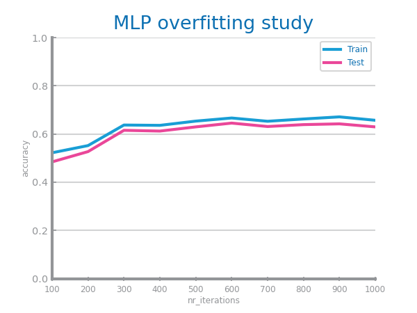16: We are able to identify the existence of overfitting for MLP models trained longer than 300 episodes.
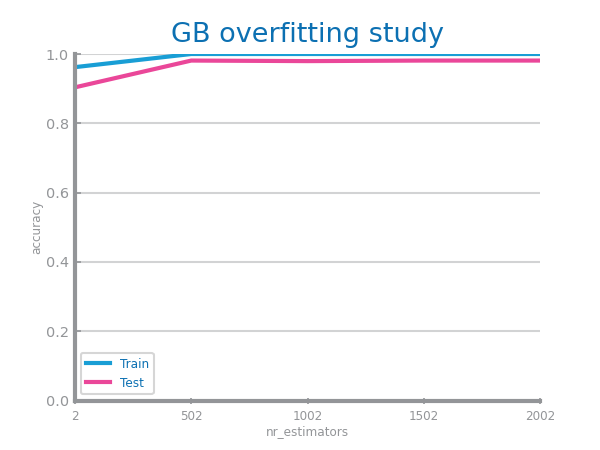17: We are able to identify the existence of overfitting for gradient boosting models with more than 1502 estimators.

18: Results for Random Forests identified as 3, may be explained by its estimators being in overfitting.
19: The random forests results shown can be explained by the lack of diversity resulting from the number of features considered.
20: We are able to identify the existence of overfitting for random forest models with more than 502 estimators.

21: KNN is in overfitting for k larger than 5.
22: KNN with 7 neighbour is in overfitting.
23: KNN with less than 17 neighbours is in overfitting.
24: We are able to identify the existence of overfitting for KNN models with less than 4 neighbors.

25: According to the decision tree overfitting chart, the tree with 16 nodes of depth is in overfitting.
26: The chart reporting the recall for different trees shows that the model enters in overfitting for models with depth higher than 4.
27: The decision tree is in overfitting for depths above 9.
28: We are able to identify the existence of overfitting for decision tree models with more than 4 nodes of depth.

29: The first 2 principal components are enough for explaining half the data variance.
30: Using the first 5 principal components would imply an error between 10 and 30%.
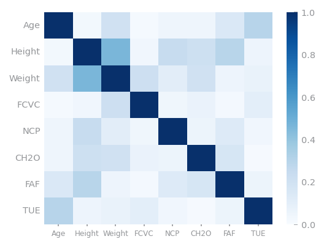31: The intrinsic dimensionality of this dataset is 3.
32: One of the variables CH2O or NCP can be discarded without losing information.
33: The variable FAF can be discarded without risking losing information.
34: Variables TUE and FAF are redundant, but we can’t say the same for the pair Height and FCVC.
35: Variables Weight and FAF are redundant.
36: From the correlation analysis alone, it is clear that there are relevant variables.
37: Variable Weight seems to be relevant for the majority of mining tasks.
38: Variables Age and Height seem to be useful for classification tasks.
39: Applying a non-supervised feature selection based on the redundancy, would not increase the performance of the generality of the training algorithms in this dataset.
40: Removing variable FAF might improve the training of decision trees .
41: There is evidence in favour for sequential backward selection to select variable NCP previously than variable Weight.

42: Variable FCVC is balanced.
43: Those boxplots show that the data is not normalized.
44: It is clear that variable TUE shows some outliers, but we can’t be sure of the same for variable NCP.
45: Outliers seem to be a problem in the dataset.
46: Variable FAF shows a high number of outlier values.
47: Variable Age doesn’t have any outliers.
48: Variable TUE presents some outliers.
49: At least 75 of the variables present outliers.
50: The histograms presented show a large number of outliers for most of the numeric variables.
51: The existence of outliers is one of the problems to tackle in this dataset.
52: A scaling transformation is mandatory, in order to improve the Naive Bayes performance in this dataset.
53: Multiplying ratio and Boolean variables by 100, and variables with a range between 0 and 10 by 10, would have an impact similar to other scaling transformations.
54: Normalization of this dataset could not have impact on a KNN classifier.
55: Scaling this dataset would be mandatory to improve the results with distance-based methods.
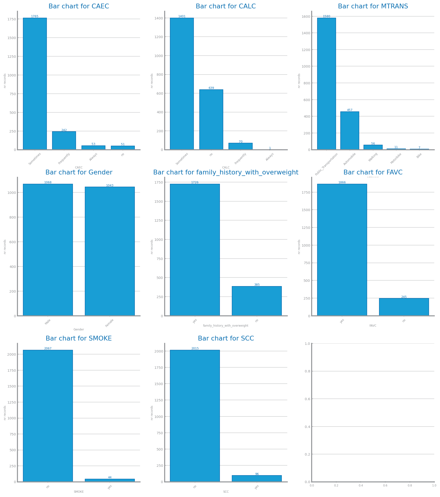56: All variables, but the class, should be dealt with as symbolic.
57: The variable FAVC can be seen as ordinal.
58: The variable FAVC can be seen as ordinal without losing information.
59: Considering the common semantics for FAVC and CAEC variables, dummification if applied would increase the risk of facing the curse of dimensionality.
60: Considering the common semantics for family_history_with_overweight variable, dummification would be the most adequate encoding.
61: The variable CALC can be coded as ordinal without losing information.
62: Feature generation based on variable MTRANS seems to be promising.
63: Feature generation based on the use of variable Gender wouldn’t be useful, but the use of CAEC seems to be promising.
64: Given the usual semantics of SMOKE variable, dummification would have been a better codification.
65: It is better to drop the variable CAEC than removing all records with missing values.
66: Not knowing the semantics of CALC variable, dummification could have been a more adequate codification.
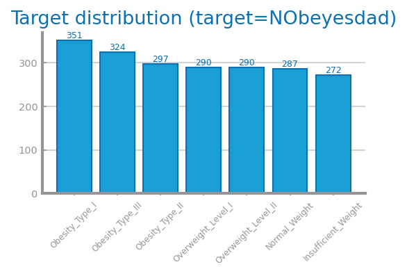67: Balancing this dataset would be mandatory to improve the results.
68: Given the number of records and that some variables are date, we might be facing the curse of dimensionality.
69: We face the curse of dimensionality when training a classifier with this dataset.
70: Balancing this dataset by SMOTE would most probably be preferable over undersampling.

71: All variables, but the class, should be dealt with as symbolic.
72: The variable Age can be seen as ordinal.
73: The variable Weight can be seen as ordinal without losing information.
74: Variable NCP is balanced.
75: It is clear that variable FAF shows some outliers, but we can’t be sure of the same for variable FCVC.
76: Outliers seem to be a problem in the dataset.
77: Variable TUE shows a high number of outlier values.
78: Variable FAF doesn’t have any outliers.
79: Variable Height presents some outliers.
80: At least 75 of the variables present outliers.
81: The histograms presented show a large number of outliers for most of the numeric variables.
82: The existence of outliers is one of the problems to tackle in this dataset.
83: Considering the common semantics for TUE and Age variables, dummification if applied would increase the risk of facing the curse of dimensionality.
84: Considering the common semantics for Height variable, dummification would be the most adequate encoding.
85: The variable NCP can be coded as ordinal without losing information.
86: Feature generation based on variable Height seems to be promising.
87: Feature generation based on the use of variable FAF wouldn’t be useful, but the use of Age seems to be promising.
88: Given the usual semantics of FAF variable, dummification would have been a better codification.
89: It is better to drop the variable TUE than removing all records with missing values.
90: Not knowing the semantics of Weight variable, dummification could have been a more adequate codification.
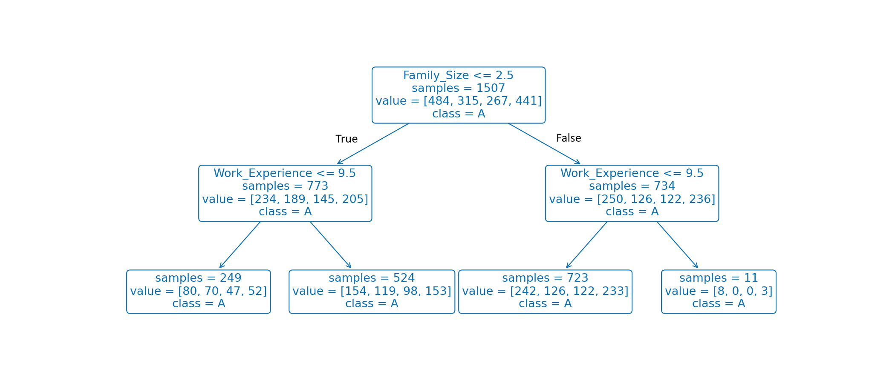91: It is clear that variable Work_Experience is one of the four most relevant features.
92: The variable Work_Experience seems to be one of the three most relevant features.
93: The variable Work_Experience discriminates between the target values, as shown in the decision tree.
94: It is possible to state that Work_Experience is the second most discriminative variable regarding the class.
95: Variable Work_Experience is one of the most relevant variables.
96: Variable Work_Experience seems to be relevant for the majority of mining tasks.
97: Variables Work_Experience and Family_Size seem to be useful for classification tasks.
98: A smaller tree would be delivered if we would apply post-pruning, accepting an accuracy reduction of 5%.
99: As reported in the tree, the number of False Positive is bigger than the number of False Negatives.
100: The recall for the presented tree is lower than 60%.
101: The number of False Positives reported in the same tree is 30.
102: The number of True Positives is lower than the number of False Positives for the presented tree.
103: The number of True Negatives reported in the same tree is 10.
104: Considering that A=True<=>[Family_Size <= 2.5] and B=True<=>[Work_Experience <= 9.5], it is possible to state that KNN algorithm classifies (A,B) as D for any k ≤ 11.
105: Considering that A=True<=>[Family_Size <= 2.5] and B=True<=>[Work_Experience <= 9.5], the Decision Tree presented classifies (not A, not B) as C.
106: Considering that A=True<=>[Family_Size <= 2.5] and B=True<=>[Work_Experience <= 9.5], it is possible to state that KNN algorithm classifies (A,B) as A for any k ≤ 249.
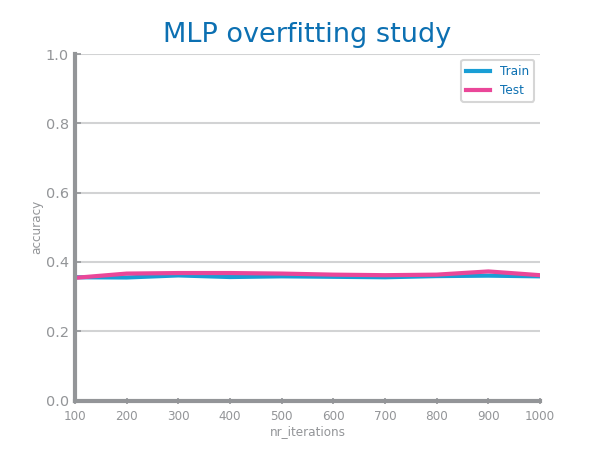107: We are able to identify the existence of overfitting for MLP models trained longer than 700 episodes.
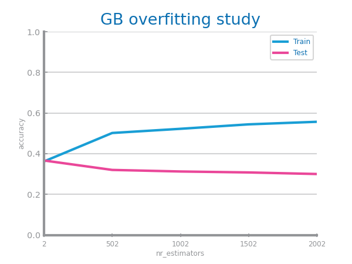108: We are able to identify the existence of overfitting for gradient boosting models with more than 1002 estimators.
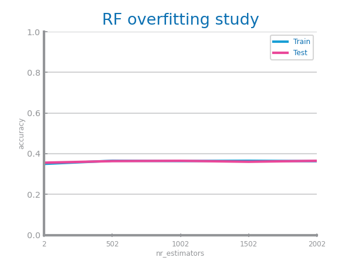109: Results for Random Forests identified as 3, may be explained by its estimators being in overfitting.
110: The random forests results shown can be explained by the lack of diversity resulting from the number of features considered.
111: We are able to identify the existence of overfitting for random forest models with more than 1002 estimators.
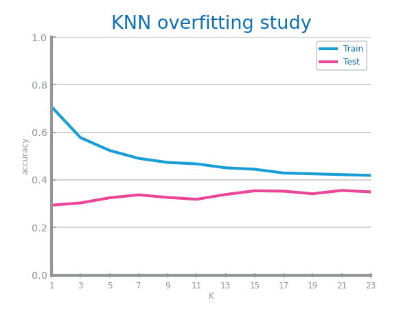112: KNN is in overfitting for k less than 17.
113: KNN with 7 neighbour is in overfitting.
114: KNN with more than 15 neighbours is in overfitting.
115: We are able to identify the existence of overfitting for KNN models with less than 6 neighbors.
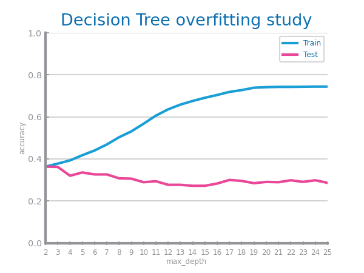116: According to the decision tree overfitting chart, the tree with 5 nodes of depth is in overfitting.
117: The chart reporting the recall for different trees shows that the model enters in overfitting for models with depth higher than 9.
118: The decision tree is in overfitting for depths above 8.
119: We are able to identify the existence of overfitting for decision tree models with more than 3 nodes of depth.
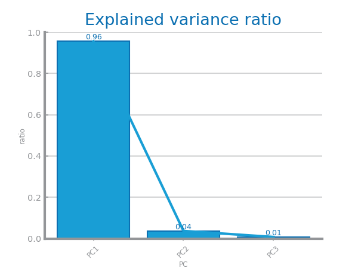120: The first 2 principal components are enough for explaining half the data variance.
121: Using the first 2 principal components would imply an error between 15 and 30%.

122: The intrinsic dimensionality of this dataset is 2.
123: One of the variables Age or Family_Size can be discarded without losing information.
124: The variable Family_Size can be discarded without risking losing information.
125: Variables Age and Family_Size seem to be useful for classification tasks.
126: Variables Work_Experience and Family_Size are redundant.
127: From the correlation analysis alone, it is clear that there are relevant variables.
128: Variable Family_Size seems to be relevant for the majority of mining tasks.
129: Variables Family_Size and Age seem to be useful for classification tasks.
130: Applying a non-supervised feature selection based on the redundancy, would not increase the performance of the generality of the training algorithms in this dataset.
131: Removing variable Family_Size might improve the training of decision trees .
132: There is evidence in favour for sequential backward selection to select variable Family_Size previously than variable Age.
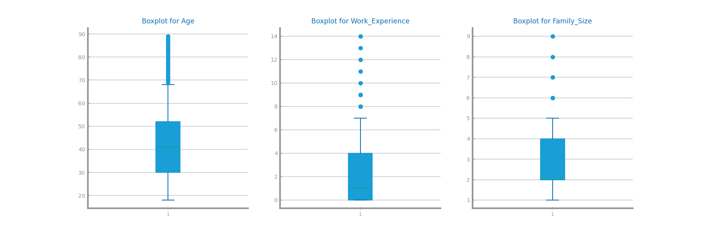133: Variable Age is balanced.
134: Those boxplots show that the data is not normalized.
135: It is clear that variable Age shows some outliers, but we can’t be sure of the same for variable Work_Experience.
136: Outliers seem to be a problem in the dataset.
137: Variable Work_Experience shows a high number of outlier values.
138: Variable Work_Experience doesn’t have any outliers.
139: Variable Work_Experience presents some outliers.
140: At least 50 of the variables present outliers.
141: The histograms presented show a large number of outliers for most of the numeric variables.
142: The existence of outliers is one of the problems to tackle in this dataset.
143: A scaling transformation is mandatory, in order to improve the Naive Bayes performance in this dataset.
144: Multiplying ratio and Boolean variables by 100, and variables with a range between 0 and 10 by 10, would have an impact similar to other scaling transformations.
145: Normalization of this dataset could not have impact on a KNN classifier.
146: Scaling this dataset would be mandatory to improve the results with distance-based methods.
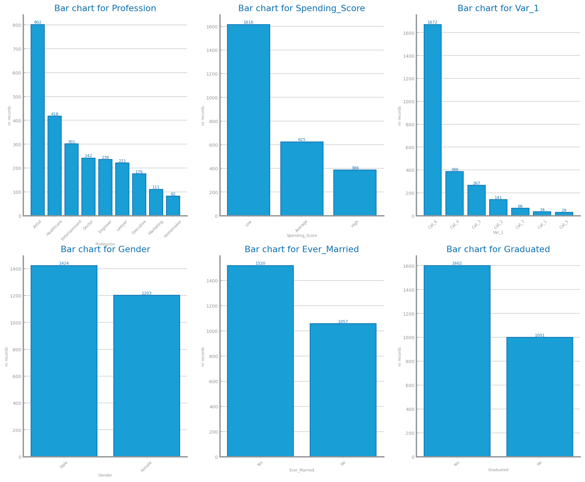147: All variables, but the class, should be dealt with as date.
148: The variable Spending_Score can be seen as ordinal.
149: The variable Profession can be seen as ordinal without losing information.
150: Considering the common semantics for Profession and Spending_Score variables, dummification if applied would increase the risk of facing the curse of dimensionality.
151: Considering the common semantics for Var_1 variable, dummification would be the most adequate encoding.
152: The variable Profession can be coded as ordinal without losing information.
153: Feature generation based on variable Var_1 seems to be promising.
154: Feature generation based on the use of variable Profession wouldn’t be useful, but the use of Spending_Score seems to be promising.
155: Given the usual semantics of Gender variable, dummification would have been a better codification.
156: It is better to drop the variable Graduated than removing all records with missing values.
157: Not knowing the semantics of Graduated variable, dummification could have been a more adequate codification.

158: Discarding variable Ever_Married would be better than discarding all the records with missing values for that variable.
159: Dropping all records with missing values would be better than to drop the variables with missing values.
160: Dropping all rows with missing values can lead to a dataset with less than 25% of the original data.
161: There is no reason to believe that discarding records showing missing values is safer than discarding the corresponding variables in this case.
162: Feature generation based on variable Graduated seems to be promising.
163: It is better to drop the variable Var_1 than removing all records with missing values.
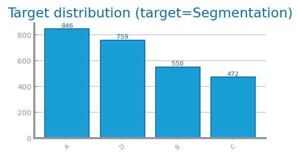164: Balancing this dataset would be mandatory to improve the results.

165: Given the number of records and that some variables are numeric, we might be facing the curse of dimensionality.
166: We face the curse of dimensionality when training a classifier with this dataset.
167: Balancing this dataset by SMOTE would most probably be preferable over undersampling.
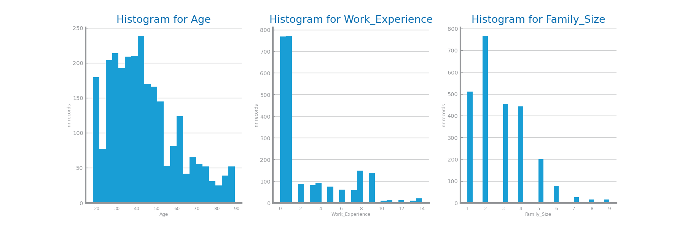168: All variables, but the class, should be dealt with as date.
169: The variable Family_Size can be seen as ordinal.
170: The variable Age can be seen as ordinal without losing information.
171: Variable Work_Experience is balanced.
172: It is clear that variable Family_Size shows some outliers, but we can’t be sure of the same for variable Work_Experience.
173: Outliers seem to be a problem in the dataset.
174: Variable Work_Experience shows some outlier values.
175: Variable Work_Experience doesn’t have any outliers.
176: Variable Age presents some outliers.
177: At least 50 of the variables present outliers.
178: The boxplots presented show a large number of outliers for most of the numeric variables.
179: The existence of outliers is one of the problems to tackle in this dataset.
180: Considering the common semantics for Family_Size and Age variables, dummification if applied would increase the risk of facing the curse of dimensionality.
181: Considering the common semantics for Work_Experience variable, dummification would be the most adequate encoding.
182: The variable Work_Experience can be coded as ordinal without losing information.
183: Feature generation based on variable Family_Size seems to be promising.
184: Feature generation based on the use of variable Family_Size wouldn’t be useful, but the use of Age seems to be promising.
185: Given the usual semantics of Family_Size variable, dummification would have been a better codification.
186: It is better to drop the variable Work_Experience than removing all records with missing values.
187: Not knowing the semantics of Work_Experience variable, dummification could have been a more adequate codification.
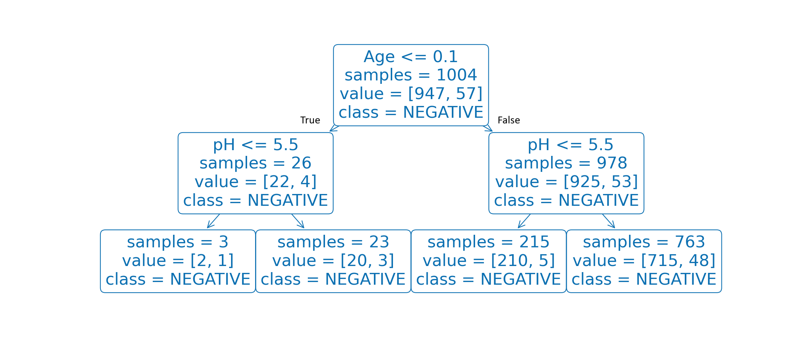188: It is clear that variable pH is one of the three most relevant features.
189: The variable Age seems to be one of the four most relevant features.
190: The variable Age discriminates between the target values, as shown in the decision tree.
191: It is possible to state that pH is the first most discriminative variable regarding the class.
192: Variable Specific Gravity is one of the most relevant variables.
193: Variable Age seems to be relevant for the majority of mining tasks.
194: Variables Specific Gravity and pH seem to be useful for classification tasks.
195: A smaller tree would be delivered if we would apply post-pruning, accepting an accuracy reduction of 8%.
196: As reported in the tree, the number of False Positive is bigger than the number of False Negatives.
197: The accuracy for the presented tree is lower than 75%.
198: The number of False Positives reported in the same tree is 10.
199: The number of True Positives is higher than the number of False Positives for the presented tree.
200: The number of True Negatives is higher than the number of True Positives for the presented tree.
201: Considering that A=True<=>[Age <= 0.1] and B=True<=>[pH <= 5.5], it is possible to state that KNN algorithm classifies (A,B) as POSITIVE for any k ≤ 215.
202: Considering that A=True<=>[Age <= 0.1] and B=True<=>[pH <= 5.5], the Decision Tree presented classifies (not A, B) as POSITIVE.
203: Considering that A=True<=>[Age <= 0.1] and B=True<=>[pH <= 5.5], it is possible to state that Naive Bayes algorithm classifies (not A, B), as NEGATIVE.
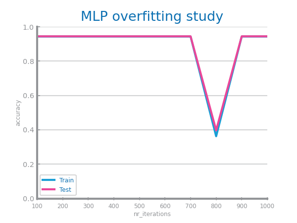204: We are able to identify the existence of overfitting for MLP models trained longer than 500 episodes.
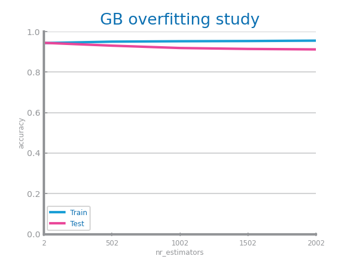205: We are able to identify the existence of overfitting for gradient boosting models with more than 1002 estimators.

206: Results for Random Forests identified as 2, may be explained by its estimators being in overfitting.
207: The random forests results shown can be explained by the lack of diversity resulting from the number of features considered.
208: We are able to identify the existence of overfitting for random forest models with more than 1002 estimators.
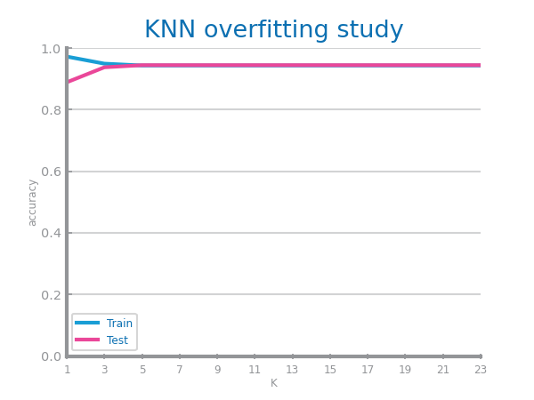209: KNN is in overfitting for k less than 5.
210: KNN with 7 neighbour is in overfitting.
211: KNN with less than 17 neighbours is in overfitting.
212: We are able to identify the existence of overfitting for KNN models with less than 3 neighbors.
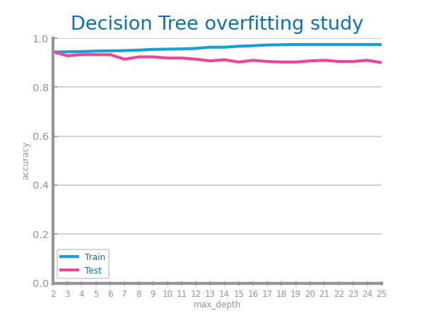213: According to the decision tree overfitting chart, the tree with 20 nodes of depth is in overfitting.
214: The chart reporting the recall for different trees shows that the model enters in overfitting for models with depth higher than 10.
215: The decision tree is in overfitting for depths above 9.
216: We are able to identify the existence of overfitting for decision tree models with more than 4 nodes of depth.
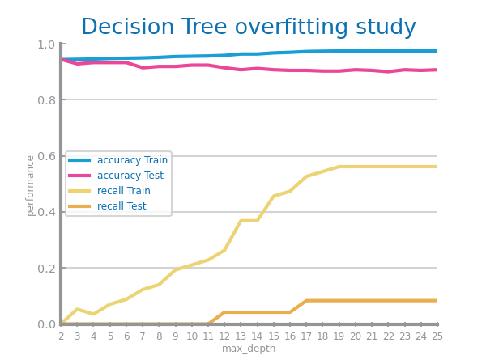217: The difference between recall and accuracy becomes smaller with the depth due to the overfitting phenomenon.

218: The first 2 principal components are enough for explaining half the data variance.
219: Using the first 2 principal components would imply an error between 15 and 25%.

220: The intrinsic dimensionality of this dataset is 2.
221: One of the variables pH or Specific Gravity can be discarded without losing information.
222: The variable Specific Gravity can be discarded without risking losing information.
223: Variables pH and Age seem to be useful for classification tasks.
224: Variables pH and Specific Gravity are redundant.
225: From the correlation analysis alone, it is clear that there are relevant variables.
226: Variable Specific Gravity seems to be relevant for the majority of mining tasks.
227: Variables Specific Gravity and pH seem to be useful for classification tasks.
228: Applying a non-supervised feature selection based on the redundancy, would not increase the performance of the generality of the training algorithms in this dataset.
229: Removing variable pH might improve the training of decision trees .
230: There is evidence in favour for sequential backward selection to select variable Specific Gravity previously than variable Age.

231: Variable pH is balanced.
232: Those boxplots show that the data is not normalized.
233: It is clear that variable Age shows some outliers, but we can’t be sure of the same for variable Specific Gravity.
234: Outliers seem to be a problem in the dataset.
235: Variable pH shows a high number of outlier values.
236: Variable Specific Gravity doesn’t have any outliers.
237: Variable Specific Gravity presents some outliers.
238: At least 85 of the variables present outliers.
239: The boxplots presented show a large number of outliers for most of the numeric variables.
240: The existence of outliers is one of the problems to tackle in this dataset.
241: A scaling transformation is mandatory, in order to improve the Naive Bayes performance in this dataset.
242: Multiplying ratio and Boolean variables by 100, and variables with a range between 0 and 10 by 10, would have an impact similar to other scaling transformations.
243: Normalization of this dataset could not have impact on a KNN classifier.
244: Scaling this dataset would be mandatory to improve the results with distance-based methods.
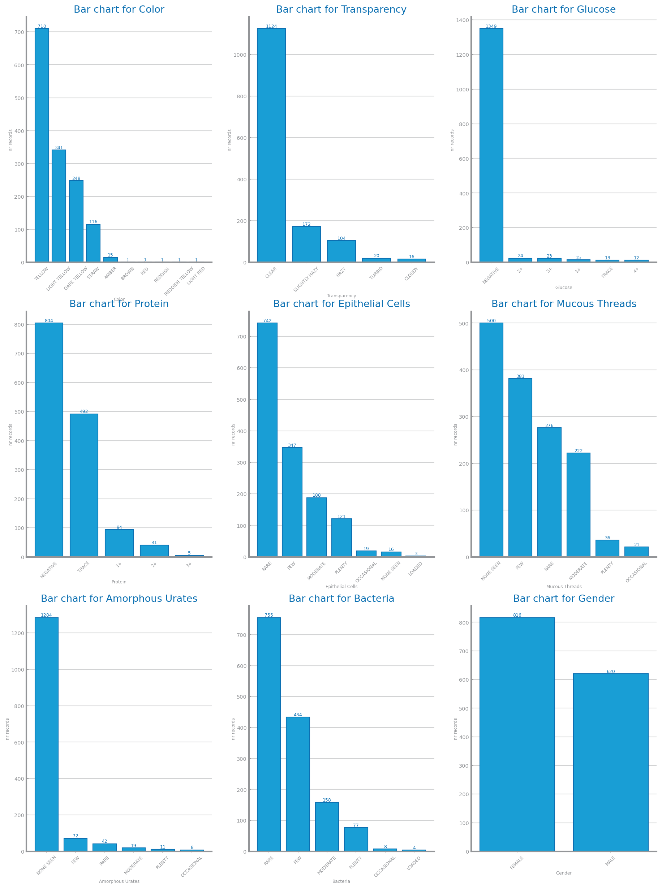245: All variables, but the class, should be dealt with as symbolic.
246: The variable Transparency can be seen as ordinal.
247: The variable Mucous Threads can be seen as ordinal without losing information.
248: Considering the common semantics for Amorphous Urates and Color variables, dummification if applied would increase the risk of facing the curse of dimensionality.
249: Considering the common semantics for Glucose variable, dummification would be the most adequate encoding.
250: The variable Transparency can be coded as ordinal without losing information.
251: Feature generation based on variable Gender seems to be promising.
252: Feature generation based on the use of variable Protein wouldn’t be useful, but the use of Color seems to be promising.
253: Given the usual semantics of Bacteria variable, dummification would have been a better codification.
254: It is better to drop the variable Mucous Threads than removing all records with missing values.
255: Not knowing the semantics of Transparency variable, dummification could have been a more adequate codification.

256: Discarding variable Color would be better than discarding all the records with missing values for that variable.
257: Dropping all records with missing values would be better than to drop the variables with missing values.
258: Dropping all rows with missing values can lead to a dataset with less than 40% of the original data.
259: There is no reason to believe that discarding records showing missing values is safer than discarding the corresponding variables in this case.
260: Feature generation based on variable Color seems to be promising.
261: It is better to drop the variable Color than removing all records with missing values.

262: Balancing this dataset would be mandatory to improve the results.
263: Given the number of records and that some variables are numeric, we might be facing the curse of dimensionality.
264: We face the curse of dimensionality when training a classifier with this dataset.
265: Balancing this dataset by SMOTE would most probably be preferable over undersampling.
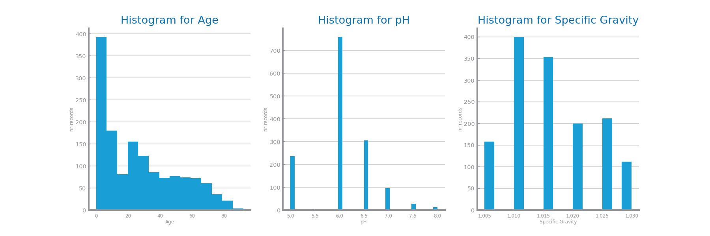266: All variables, but the class, should be dealt with as date.
267: The variable Age can be seen as ordinal.
268: The variable Age can be seen as ordinal without losing information.
269: Variable Age is balanced.
270: It is clear that variable Specific Gravity shows some outliers, but we can’t be sure of the same for variable Age.
271: Outliers seem to be a problem in the dataset.
272: Variable Age shows a high number of outlier values.
273: Variable Specific Gravity doesn’t have any outliers.
274: Variable Age presents some outliers.
275: At least 85 of the variables present outliers.
276: The boxplots presented show a large number of outliers for most of the numeric variables.
277: The existence of outliers is one of the problems to tackle in this dataset.
278: Considering the common semantics for pH and Age variables, dummification if applied would increase the risk of facing the curse of dimensionality.
279: Considering the common semantics for Specific Gravity variable, dummification would be the most adequate encoding.
280: The variable Age can be coded as ordinal without losing information.
281: Feature generation based on variable Specific Gravity seems to be promising.
282: Feature generation based on the use of variable Specific Gravity wouldn’t be useful, but the use of Age seems to be promising.
283: Given the usual semantics of pH variable, dummification would have been a better codification.
284: It is better to drop the variable Specific Gravity than removing all records with missing values.
285: Not knowing the semantics of Specific Gravity variable, dummification could have been a more adequate codification.
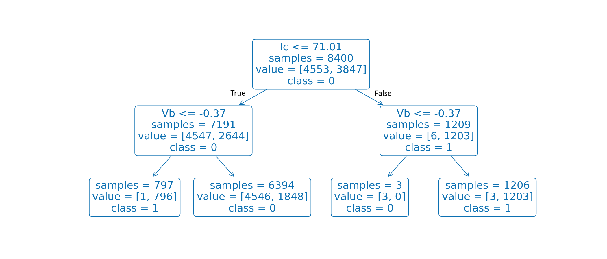286: It is clear that variable Vb is one of the four most relevant features.
287: The variable Vc seems to be one of the five most relevant features.
288: The variable Ib discriminates between the target values, as shown in the decision tree.
289: It is possible to state that Vc is the second most discriminative variable regarding the class.
290: Variable Ic is one of the most relevant variables.
291: Variable Ic seems to be relevant for the majority of mining tasks.
292: Variables Vc and Ib seem to be useful for classification tasks.
293: A smaller tree would be delivered if we would apply post-pruning, accepting an accuracy reduction of 6%.
294: As reported in the tree, the number of False Positive is bigger than the number of False Negatives.
295: The precision for the presented tree is higher than 60%.
296: The number of True Positives is lower than the number of False Negatives for the presented tree.
297: The number of True Positives is lower than the number of False Negatives for the presented tree.
298: The variable Va seems to be one of the four most relevant features.
299: Considering that A=True<=>[Ic <= 71.01] and B=True<=>[Vb <= -0.37], it is possible to state that KNN algorithm classifies (A,B) as 1 for any k ≤ 797.
300: Considering that A=True<=>[Ic <= 71.01] and B=True<=>[Vb <= -0.37], it is possible to state that KNN algorithm classifies (A,B) as 0 for any k ≤ 1206.
301: Considering that A=True<=>[Ic <= 71.01] and B=True<=>[Vb <= -0.37], it is possible to state that KNN algorithm classifies (not A, B) as 1 for any k ≤ 3.
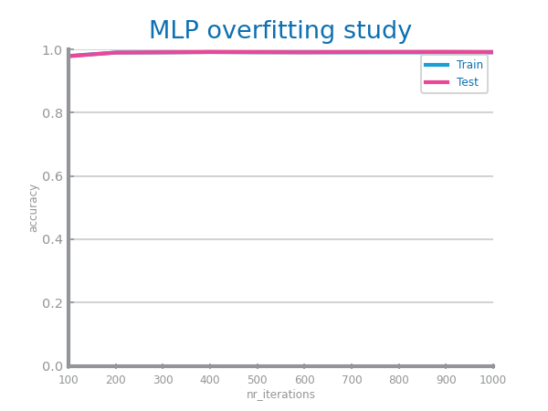302: We are able to identify the existence of overfitting for MLP models trained longer than 700 episodes.

303: We are able to identify the existence of overfitting for gradient boosting models with more than 1002 estimators.

304: Results for Random Forests identified as 10, may be explained by its estimators being in underfitting.
305: The random forests results shown can be explained by the lack of diversity resulting from the number of features considered.
306: We are able to identify the existence of overfitting for random forest models with more than 1502 estimators.
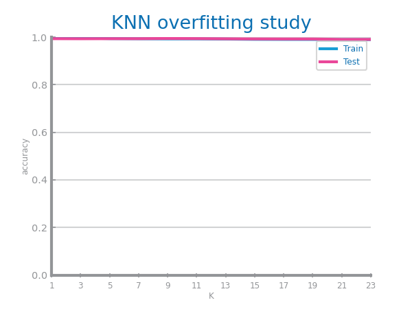307: KNN is in overfitting for k larger than 17.
308: KNN with 5 neighbour is in overfitting.
309: KNN with more than 7 neighbours is in overfitting.
310: We are able to identify the existence of overfitting for KNN models with less than 2 neighbors.

311: According to the decision tree overfitting chart, the tree with 9 nodes of depth is in overfitting.
312: The chart reporting the recall for different trees shows that the model enters in overfitting for models with depth higher than 7.
313: The decision tree is in overfitting for depths above 6.
314: We are able to identify the existence of overfitting for decision tree models with more than 3 nodes of depth.

315: The difference between recall and accuracy becomes smaller with the depth due to the overfitting phenomenon.
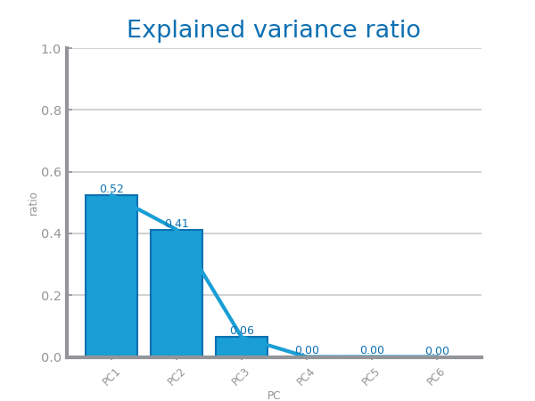316: The first 5 principal components are enough for explaining half the data variance.
317: Using the first 2 principal components would imply an error between 15 and 30%.
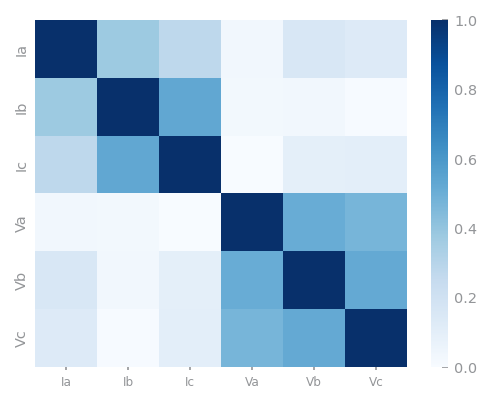318: The intrinsic dimensionality of this dataset is 2.
319: One of the variables Ic or Ia can be discarded without losing information.
320: The variable Ia can be discarded without risking losing information.
321: Variables Vb and Ia are redundant, but we can’t say the same for the pair Va and Ic.
322: Variables Ia and Ib are redundant.
323: From the correlation analysis alone, it is clear that there are relevant variables.
324: Variable Ic seems to be relevant for the majority of mining tasks.
325: Variables Vc and Ic seem to be useful for classification tasks.
326: Applying a non-supervised feature selection based on the redundancy, would not increase the performance of the generality of the training algorithms in this dataset.
327: Removing variable Va might improve the training of decision trees .
328: There is evidence in favour for sequential backward selection to select variable Vc previously than variable Ic.
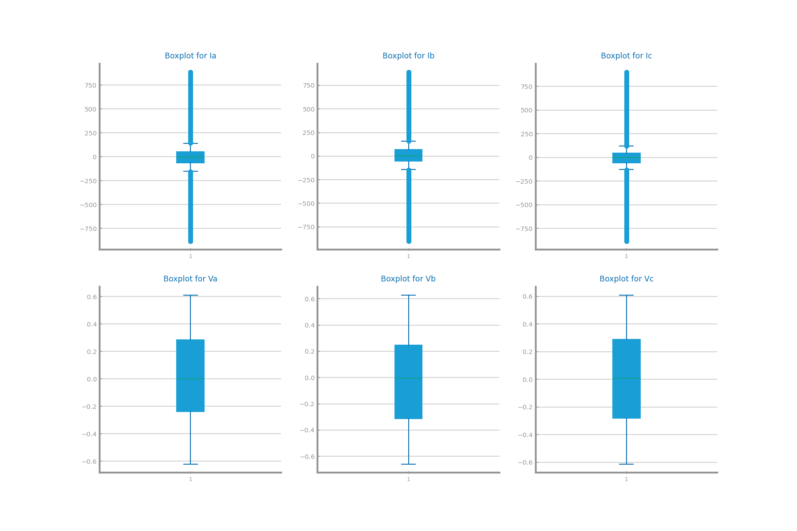329: Variable Vb is balanced.
330: Those boxplots show that the data is not normalized.
331: It is clear that variable Ib shows some outliers, but we can’t be sure of the same for variable Vc.
332: Outliers seem to be a problem in the dataset.
333: Variable Vb shows a high number of outlier values.
334: Variable Ia doesn’t have any outliers.
335: Variable Ia presents some outliers.
336: At least 50 of the variables present outliers.
337: The histograms presented show a large number of outliers for most of the numeric variables.
338: The existence of outliers is one of the problems to tackle in this dataset.
339: A scaling transformation is mandatory, in order to improve the KNN performance in this dataset.
340: Multiplying ratio and Boolean variables by 100, and variables with a range between 0 and 10 by 10, would have an impact similar to other scaling transformations.
341: Normalization of this dataset could not have impact on a KNN classifier.
342: Scaling this dataset would be mandatory to improve the results with distance-based methods.

343: Balancing this dataset would be mandatory to improve the results.
344: Given the number of records and that some variables are date, we might be facing the curse of dimensionality.
345: We face the curse of dimensionality when training a classifier with this dataset.
346: Balancing this dataset by SMOTE would most probably be preferable over undersampling.

347: All variables, but the class, should be dealt with as symbolic.
348: The variable Ic can be seen as ordinal.
349: The variable Ib can be seen as ordinal without losing information.
350: Variable Va is balanced.
351: It is clear that variable Vb shows some outliers, but we can’t be sure of the same for variable Vc.
352: Outliers seem to be a problem in the dataset.
353: Variable Ib shows some outlier values.
354: Variable Ic doesn’t have any outliers.
355: Variable Vc presents some outliers.
356: At least 75 of the variables present outliers.
357: The boxplots presented show a large number of outliers for most of the numeric variables.
358: The existence of outliers is one of the problems to tackle in this dataset.
359: Considering the common semantics for Vc and Ia variables, dummification if applied would increase the risk of facing the curse of dimensionality.
360: Considering the common semantics for Ic variable, dummification would be the most adequate encoding.
361: The variable Ia can be coded as ordinal without losing information.
362: Feature generation based on variable Vb seems to be promising.
363: Feature generation based on the use of variable Vb wouldn’t be useful, but the use of Ia seems to be promising.
364: Given the usual semantics of Ic variable, dummification would have been a better codification.
365: It is better to drop the variable Ic than removing all records with missing values.
366: Not knowing the semantics of Va variable, dummification could have been a more adequate codification.
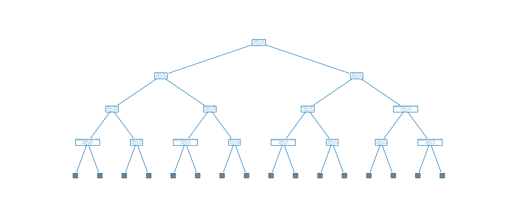367: It is clear that variable Glucose is one of the five most relevant features.
368: The variable Glucose seems to be one of the three most relevant features.
369: The variable Insulin discriminates between the target values, as shown in the decision tree.
370: It is possible to state that Age is the second most discriminative variable regarding the class.
371: Variable DiabetesPedigreeFunction is one of the most relevant variables.
372: Variable Age seems to be relevant for the majority of mining tasks.
373: Variables Age and DiabetesPedigreeFunction seem to be useful for classification tasks.
374: A smaller tree would be delivered if we would apply post-pruning, accepting an accuracy reduction of 8%.
375: As reported in the tree, the number of False Positive is bigger than the number of False Negatives.
376: The specificity for the presented tree is higher than 75%.
377: The number of False Negatives is lower than the number of True Negatives for the presented tree.
378: The number of False Negatives is lower than the number of False Positives for the presented tree.
379: The variable Insulin seems to be one of the three most relevant features.
380: Considering that A=True<=>[BMI <= 29.85] and B=True<=>[Age <= 27.5], it is possible to state that Naive Bayes algorithm classifies (not A, B), as 1.
381: Considering that A=True<=>[BMI <= 29.85] and B=True<=>[Age <= 27.5], it is possible to state that KNN algorithm classifies (A,B) as 0 for any k ≤ 161.
382: Considering that A=True<=>[BMI <= 29.85] and B=True<=>[Age <= 27.5], it is possible to state that KNN algorithm classifies (A,B) as 1 for any k ≤ 167.
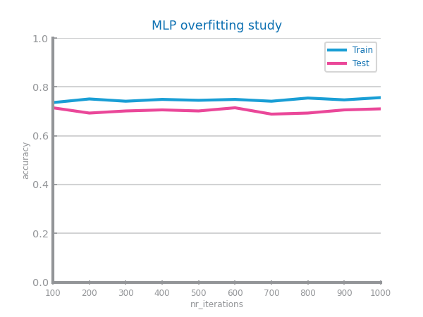383: We are able to identify the existence of overfitting for MLP models trained longer than 500 episodes.
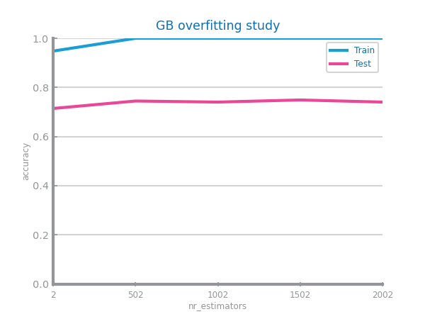384: We are able to identify the existence of overfitting for gradient boosting models with more than 1002 estimators.
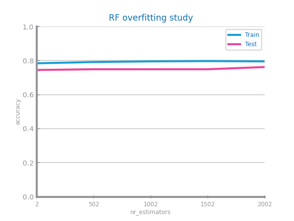385: Results for Random Forests identified as 2, may be explained by its estimators being in underfitting.
386: The random forests results shown can be explained by the lack of diversity resulting from the number of features considered.
387: We are able to identify the existence of overfitting for random forest models with more than 502 estimators.
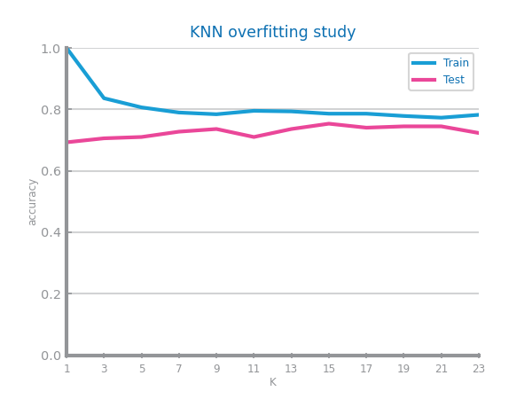388: KNN is in overfitting for k larger than 13.
389: KNN with 5 neighbour is in overfitting.
390: KNN with more than 15 neighbours is in overfitting.
391: We are able to identify the existence of overfitting for KNN models with less than 4 neighbors.
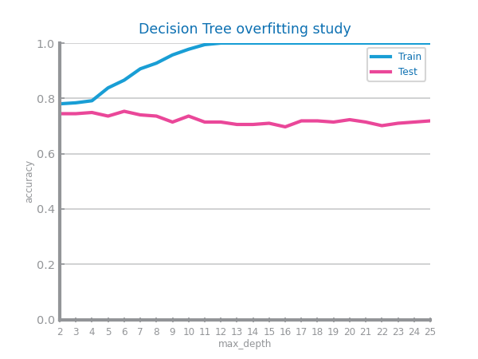392: According to the decision tree overfitting chart, the tree with 12 nodes of depth is in overfitting.
393: The chart reporting the recall for different trees shows that the model enters in overfitting for models with depth higher than 3.
394: The decision tree is in overfitting for depths above 10.
395: We are able to identify the existence of overfitting for decision tree models with more than 6 nodes of depth.
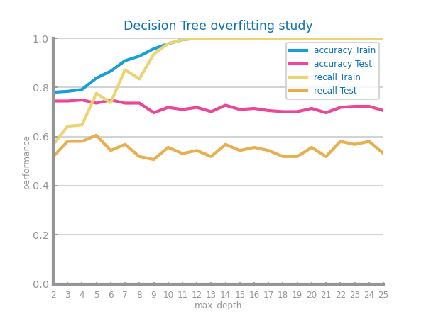396: The difference between recall and accuracy becomes smaller with the depth due to the overfitting phenomenon.
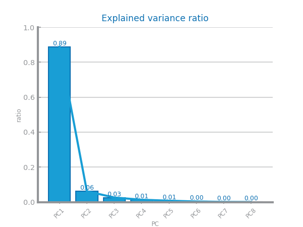397: The first 4 principal components are enough for explaining half the data variance.
398: Using the first 6 principal components would imply an error between 15 and 20%.
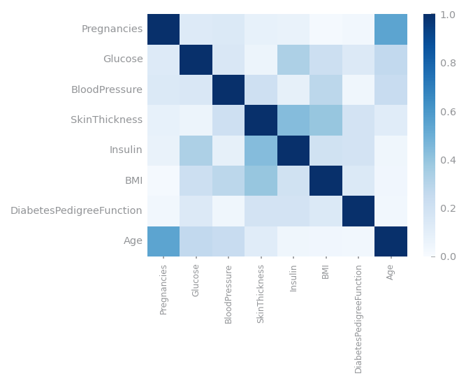399: The intrinsic dimensionality of this dataset is 7.
400: One of the variables Age or Insulin can be discarded without losing information.
401: The variable Glucose can be discarded without risking losing information.
402: Variables Pregnancies and BMI are redundant, but we can’t say the same for the pair SkinThickness and Glucose.
403: Variables BloodPressure and DiabetesPedigreeFunction are redundant.
404: From the correlation analysis alone, it is clear that there are relevant variables.
405: Variable Glucose seems to be relevant for the majority of mining tasks.
406: Variables Age and DiabetesPedigreeFunction seem to be useful for classification tasks.
407: Applying a non-supervised feature selection based on the redundancy, would not increase the performance of the generality of the training algorithms in this dataset.
408: Removing variable Insulin might improve the training of decision trees .
409: There is evidence in favour for sequential backward selection to select variable Pregnancies previously than variable Insulin.
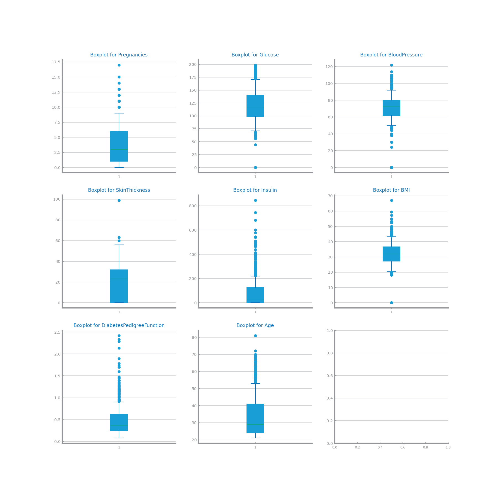410: Variable Age is balanced.
411: Those boxplots show that the data is not normalized.
412: It is clear that variable DiabetesPedigreeFunction shows some outliers, but we can’t be sure of the same for variable BloodPressure.
413: Outliers seem to be a problem in the dataset.
414: Variable Pregnancies shows some outlier values.
415: Variable Insulin doesn’t have any outliers.
416: Variable BloodPressure presents some outliers.
417: At least 60 of the variables present outliers.
418: The boxplots presented show a large number of outliers for most of the numeric variables.
419: The existence of outliers is one of the problems to tackle in this dataset.
420: A scaling transformation is mandatory, in order to improve the KNN performance in this dataset.
421: Multiplying ratio and Boolean variables by 100, and variables with a range between 0 and 10 by 10, would have an impact similar to other scaling transformations.
422: Normalization of this dataset could not have impact on a KNN classifier.
423: Scaling this dataset would be mandatory to improve the results with distance-based methods.
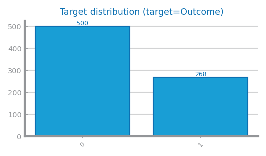424: Balancing this dataset would be mandatory to improve the results.
425: Given the number of records and that some variables are symbolic, we might be facing the curse of dimensionality.
426: We face the curse of dimensionality when training a classifier with this dataset.
427: Balancing this dataset by SMOTE would most probably be preferable over undersampling.
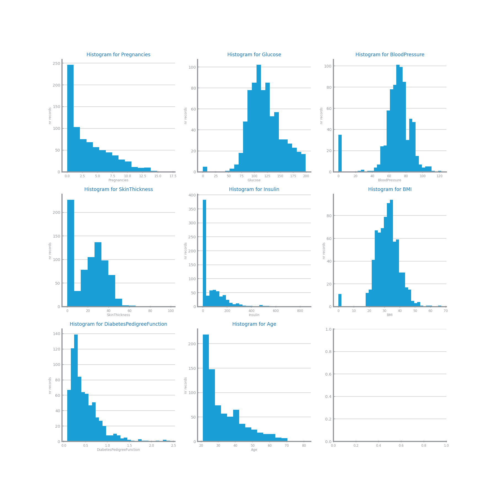428: All variables, but the class, should be dealt with as numeric.
429: The variable DiabetesPedigreeFunction can be seen as ordinal.
430: The variable BloodPressure can be seen as ordinal without losing information.
431: Variable Insulin is balanced.
432: It is clear that variable SkinThickness shows some outliers, but we can’t be sure of the same for variable BMI.
433: Outliers seem to be a problem in the dataset.
434: Variable DiabetesPedigreeFunction shows some outlier values.
435: Variable Insulin doesn’t have any outliers.
436: Variable DiabetesPedigreeFunction presents some outliers.
437: At least 50 of the variables present outliers.
438: The histograms presented show a large number of outliers for most of the numeric variables.
439: The existence of outliers is one of the problems to tackle in this dataset.
440: Considering the common semantics for Age and Pregnancies variables, dummification if applied would increase the risk of facing the curse of dimensionality.
441: Considering the common semantics for Age variable, dummification would be the most adequate encoding.
442: The variable BloodPressure can be coded as ordinal without losing information.
443: Feature generation based on variable SkinThickness seems to be promising.
444: Feature generation based on the use of variable Glucose wouldn’t be useful, but the use of Pregnancies seems to be promising.
445: Given the usual semantics of DiabetesPedigreeFunction variable, dummification would have been a better codification.
446: It is better to drop the variable Insulin than removing all records with missing values.
447: Not knowing the semantics of DiabetesPedigreeFunction variable, dummification could have been a more adequate codification.
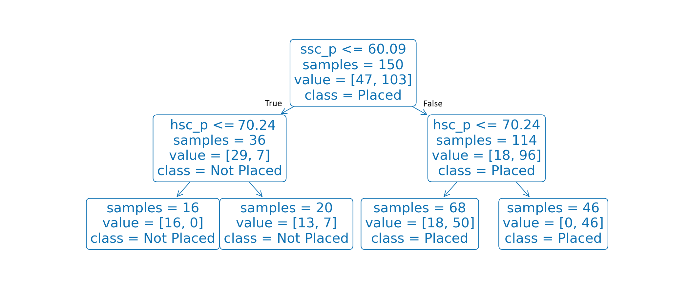448: It is clear that variable mba_p is one of the three most relevant features.
449: The variable mba_p seems to be one of the three most relevant features.
450: The variable degree_p discriminates between the target values, as shown in the decision tree.
451: It is possible to state that mba_p is the second most discriminative variable regarding the class.
452: Variable mba_p is one of the most relevant variables.
453: Variable ssc_p seems to be relevant for the majority of mining tasks.
454: Variables degree_p and etest_p seem to be useful for classification tasks.
455: A smaller tree would be delivered if we would apply post-pruning, accepting an accuracy reduction of 6%.
456: As reported in the tree, the number of False Positive is smaller than the number of False Negatives.
457: The recall for the presented tree is lower than 60%.
458: The number of False Negatives is lower than the number of True Negatives for the presented tree.
459: The number of True Negatives is lower than the number of False Negatives for the presented tree.
460: The variable etest_p seems to be one of the three most relevant features.
461: Considering that A=True<=>[ssc_p <= 60.09] and B=True<=>[hsc_p <= 70.24], it is possible to state that KNN algorithm classifies (A,B) as Not Placed for any k ≤ 16.
462: Considering that A=True<=>[ssc_p <= 60.09] and B=True<=>[hsc_p <= 70.24], the Decision Tree presented classifies (not A, B) as Not Placed.
463: Considering that A=True<=>[ssc_p <= 60.09] and B=True<=>[hsc_p <= 70.24], it is possible to state that KNN algorithm classifies (not A, B) as Placed for any k ≤ 68.

464: We are able to identify the existence of overfitting for MLP models trained longer than 500 episodes.
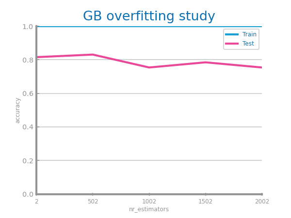465: We are able to identify the existence of overfitting for gradient boosting models with more than 1502 estimators.
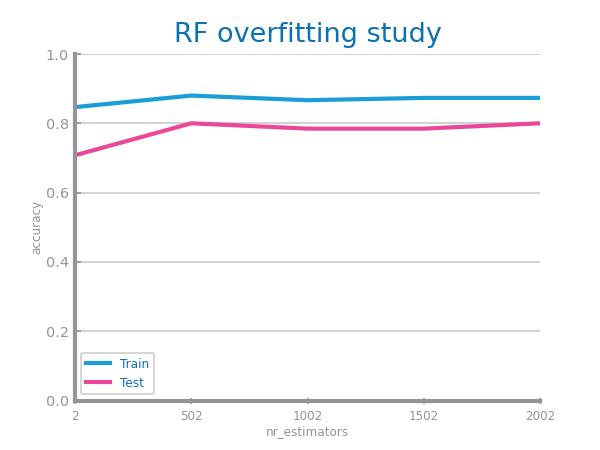466: Results for Random Forests identified as 2, may be explained by its estimators being in overfitting.
467: The random forests results shown can be explained by the lack of diversity resulting from the number of features considered.
468: We are able to identify the existence of overfitting for random forest models with more than 502 estimators.
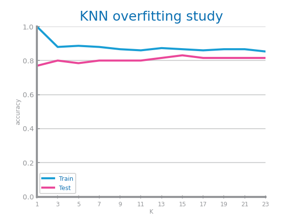469: KNN is in overfitting for k larger than 5.
470: KNN with 5 neighbour is in overfitting.
471: KNN with less than 17 neighbours is in overfitting.
472: We are able to identify the existence of overfitting for KNN models with less than 5 neighbors.

473: According to the decision tree overfitting chart, the tree with 16 nodes of depth is in overfitting.
474: The chart reporting the recall for different trees shows that the model enters in overfitting for models with depth higher than 4.
475: The decision tree is in overfitting for depths above 6.
476: We are able to identify the existence of overfitting for decision tree models with more than 4 nodes of depth.

477: The difference between recall and accuracy becomes smaller with the depth due to the overfitting phenomenon.
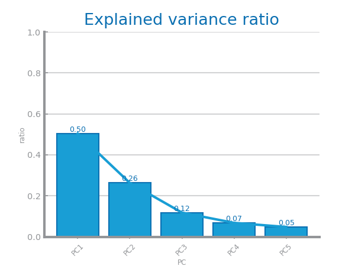478: The first 2 principal components are enough for explaining half the data variance.
479: Using the first 2 principal components would imply an error between 15 and 25%.
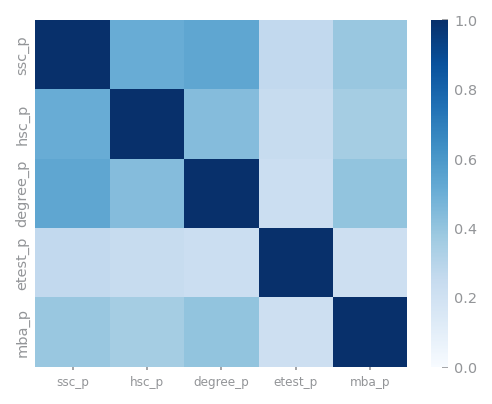480: The intrinsic dimensionality of this dataset is 4.
481: One of the variables ssc_p or hsc_p can be discarded without losing information.
482: The variable ssc_p can be discarded without risking losing information.
483: Variables etest_p and ssc_p are redundant, but we can’t say the same for the pair mba_p and degree_p.
484: Variables hsc_p and degree_p are redundant.
485: From the correlation analysis alone, it is clear that there are relevant variables.
486: Variable hsc_p seems to be relevant for the majority of mining tasks.
487: Variables mba_p and etest_p seem to be useful for classification tasks.
488: Applying a non-supervised feature selection based on the redundancy, would not increase the performance of the generality of the training algorithms in this dataset.
489: Removing variable degree_p might improve the training of decision trees .
490: There is evidence in favour for sequential backward selection to select variable etest_p previously than variable ssc_p.
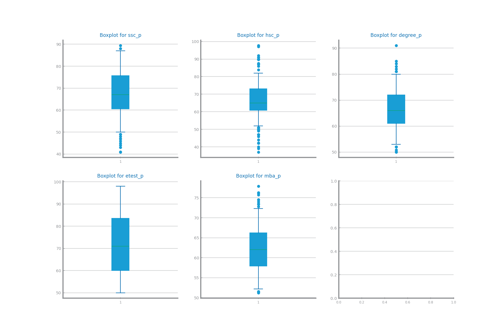491: Variable etest_p is balanced.
492: Those boxplots show that the data is not normalized.
493: It is clear that variable etest_p shows some outliers, but we can’t be sure of the same for variable ssc_p.
494: Outliers seem to be a problem in the dataset.
495: Variable hsc_p shows a high number of outlier values.
496: Variable ssc_p doesn’t have any outliers.
497: Variable ssc_p presents some outliers.
498: At least 75 of the variables present outliers.
499: The histograms presented show a large number of outliers for most of the numeric variables.
500: The existence of outliers is one of the problems to tackle in this dataset.
501: A scaling transformation is mandatory, in order to improve the KNN performance in this dataset.
502: Multiplying ratio and Boolean variables by 100, and variables with a range between 0 and 10 by 10, would have an impact similar to other scaling transformations.
503: Normalization of this dataset could not have impact on a KNN classifier.
504: Scaling this dataset would be mandatory to improve the results with distance-based methods.
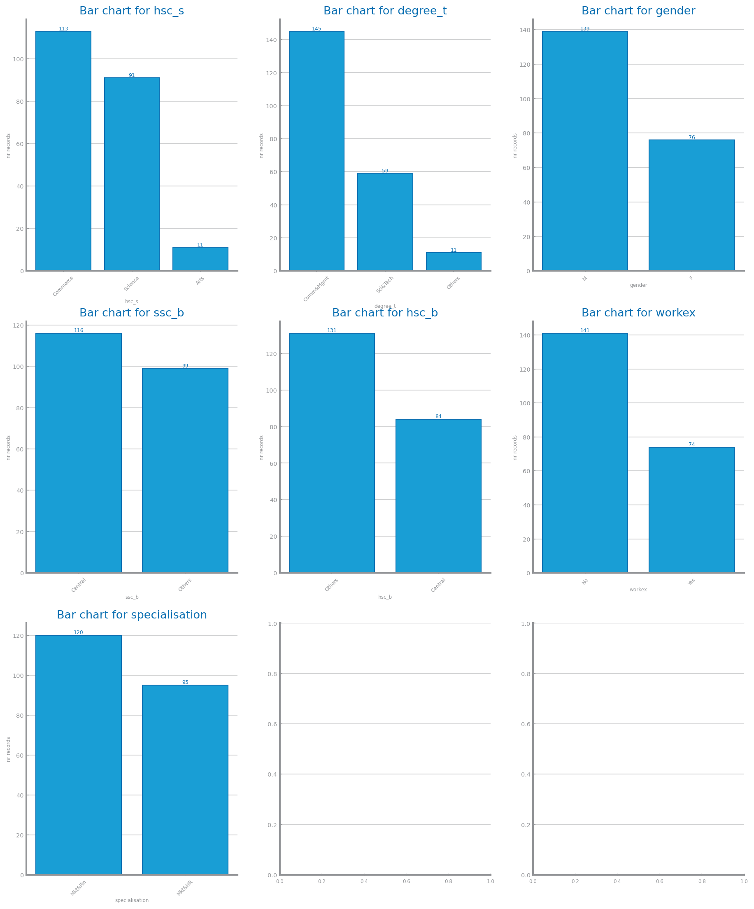505: All variables, but the class, should be dealt with as numeric.
506: The variable ssc_b can be seen as ordinal.
507: The variable workex can be seen as ordinal without losing information.
508: Considering the common semantics for workex and hsc_s variables, dummification if applied would increase the risk of facing the curse of dimensionality.
509: Considering the common semantics for workex variable, dummification would be the most adequate encoding.
510: The variable hsc_s can be coded as ordinal without losing information.
511: Feature generation based on variable hsc_s seems to be promising.
512: Feature generation based on the use of variable gender wouldn’t be useful, but the use of hsc_s seems to be promising.
513: Given the usual semantics of hsc_s variable, dummification would have been a better codification.
514: It is better to drop the variable specialisation than removing all records with missing values.
515: Not knowing the semantics of workex variable, dummification could have been a more adequate codification.

516: Balancing this dataset would be mandatory to improve the results.

517: Given the number of records and that some variables are binary, we might be facing the curse of dimensionality.
518: We face the curse of dimensionality when training a classifier with this dataset.
519: Balancing this dataset by SMOTE would most probably be preferable over undersampling.
520: All variables, but the class, should be dealt with as binary.
521: The variable mba_p can be seen as ordinal.
522: The variable hsc_p can be seen as ordinal without losing information.
523: Variable etest_p is balanced.
524: It is clear that variable ssc_p shows some outliers, but we can’t be sure of the same for variable etest_p.
525: Outliers seem to be a problem in the dataset.
526: Variable mba_p shows a high number of outlier values.
527: Variable etest_p doesn’t have any outliers.
528: Variable mba_p presents some outliers.
529: At least 85 of the variables present outliers.
530: The histograms presented show a large number of outliers for most of the numeric variables.
531: The existence of outliers is one of the problems to tackle in this dataset.
532: Considering the common semantics for ssc_p and hsc_p variables, dummification if applied would increase the risk of facing the curse of dimensionality.
533: Considering the common semantics for mba_p variable, dummification would be the most adequate encoding.
534: The variable degree_p can be coded as ordinal without losing information.
535: Feature generation based on variable etest_p seems to be promising.
536: Feature generation based on the use of variable mba_p wouldn’t be useful, but the use of ssc_p seems to be promising.
537: Given the usual semantics of degree_p variable, dummification would have been a better codification.
538: It is better to drop the variable hsc_p than removing all records with missing values.
539: Not knowing the semantics of mba_p variable, dummification could have been a more adequate codification.
540: It is clear that variable ALB is one of the four most relevant features.
541: The variable AG_Ratio seems to be one of the five most relevant features.
542: The variable TB discriminates between the target values, as shown in the decision tree.
543: It is possible to state that TP is the second most discriminative variable regarding the class.
544: Variable TP is one of the most relevant variables.
545: Variable Age seems to be relevant for the majority of mining tasks.
546: Variables ALB and Age seem to be useful for classification tasks.
547: A smaller tree would be delivered if we would apply post-pruning, accepting an accuracy reduction of 8%.
548: As reported in the tree, the number of False Positive is smaller than the number of False Negatives.
549: The precision for the presented tree is higher than 60%.
550: The number of False Positives is higher than the number of True Negatives for the presented tree.
551: The number of False Positives is higher than the number of False Negatives for the presented tree.
552: The recall for the presented tree is lower than 90%.
553: Considering that A=True<=>[Alkphos <= 211.5] and B=True<=>[Sgot <= 26.5], it is possible to state that KNN algorithm classifies (A,B) as 1 for any k ≤ 77.
554: Considering that A=True<=>[Alkphos <= 211.5] and B=True<=>[Sgot <= 26.5], it is possible to state that Naive Bayes algorithm classifies (not A, B), as 1.
555: Considering that A=True<=>[Alkphos <= 211.5] and B=True<=>[Sgot <= 26.5], the Decision Tree presented classifies (not A, not B) as 2.
556: We are able to identify the existence of overfitting for MLP models trained longer than 500 episodes.
557: We are able to identify the existence of overfitting for gradient boosting models with more than 1002 estimators.
558: Results for Random Forests identified as 3, may be explained by its estimators being in underfitting.
559: The random forests results shown can be explained by the lack of diversity resulting from the number of features considered.
560: We are able to identify the existence of overfitting for random forest models with more than 1002 estimators.
561: KNN is in overfitting for k larger than 17.
562: KNN with 5 neighbour is in overfitting.
563: KNN with less than 7 neighbours is in overfitting.
564: We are able to identify the existence of overfitting for KNN models with less than 4 neighbors.

565: According to the decision tree overfitting chart, the tree with 5 nodes of depth is in overfitting.
566: The chart reporting the recall for different trees shows that the model enters in overfitting for models with depth higher than 10.
567: The decision tree is in overfitting for depths above 6.
568: We are able to identify the existence of overfitting for decision tree models with more than 3 nodes of depth.
569: The difference between recall and accuracy becomes smaller with the depth due to the overfitting phenomenon.
570: The first 5 principal components are enough for explaining half the data variance.
571: Using the first 8 principal components would imply an error between 15 and 30%.

572: The intrinsic dimensionality of this dataset is 4.
573: One of the variables TP or Sgpt can be discarded without losing information.
574: The variable DB can be discarded without risking losing information.
575: Variables AG_Ratio and TP are redundant, but we can’t say the same for the pair Sgot and Alkphos.
576: Variables Sgot and TB are redundant.
577: From the correlation analysis alone, it is clear that there are relevant variables.
578: Variable TB seems to be relevant for the majority of mining tasks.
579: Variables Age and Sgpt seem to be useful for classification tasks.
580: Applying a non-supervised feature selection based on the redundancy, would not increase the performance of the generality of the training algorithms in this dataset.
581: Removing variable DB might improve the training of decision trees .
582: There is evidence in favour for sequential backward selection to select variable TB previously than variable AG_Ratio.
583: Variable TP is balanced.
584: Those boxplots show that the data is not normalized.
585: It is clear that variable TB shows some outliers, but we can’t be sure of the same for variable ALB.
586: Outliers seem to be a problem in the dataset.
587: Variable TB shows a high number of outlier values.
588: Variable AG_Ratio doesn’t have any outliers.
589: Variable Sgot presents some outliers.
590: At least 50 of the variables present outliers.
591: The histograms presented show a large number of outliers for most of the numeric variables.
592: The existence of outliers is one of the problems to tackle in this dataset.
593: A scaling transformation is mandatory, in order to improve the KNN performance in this dataset.
594: Multiplying ratio and Boolean variables by 100, and variables with a range between 0 and 10 by 10, would have an impact similar to other scaling transformations.
595: Normalization of this dataset could not have impact on a KNN classifier.
596: Scaling this dataset would be mandatory to improve the results with distance-based methods.
597: All variables, but the class, should be dealt with as binary.
598: The variable Gender can be seen as ordinal.
599: The variable Gender can be seen as ordinal without losing information.
600: Considering the common semantics for Gender and
601: Considering the common semantics for Gender variable, dummification would be the most adequate encoding.
602: The variable Gender can be coded as ordinal without losing information.
603: Feature generation based on variable Gender seems to be promising.
604: Feature generation based on the use of variable Gender wouldn’t be useful, but the use of
605: Given the usual semantics of Gender variable, dummification would have been a better codification.
606: It is better to drop the variable Gender than removing all records with missing values.
607: Not knowing the semantics of Gender variable, dummification could have been a more adequate codification.

608: Discarding variable AG_Ratio would be better than discarding all the records with missing values for that variable.
609: Dropping all records with missing values would be better than to drop the variables with missing values.
610: Dropping all rows with missing values can lead to a dataset with less than 30% of the original data.
611: There is no reason to believe that discarding records showing missing values is safer than discarding the corresponding variables in this case.
612: Feature generation based on variable AG_Ratio seems to be promising.
613: It is better to drop the variable AG_Ratio than removing all records with missing values.
614: Balancing this dataset would be mandatory to improve the results.
615: Given the number of records and that some variables are date, we might be facing the curse of dimensionality.
616: We face the curse of dimensionality when training a classifier with this dataset.
617: Balancing this dataset by SMOTE would most probably be preferable over undersampling.
618: All variables, but the class, should be dealt with as binary.
619: The variable Sgpt can be seen as ordinal.
620: The variable Alkphos can be seen as ordinal without losing information.
621: Variable Sgpt is balanced.
622: It is clear that variable ALB shows some outliers, but we can’t be sure of the same for variable DB.
623: Outliers seem to be a problem in the dataset.
624: Variable AG_Ratio shows some outlier values.
625: Variable AG_Ratio doesn’t have any outliers.
626: Variable TB presents some outliers.
627: At least 75 of the variables present outliers.
628: The boxplots presented show a large number of outliers for most of the numeric variables.
629: The existence of outliers is one of the problems to tackle in this dataset.
630: Considering the common semantics for AG_Ratio and Age variables, dummification if applied would increase the risk of facing the curse of dimensionality.
631: Considering the common semantics for Sgpt variable, dummification would be the most adequate encoding.
632: The variable TB can be coded as ordinal without losing information.
633: Feature generation based on variable Age seems to be promising.
634: Feature generation based on the use of variable Alkphos wouldn’t be useful, but the use of Age seems to be promising.
635: Given the usual semantics of Alkphos variable, dummification would have been a better codification.
636: It is better to drop the variable AG_Ratio than removing all records with missing values.
637: Not knowing the semantics of ALB variable, dummification could have been a more adequate codification.
638: It is clear that variable no_of_special_requests is one of the five most relevant features.
639: The variable no_of_weekend_nights seems to be one of the two most relevant features.
640: The variable no_of_weekend_nights discriminates between the target values, as shown in the decision tree.
641: It is possible to state that no_of_children is the first most discriminative variable regarding the class.
642: Variable no_of_children is one of the most relevant variables.
643: Variable avg_price_per_room seems to be relevant for the majority of mining tasks.
644: Variables no_of_weekend_nights and no_of_adults seem to be useful for classification tasks.
645: A smaller tree would be delivered if we would apply post-pruning, accepting an accuracy reduction of 10%.
646: As reported in the tree, the number of False Positive is bigger than the number of False Negatives.
647: The accuracy for the presented tree is lower than 75%.
648: The number of False Positives is higher than the number of True Positives for the presented tree.
649: The number of True Positives is lower than the number of True Negatives for the presented tree.
650: The specificity for the presented tree is lower than its accuracy.
651: Considering that A=True<=>[lead_time <= 151.5] and B=True<=>[no_of_special_requests <= 2.5], the Decision Tree presented classifies (not A, not B) as Canceled.
652: Considering that A=True<=>[lead_time <= 151.5] and B=True<=>[no_of_special_requests <= 2.5], the Decision Tree presented classifies (A, not B) as Canceled.
653: Considering that A=True<=>[lead_time <= 151.5] and B=True<=>[no_of_special_requests <= 2.5], it is possible to state that KNN algorithm classifies (A,B) as Canceled for any k ≤ 9756.
654: We are able to identify the existence of overfitting for MLP models trained longer than 700 episodes.

655: We are able to identify the existence of overfitting for gradient boosting models with more than 1502 estimators.
656: Results for Random Forests identified as 10, may be explained by its estimators being in underfitting.
657: The random forests results shown can be explained by the lack of diversity resulting from the number of features considered.
658: We are able to identify the existence of overfitting for random forest models with more than 1502 estimators.
659: KNN is in overfitting for k larger than 5.
660: KNN with 5 neighbour is in overfitting.
661: KNN with more than 15 neighbours is in overfitting.
662: We are able to identify the existence of overfitting for KNN models with less than 6 neighbors.
663: According to the decision tree overfitting chart, the tree with 9 nodes of depth is in overfitting.
664: The chart reporting the recall for different trees shows that the model enters in overfitting for models with depth higher than 4.
665: The decision tree is in overfitting for depths above 6.
666: We are able to identify the existence of overfitting for decision tree models with more than 3 nodes of depth.
667: The difference between recall and accuracy becomes smaller with the depth due to the overfitting phenomenon.

668: The first 4 principal components are enough for explaining half the data variance.
669: Using the first 2 principal components would imply an error between 5 and 30%.
670: The intrinsic dimensionality of this dataset is 7.
671: One of the variables no_of_children or arrival_date can be discarded without losing information.
672: The variable avg_price_per_room can be discarded without risking losing information.
673: Variables no_of_adults and no_of_special_requests are redundant, but we can’t say the same for the pair no_of_children and lead_time.
674: Variables no_of_week_nights and no_of_weekend_nights are redundant.
675: From the correlation analysis alone, it is clear that there are relevant variables.
676: Variable no_of_week_nights seems to be relevant for the majority of mining tasks.
677: Variables no_of_special_requests and no_of_week_nights seem to be useful for classification tasks.
678: Applying a non-supervised feature selection based on the redundancy, would not increase the performance of the generality of the training algorithms in this dataset.
679: Removing variable no_of_special_requests might improve the training of decision trees .
680: There is evidence in favour for sequential backward selection to select variable no_of_special_requests previously than variable no_of_children.
681: Variable no_of_adults is balanced.
682: Those boxplots show that the data is not normalized.
683: It is clear that variable no_of_weekend_nights shows some outliers, but we can’t be sure of the same for variable no_of_children.
684: Outliers seem to be a problem in the dataset.
685: Variable no_of_special_requests shows a high number of outlier values.
686: Variable no_of_week_nights doesn’t have any outliers.
687: Variable arrival_date presents some outliers.
688: At least 85 of the variables present outliers.
689: The boxplots presented show a large number of outliers for most of the numeric variables.
690: The existence of outliers is one of the problems to tackle in this dataset.
691: A scaling transformation is mandatory, in order to improve the KNN performance in this dataset.
692: Multiplying ratio and Boolean variables by 100, and variables with a range between 0 and 10 by 10, would have an impact similar to other scaling transformations.
693: Normalization of this dataset could not have impact on a KNN classifier.
694: Scaling this dataset would be mandatory to improve the results with distance-based methods.
695: All variables, but the class, should be dealt with as binary.
696: The variable required_car_parking_space can be seen as ordinal.
697: The variable repeated_guest can be seen as ordinal without losing information.
698: Considering the common semantics for repeated_guest and type_of_meal_plan variables, dummification if applied would increase the risk of facing the curse of dimensionality.
699: Considering the common semantics for room_type_reserved variable, dummification would be the most adequate encoding.
700: The variable type_of_meal_plan can be coded as ordinal without losing information.
701: Feature generation based on variable room_type_reserved seems to be promising.
702: Feature generation based on the use of variable arrival_year wouldn’t be useful, but the use of type_of_meal_plan seems to be promising.
703: Given the usual semantics of type_of_meal_plan variable, dummification would have been a better codification.
704: It is better to drop the variable repeated_guest than removing all records with missing values.
705: Not knowing the semantics of arrival_year variable, dummification could have been a more adequate codification.
706: Balancing this dataset would be mandatory to improve the results.

707: Given the number of records and that some variables are date, we might be facing the curse of dimensionality.
708: We face the curse of dimensionality when training a classifier with this dataset.
709: Balancing this dataset by SMOTE would most probably be preferable over undersampling.
710: All variables, but the class, should be dealt with as date.
711: The variable arrival_date can be seen as ordinal.
712: The variable lead_time can be seen as ordinal without losing information.
713: Variable arrival_date is balanced.
714: It is clear that variable no_of_week_nights shows some outliers, but we can’t be sure of the same for variable lead_time.
715: Outliers seem to be a problem in the dataset.
716: Variable no_of_adults shows some outlier values.
717: Variable no_of_weekend_nights doesn’t have any outliers.
718: Variable avg_price_per_room presents some outliers.
719: At least 75 of the variables present outliers.
720: The histograms presented show a large number of outliers for most of the numeric variables.
721: The existence of outliers is one of the problems to tackle in this dataset.
722: Considering the common semantics for avg_price_per_room and no_of_adults variables, dummification if applied would increase the risk of facing the curse of dimensionality.
723: Considering the common semantics for no_of_children variable, dummification would be the most adequate encoding.
724: The variable no_of_children can be coded as ordinal without losing information.
725: Feature generation based on variable no_of_adults seems to be promising.
726: Feature generation based on the use of variable no_of_adults wouldn’t be useful, but the use of no_of_children seems to be promising.
727: Given the usual semantics of no_of_children variable, dummification would have been a better codification.
728: It is better to drop the variable no_of_children than removing all records with missing values.
729: Not knowing the semantics of no_of_special_requests variable, dummification could have been a more adequate codification.
730: It is clear that variable self_esteem is one of the four most relevant features.
731: The variable self_esteem seems to be one of the three most relevant features.
732: The variable living_conditions discriminates between the target values, as shown in the decision tree.
733: It is possible to state that headache is the second most discriminative variable regarding the class.
734: Variable headache is one of the most relevant variables.
735: Variable bullying seems to be relevant for the majority of mining tasks.
736: Variables headache and depression seem to be useful for classification tasks.
737: A smaller tree would be delivered if we would apply post-pruning, accepting an accuracy reduction of 10%.
738: As reported in the tree, the number of False Positive is bigger than the number of False Negatives.
739: The precision for the presented tree is higher than 90%.
740: The number of True Negatives is lower than the number of True Positives for the presented tree.
741: The number of False Negatives is higher than the number of True Negatives for the presented tree.
742: The number of False Negatives reported in the same tree is 50.
743: Considering that A=True<=>[basic_needs <= 3.5] and B=True<=>[bullying <= 1.5], it is possible to state that KNN algorithm classifies (A, not B) as 2 for any k ≤ 271.
744: Considering that A=True<=>[basic_needs <= 3.5] and B=True<=>[bullying <= 1.5], it is possible to state that Naive Bayes algorithm classifies (A,B), as 1.
745: Considering that A=True<=>[basic_needs <= 3.5] and B=True<=>[bullying <= 1.5], it is possible to state that KNN algorithm classifies (not A, not B) as 2 for any k ≤ 271.
746: We are able to identify the existence of overfitting for MLP models trained longer than 500 episodes.
747: We are able to identify the existence of overfitting for gradient boosting models with more than 1002 estimators.
748: Results for Random Forests identified as 10, may be explained by its estimators being in overfitting.
749: The random forests results shown can be explained by the lack of diversity resulting from the number of features considered.
750: We are able to identify the existence of overfitting for random forest models with more than 1002 estimators.
751: KNN is in overfitting for k less than 17.
752: KNN with 5 neighbour is in overfitting.
753: KNN with less than 7 neighbours is in overfitting.
754: We are able to identify the existence of overfitting for KNN models with less than 2 neighbors.

755: According to the decision tree overfitting chart, the tree with 20 nodes of depth is in overfitting.
756: The chart reporting the recall for different trees shows that the model enters in overfitting for models with depth higher than 6.
757: The decision tree is in overfitting for depths above 4.
758: We are able to identify the existence of overfitting for decision tree models with more than 2 nodes of depth.

759: The first 9 principal components are enough for explaining half the data variance.
760: Using the first 8 principal components would imply an error between 15 and 30%.
761: The intrinsic dimensionality of this dataset is 6.
762: One of the variables depression or basic_needs can be discarded without losing information.
763: The variable breathing_problem can be discarded without risking losing information.
764: Variables bullying and study_load are redundant, but we can’t say the same for the pair breathing_problem and living_conditions.
765: Variables headache and living_conditions are redundant.
766: From the correlation analysis alone, it is clear that there are relevant variables.
767: Variable living_conditions seems to be relevant for the majority of mining tasks.
768: Variables sleep_quality and self_esteem seem to be useful for classification tasks.
769: Applying a non-supervised feature selection based on the redundancy, would not increase the performance of the generality of the training algorithms in this dataset.
770: Removing variable self_esteem might improve the training of decision trees .
771: There is evidence in favour for sequential backward selection to select variable study_load previously than variable depression.
772: Variable headache is balanced.
773: Those boxplots show that the data is not normalized.
774: It is clear that variable self_esteem shows some outliers, but we can’t be sure of the same for variable living_conditions.
775: Outliers seem to be a problem in the dataset.
776: Variable self_esteem shows a high number of outlier values.
777: Variable bullying doesn’t have any outliers.
778: Variable sleep_quality presents some outliers.
779: At least 85 of the variables present outliers.
780: The histograms presented show a large number of outliers for most of the numeric variables.
781: The existence of outliers is one of the problems to tackle in this dataset.
782: A scaling transformation is mandatory, in order to improve the Naive Bayes performance in this dataset.
783: Multiplying ratio and Boolean variables by 100, and variables with a range between 0 and 10 by 10, would have an impact similar to other scaling transformations.
784: Normalization of this dataset could not have impact on a KNN classifier.
785: Scaling this dataset would be mandatory to improve the results with distance-based methods.
786: All variables, but the class, should be dealt with as binary.
787: The variable mental_health_history can be seen as ordinal.
788: The variable mental_health_history can be seen as ordinal without losing information.
789: Considering the common semantics for mental_health_history and
790: Considering the common semantics for mental_health_history variable, dummification would be the most adequate encoding.
791: The variable mental_health_history can be coded as ordinal without losing information.
792: Feature generation based on variable mental_health_history seems to be promising.
793: Feature generation based on the use of variable mental_health_history wouldn’t be useful, but the use of
794: Given the usual semantics of mental_health_history variable, dummification would have been a better codification.
795: It is better to drop the variable mental_health_history than removing all records with missing values.
796: Not knowing the semantics of mental_health_history variable, dummification could have been a more adequate codification.
797: Balancing this dataset would be mandatory to improve the results.
798: Given the number of records and that some variables are symbolic, we might be facing the curse of dimensionality.
799: We face the curse of dimensionality when training a classifier with this dataset.
800: Balancing this dataset by SMOTE would most probably be preferable over undersampling.
801: All variables, but the class, should be dealt with as date.
802: The variable sleep_quality can be seen as ordinal.
803: The variable sleep_quality can be seen as ordinal without losing information.
804: Variable sleep_quality is balanced.
805: It is clear that variable living_conditions shows some outliers, but we can’t be sure of the same for variable breathing_problem.
806: Outliers seem to be a problem in the dataset.
807: Variable basic_needs shows a high number of outlier values.
808: Variable headache doesn’t have any outliers.
809: Variable breathing_problem presents some outliers.
810: At least 85 of the variables present outliers.
811: The histograms presented show a large number of outliers for most of the numeric variables.
812: The existence of outliers is one of the problems to tackle in this dataset.
813: Considering the common semantics for sleep_quality and anxiety_level variables, dummification if applied would increase the risk of facing the curse of dimensionality.
814: Considering the common semantics for study_load variable, dummification would be the most adequate encoding.
815: The variable anxiety_level can be coded as ordinal without losing information.
816: Feature generation based on variable living_conditions seems to be promising.
817: Feature generation based on the use of variable breathing_problem wouldn’t be useful, but the use of anxiety_level seems to be promising.
818: Given the usual semantics of self_esteem variable, dummification would have been a better codification.
819: It is better to drop the variable bullying than removing all records with missing values.
820: Not knowing the semantics of sleep_quality variable, dummification could have been a more adequate codification.
821: It is clear that variable residual sugar is one of the four most relevant features.
822: The variable pH seems to be one of the three most relevant features.
823: The variable residual sugar discriminates between the target values, as shown in the decision tree.
824: It is possible to state that alcohol is the second most discriminative variable regarding the class.
825: Variable total sulfur dioxide is one of the most relevant variables.
826: Variable sulphates seems to be relevant for the majority of mining tasks.
827: Variables pH and sulphates seem to be useful for classification tasks.
828: A smaller tree would be delivered if we would apply post-pruning, accepting an accuracy reduction of 10%.
829: As reported in the tree, the number of False Positive is bigger than the number of False Negatives.
830: The specificity for the presented tree is lower than 90%.
831: The number of False Positives reported in the same tree is 10.
832: The number of False Positives is higher than the number of True Positives for the presented tree.
833: The variable free sulfur dioxide seems to be one of the five most relevant features.
834: Considering that A=True<=>[density <= 1.0] and B=True<=>[chlorides <= 0.08], it is possible to state that KNN algorithm classifies (A, not B) as 8 for any k ≤ 154.
835: Considering that A=True<=>[density <= 1.0] and B=True<=>[chlorides <= 0.08], it is possible to state that Naive Bayes algorithm classifies (not A, B), as 5.
836: Considering that A=True<=>[density <= 1.0] and B=True<=>[chlorides <= 0.08], the Decision Tree presented classifies (not A, not B) as 3.
837: We are able to identify the existence of overfitting for MLP models trained longer than 500 episodes.
838: We are able to identify the existence of overfitting for gradient boosting models with more than 502 estimators.
839: Results for Random Forests identified as 2, may be explained by its estimators being in underfitting.
840: The random forests results shown can be explained by the lack of diversity resulting from the number of features considered.
841: We are able to identify the existence of overfitting for random forest models with more than 1002 estimators.
842: KNN is in overfitting for k less than 13.
843: KNN with 5 neighbour is in overfitting.
844: KNN with less than 17 neighbours is in overfitting.
845: We are able to identify the existence of overfitting for KNN models with less than 4 neighbors.
846: According to the decision tree overfitting chart, the tree with 20 nodes of depth is in overfitting.
847: The chart reporting the recall for different trees shows that the model enters in overfitting for models with depth higher than 3.
848: The decision tree is in overfitting for depths above 3.
849: We are able to identify the existence of overfitting for decision tree models with more than 4 nodes of depth.
850: The first 6 principal components are enough for explaining half the data variance.
851: Using the first 2 principal components would imply an error between 15 and 25%.
852: The intrinsic dimensionality of this dataset is 5.
853: One of the variables sulphates or free sulfur dioxide can be discarded without losing information.
854: The variable density can be discarded without risking losing information.
855: Variables fixed acidity and citric acid are redundant, but we can’t say the same for the pair free sulfur dioxide and density.
856: Variables fixed acidity and free sulfur dioxide are redundant.
857: From the correlation analysis alone, it is clear that there are relevant variables.
858: Variable total sulfur dioxide seems to be relevant for the majority of mining tasks.
859: Variables chlorides and volatile acidity seem to be useful for classification tasks.
860: Applying a non-supervised feature selection based on the redundancy, would not increase the performance of the generality of the training algorithms in this dataset.
861: Removing variable fixed acidity might improve the training of decision trees .
862: There is evidence in favour for sequential backward selection to select variable residual sugar previously than variable free sulfur dioxide.
863: Variable free sulfur dioxide is balanced.
864: Those boxplots show that the data is not normalized.
865: It is clear that variable free sulfur dioxide shows some outliers, but we can’t be sure of the same for variable citric acid.
866: Outliers seem to be a problem in the dataset.
867: Variable total sulfur dioxide shows some outlier values.
868: Variable pH doesn’t have any outliers.
869: Variable alcohol presents some outliers.
870: At least 50 of the variables present outliers.
871: The boxplots presented show a large number of outliers for most of the numeric variables.
872: The existence of outliers is one of the problems to tackle in this dataset.
873: A scaling transformation is mandatory, in order to improve the Naive Bayes performance in this dataset.
874: Multiplying ratio and Boolean variables by 100, and variables with a range between 0 and 10 by 10, would have an impact similar to other scaling transformations.
875: Normalization of this dataset could not have impact on a KNN classifier.
876: Scaling this dataset would be mandatory to improve the results with distance-based methods.
877: Balancing this dataset would be mandatory to improve the results.
878: Given the number of records and that some variables are numeric, we might be facing the curse of dimensionality.
879: We face the curse of dimensionality when training a classifier with this dataset.
880: Balancing this dataset by SMOTE would most probably be preferable over undersampling.
881: All variables, but the class, should be dealt with as numeric.
882: The variable chlorides can be seen as ordinal.
883: The variable citric acid can be seen as ordinal without losing information.
884: Variable free sulfur dioxide is balanced.
885: It is clear that variable residual sugar shows some outliers, but we can’t be sure of the same for variable alcohol.
886: Outliers seem to be a problem in the dataset.
887: Variable residual sugar shows some outlier values.
888: Variable chlorides doesn’t have any outliers.
889: Variable density presents some outliers.
890: At least 50 of the variables present outliers.
891: The boxplots presented show a large number of outliers for most of the numeric variables.
892: The existence of outliers is one of the problems to tackle in this dataset.
893: Considering the common semantics for total sulfur dioxide and fixed acidity variables, dummification if applied would increase the risk of facing the curse of dimensionality.
894: Considering the common semantics for sulphates variable, dummification would be the most adequate encoding.
895: The variable pH can be coded as ordinal without losing information.
896: Feature generation based on variable density seems to be promising.
897: Feature generation based on the use of variable alcohol wouldn’t be useful, but the use of fixed acidity seems to be promising.
898: Given the usual semantics of sulphates variable, dummification would have been a better codification.
899: It is better to drop the variable volatile acidity than removing all records with missing values.
900: Not knowing the semantics of density variable, dummification could have been a more adequate codification.
901: It is clear that variable ApplicantIncome is one of the four most relevant features.
902: The variable Loan_Amount_Term seems to be one of the five most relevant features.
903: The variable ApplicantIncome discriminates between the target values, as shown in the decision tree.
904: It is possible to state that Loan_Amount_Term is the first most discriminative variable regarding the class.
905: Variable LoanAmount is one of the most relevant variables.
906: Variable Loan_Amount_Term seems to be relevant for the majority of mining tasks.
907: Variables LoanAmount and Loan_Amount_Term seem to be useful for classification tasks.
908: A smaller tree would be delivered if we would apply post-pruning, accepting an accuracy reduction of 8%.
909: As reported in the tree, the number of False Positive is smaller than the number of False Negatives.
910: The accuracy for the presented tree is lower than 60%.
911: The number of False Positives reported in the same tree is 30.
912: The number of False Positives is lower than the number of False Negatives for the presented tree.
913: The specificity for the presented tree is lower than 90%.
914: Considering that A=True<=>[Loan_Amount_Term <= 420.0] and B=True<=>[ApplicantIncome <= 1519.0], it is possible to state that Naive Bayes algorithm classifies (not A, B), as Y.
915: Considering that A=True<=>[Loan_Amount_Term <= 420.0] and B=True<=>[ApplicantIncome <= 1519.0], the Decision Tree presented classifies (A,B) as N.
916: Considering that A=True<=>[Loan_Amount_Term <= 420.0] and B=True<=>[ApplicantIncome <= 1519.0], it is possible to state that KNN algorithm classifies (not A, B) as N for any k ≤ 3.
917: We are able to identify the existence of overfitting for MLP models trained longer than 700 episodes.
918: We are able to identify the existence of overfitting for gradient boosting models with more than 1002 estimators.
919: Results for Random Forests identified as 3, may be explained by its estimators being in underfitting.
920: The random forests results shown can be explained by the lack of diversity resulting from the number of features considered.
921: We are able to identify the existence of overfitting for random forest models with more than 1502 estimators.

922: KNN is in overfitting for k larger than 17.
923: KNN with 5 neighbour is in overfitting.
924: KNN with less than 17 neighbours is in overfitting.
925: We are able to identify the existence of overfitting for KNN models with less than 4 neighbors.
926: According to the decision tree overfitting chart, the tree with 12 nodes of depth is in overfitting.
927: The chart reporting the recall for different trees shows that the model enters in overfitting for models with depth higher than 5.
928: The decision tree is in overfitting for depths above 8.
929: We are able to identify the existence of overfitting for decision tree models with more than 3 nodes of depth.
930: The difference between recall and accuracy becomes smaller with the depth due to the overfitting phenomenon.
931: The first 2 principal components are enough for explaining half the data variance.
932: Using the first 3 principal components would imply an error between 10 and 25%.
933: The intrinsic dimensionality of this dataset is 3.
934: One of the variables ApplicantIncome or LoanAmount can be discarded without losing information.
935: The variable ApplicantIncome can be discarded without risking losing information.
936: Variables Loan_Amount_Term and ApplicantIncome are redundant.
937: Variables LoanAmount and CoapplicantIncome are redundant.
938: From the correlation analysis alone, it is clear that there are relevant variables.
939: Variable LoanAmount seems to be relevant for the majority of mining tasks.
940: Variables ApplicantIncome and Loan_Amount_Term seem to be useful for classification tasks.
941: Applying a non-supervised feature selection based on the redundancy, would not increase the performance of the generality of the training algorithms in this dataset.
942: Removing variable CoapplicantIncome might improve the training of decision trees .
943: There is evidence in favour for sequential backward selection to select variable ApplicantIncome previously than variable CoapplicantIncome.

944: Variable CoapplicantIncome is balanced.
945: Those boxplots show that the data is not normalized.
946: It is clear that variable LoanAmount shows some outliers, but we can’t be sure of the same for variable Loan_Amount_Term.
947: Outliers seem to be a problem in the dataset.
948: Variable LoanAmount shows a high number of outlier values.
949: Variable LoanAmount doesn’t have any outliers.
950: Variable ApplicantIncome presents some outliers.
951: At least 50 of the variables present outliers.
952: The histograms presented show a large number of outliers for most of the numeric variables.
953: The existence of outliers is one of the problems to tackle in this dataset.
954: A scaling transformation is mandatory, in order to improve the KNN performance in this dataset.
955: Multiplying ratio and Boolean variables by 100, and variables with a range between 0 and 10 by 10, would have an impact similar to other scaling transformations.
956: Normalization of this dataset could not have impact on a KNN classifier.
957: Scaling this dataset would be mandatory to improve the results with distance-based methods.

958: All variables, but the class, should be dealt with as numeric.
959: The variable Gender can be seen as ordinal.
960: The variable Gender can be seen as ordinal without losing information.
961: Considering the common semantics for Married and Dependents variables, dummification if applied would increase the risk of facing the curse of dimensionality.
962: Considering the common semantics for Education variable, dummification would be the most adequate encoding.
963: The variable Gender can be coded as ordinal without losing information.
964: Feature generation based on variable Education seems to be promising.
965: Feature generation based on the use of variable Credit_History wouldn’t be useful, but the use of Dependents seems to be promising.
966: Given the usual semantics of Education variable, dummification would have been a better codification.
967: It is better to drop the variable Married than removing all records with missing values.
968: Not knowing the semantics of Property_Area variable, dummification could have been a more adequate codification.
969: Discarding variable Dependents would be better than discarding all the records with missing values for that variable.
970: Dropping all records with missing values would be better than to drop the variables with missing values.
971: Dropping all rows with missing values can lead to a dataset with less than 25% of the original data.
972: There is no reason to believe that discarding records showing missing values is safer than discarding the corresponding variables in this case.
973: Feature generation based on variable Credit_History seems to be promising.
974: It is better to drop the variable Gender than removing all records with missing values.
975: Balancing this dataset would be mandatory to improve the results.

976: Given the number of records and that some variables are numeric, we might be facing the curse of dimensionality.
977: We face the curse of dimensionality when training a classifier with this dataset.
978: Balancing this dataset by SMOTE would most probably be preferable over undersampling.
979: All variables, but the class, should be dealt with as numeric.
980: The variable CoapplicantIncome can be seen as ordinal.
981: The variable Loan_Amount_Term can be seen as ordinal without losing information.
982: Variable CoapplicantIncome is balanced.
983: It is clear that variable ApplicantIncome shows some outliers, but we can’t be sure of the same for variable Loan_Amount_Term.
984: Outliers seem to be a problem in the dataset.
985: Variable Loan_Amount_Term shows some outlier values.
986: Variable ApplicantIncome doesn’t have any outliers.
987: Variable Loan_Amount_Term presents some outliers.
988: At least 60 of the variables present outliers.
989: The boxplots presented show a large number of outliers for most of the numeric variables.
990: The existence of outliers is one of the problems to tackle in this dataset.
991: Considering the common semantics for Loan_Amount_Term and ApplicantIncome variables, dummification if applied would increase the risk of facing the curse of dimensionality.
992: Considering the common semantics for ApplicantIncome variable, dummification would be the most adequate encoding.
993: The variable CoapplicantIncome can be coded as ordinal without losing information.
994: Feature generation based on variable CoapplicantIncome seems to be promising.
995: Feature generation based on the use of variable ApplicantIncome wouldn’t be useful, but the use of CoapplicantIncome seems to be promising.
996: Given the usual semantics of Loan_Amount_Term variable, dummification would have been a better codification.
997: It is better to drop the variable CoapplicantIncome than removing all records with missing values.
998: Not knowing the semantics of Loan_Amount_Term variable, dummification could have been a more adequate codification.
999: It is clear that variable ShapeFactor1 is one of the five most relevant features.
1000: The variable Extent seems to be one of the three most relevant features.
1001: The variable EquivDiameter discriminates between the target values, as shown in the decision tree.
1002: It is possible to state that ShapeFactor1 is the second most discriminative variable regarding the class.
1003: Variable AspectRation is one of the most relevant variables.
1004: Variable Perimeter seems to be relevant for the majority of mining tasks.
1005: Variables Solidity and EquivDiameter seem to be useful for classification tasks.
1006: A smaller tree would be delivered if we would apply post-pruning, accepting an accuracy reduction of 8%.
1007: As reported in the tree, the number of False Positive is bigger than the number of False Negatives.
1008: The accuracy for the presented tree is lower than 60%.
1009: The number of True Negatives is lower than the number of False Negatives for the presented tree.
1010: The number of False Positives is lower than the number of True Positives for the presented tree.
1011: The precision for the presented tree is lower than 90%.
1012: Considering that A=True<=>[Area <= 39172.5] and B=True<=>[AspectRation <= 1.86], it is possible to state that KNN algorithm classifies (not A, not B) as SEKER for any k ≤ 2501.
1013: Considering that A=True<=>[Area <= 39172.5] and B=True<=>[AspectRation <= 1.86], it is possible to state that KNN algorithm classifies (not A, not B) as SEKER for any k ≤ 4982.
1014: Considering that A=True<=>[Area <= 39172.5] and B=True<=>[AspectRation <= 1.86], the Decision Tree presented classifies (A,B) as HOROZ.
1015: We are able to identify the existence of overfitting for MLP models trained longer than 300 episodes.
1016: We are able to identify the existence of overfitting for gradient boosting models with more than 1002 estimators.
1017: Results for Random Forests identified as 3, may be explained by its estimators being in underfitting.
1018: The random forests results shown can be explained by the lack of diversity resulting from the number of features considered.
1019: We are able to identify the existence of overfitting for random forest models with more than 1502 estimators.
1020: KNN is in overfitting for k larger than 5.
1021: KNN with 7 neighbour is in overfitting.
1022: KNN with more than 15 neighbours is in overfitting.
1023: We are able to identify the existence of overfitting for KNN models with less than 6 neighbors.
1024: According to the decision tree overfitting chart, the tree with 16 nodes of depth is in overfitting.
1025: The chart reporting the recall for different trees shows that the model enters in overfitting for models with depth higher than 7.
1026: The decision tree is in overfitting for depths above 10.
1027: We are able to identify the existence of overfitting for decision tree models with more than 3 nodes of depth.
1028: The first 2 principal components are enough for explaining half the data variance.
1029: Using the first 4 principal components would imply an error between 5 and 25%.
1030: The intrinsic dimensionality of this dataset is 4.
1031: One of the variables Extent or Area can be discarded without losing information.
1032: The variable Solidity can be discarded without risking losing information.
1033: Variables roundness and Perimeter are redundant, but we can’t say the same for the pair MinorAxisLength and Eccentricity.
1034: Variables MinorAxisLength and Eccentricity are redundant.
1035: From the correlation analysis alone, it is clear that there are relevant variables.
1036: Variable Extent seems to be relevant for the majority of mining tasks.
1037: Variables ShapeFactor1 and Area seem to be useful for classification tasks.
1038: Applying a non-supervised feature selection based on the redundancy, would not increase the performance of the generality of the training algorithms in this dataset.
1039: Removing variable EquivDiameter might improve the training of decision trees .
1040: There is evidence in favour for sequential backward selection to select variable Eccentricity previously than variable ShapeFactor1.
1041: Variable ShapeFactor1 is balanced.
1042: Those boxplots show that the data is not normalized.
1043: It is clear that variable Area shows some outliers, but we can’t be sure of the same for variable Perimeter.
1044: Outliers seem to be a problem in the dataset.
1045: Variable AspectRation shows a high number of outlier values.
1046: Variable Extent doesn’t have any outliers.
1047: Variable Solidity presents some outliers.
1048: At least 50 of the variables present outliers.
1049: The boxplots presented show a large number of outliers for most of the numeric variables.
1050: The existence of outliers is one of the problems to tackle in this dataset.
1051: A scaling transformation is mandatory, in order to improve the KNN performance in this dataset.
1052: Multiplying ratio and Boolean variables by 100, and variables with a range between 0 and 10 by 10, would have an impact similar to other scaling transformations.
1053: Normalization of this dataset could not have impact on a KNN classifier.
1054: Scaling this dataset would be mandatory to improve the results with distance-based methods.
1055: Balancing this dataset would be mandatory to improve the results.
1056: Given the number of records and that some variables are symbolic, we might be facing the curse of dimensionality.
1057: We face the curse of dimensionality when training a classifier with this dataset.
1058: Balancing this dataset by SMOTE would most probably be preferable over undersampling.
1059: All variables, but the class, should be dealt with as date.
1060: The variable Solidity can be seen as ordinal.
1061: The variable Area can be seen as ordinal without losing information.
1062: Variable Solidity is balanced.
1063: It is clear that variable MinorAxisLength shows some outliers, but we can’t be sure of the same for variable Solidity.
1064: Outliers seem to be a problem in the dataset.
1065: Variable MinorAxisLength shows some outlier values.
1066: Variable MinorAxisLength doesn’t have any outliers.
1067: Variable Perimeter presents some outliers.
1068: At least 85 of the variables present outliers.
1069: The histograms presented show a large number of outliers for most of the numeric variables.
1070: The existence of outliers is one of the problems to tackle in this dataset.
1071: Considering the common semantics for MinorAxisLength and Area variables, dummification if applied would increase the risk of facing the curse of dimensionality.
1072: Considering the common semantics for Area variable, dummification would be the most adequate encoding.
1073: The variable ShapeFactor1 can be coded as ordinal without losing information.
1074: Feature generation based on variable AspectRation seems to be promising.
1075: Feature generation based on the use of variable Eccentricity wouldn’t be useful, but the use of Area seems to be promising.
1076: Given the usual semantics of Solidity variable, dummification would have been a better codification.
1077: It is better to drop the variable Area than removing all records with missing values.
1078: Not knowing the semantics of Area variable, dummification could have been a more adequate codification.
1079: It is clear that variable age is one of the five most relevant features.
1080: The variable installment_commitment seems to be one of the five most relevant features.
1081: The variable credit_amount discriminates between the target values, as shown in the decision tree.
1082: It is possible to state that age is the second most discriminative variable regarding the class.
1083: Variable duration is one of the most relevant variables.
1084: Variable age seems to be relevant for the majority of mining tasks.
1085: Variables credit_amount and age seem to be useful for classification tasks.
1086: A smaller tree would be delivered if we would apply post-pruning, accepting an accuracy reduction of 6%.
1087: As reported in the tree, the number of False Positive is bigger than the number of False Negatives.
1088: The accuracy for the presented tree is higher than 60%.
1089: The number of True Negatives reported in the same tree is 50.
1090: The number of False Negatives is lower than the number of True Negatives for the presented tree.
1091: The recall for the presented tree is higher than its accuracy.
1092: Considering that A=True<=>[existing_credits <= 1.5] and B=True<=>[residence_since <= 3.5], it is possible to state that KNN algorithm classifies (not A, not B) as good for any k ≤ 264.
1093: Considering that A=True<=>[existing_credits <= 1.5] and B=True<=>[residence_since <= 3.5], it is possible to state that KNN algorithm classifies (not A, not B) as good for any k ≤ 183.
1094: Considering that A=True<=>[existing_credits <= 1.5] and B=True<=>[residence_since <= 3.5], it is possible to state that KNN algorithm classifies (not A, not B) as bad for any k ≤ 146.
1095: We are able to identify the existence of overfitting for MLP models trained longer than 500 episodes.
1096: We are able to identify the existence of overfitting for gradient boosting models with more than 502 estimators.
1097: Results for Random Forests identified as 3, may be explained by its estimators being in overfitting.
1098: The random forests results shown can be explained by the lack of diversity resulting from the number of features considered.
1099: We are able to identify the existence of overfitting for random forest models with more than 1502 estimators.
1100: KNN is in overfitting for k less than 13.
1101: KNN with 11 neighbour is in overfitting.
1102: KNN with more than 17 neighbours is in overfitting.
1103: We are able to identify the existence of overfitting for KNN models with less than 4 neighbors.

1104: According to the decision tree overfitting chart, the tree with 20 nodes of depth is in overfitting.
1105: The chart reporting the recall for different trees shows that the model enters in overfitting for models with depth higher than 7.
1106: The decision tree is in overfitting for depths above 8.
1107: We are able to identify the existence of overfitting for decision tree models with more than 5 nodes of depth.
1108: The difference between recall and accuracy becomes smaller with the depth due to the overfitting phenomenon.
1109: The first 3 principal components are enough for explaining half the data variance.
1110: Using the first 3 principal components would imply an error between 5 and 25%.

1111: The intrinsic dimensionality of this dataset is 3.
1112: One of the variables age or existing_credits can be discarded without losing information.
1113: The variable existing_credits can be discarded without risking losing information.
1114: Variables residence_since and installment_commitment are redundant, but we can’t say the same for the pair credit_amount and age.
1115: Variables existing_credits and residence_since are redundant.
1116: From the correlation analysis alone, it is clear that there are relevant variables.
1117: Variable installment_commitment seems to be relevant for the majority of mining tasks.
1118: Variables installment_commitment and residence_since seem to be useful for classification tasks.
1119: Applying a non-supervised feature selection based on the redundancy, would not increase the performance of the generality of the training algorithms in this dataset.
1120: Removing variable existing_credits might improve the training of decision trees .
1121: There is evidence in favour for sequential backward selection to select variable installment_commitment previously than variable duration.
1122: Variable existing_credits is balanced.
1123: Those boxplots show that the data is not normalized.
1124: It is clear that variable duration shows some outliers, but we can’t be sure of the same for variable credit_amount.
1125: Outliers seem to be a problem in the dataset.
1126: Variable installment_commitment shows some outlier values.
1127: Variable residence_since doesn’t have any outliers.
1128: Variable residence_since presents some outliers.
1129: At least 75 of the variables present outliers.
1130: The histograms presented show a large number of outliers for most of the numeric variables.
1131: The existence of outliers is one of the problems to tackle in this dataset.
1132: A scaling transformation is mandatory, in order to improve the KNN performance in this dataset.
1133: Multiplying ratio and Boolean variables by 100, and variables with a range between 0 and 10 by 10, would have an impact similar to other scaling transformations.
1134: Normalization of this dataset could not have impact on a KNN classifier.
1135: Scaling this dataset would be mandatory to improve the results with distance-based methods.
1136: All variables, but the class, should be dealt with as numeric.
1137: The variable other_payment_plans can be seen as ordinal.
1138: The variable num_dependents can be seen as ordinal without losing information.
1139: Considering the common semantics for housing and checking_status variables, dummification if applied would increase the risk of facing the curse of dimensionality.
1140: Considering the common semantics for num_dependents variable, dummification would be the most adequate encoding.
1141: The variable foreign_worker can be coded as ordinal without losing information.
1142: Feature generation based on variable foreign_worker seems to be promising.
1143: Feature generation based on the use of variable employment wouldn’t be useful, but the use of checking_status seems to be promising.
1144: Given the usual semantics of foreign_worker variable, dummification would have been a better codification.
1145: It is better to drop the variable employment than removing all records with missing values.
1146: Not knowing the semantics of checking_status variable, dummification could have been a more adequate codification.
1147: Balancing this dataset would be mandatory to improve the results.

1148: Given the number of records and that some variables are numeric, we might be facing the curse of dimensionality.
1149: We face the curse of dimensionality when training a classifier with this dataset.
1150: Balancing this dataset by SMOTE would most probably be preferable over undersampling.

1151: All variables, but the class, should be dealt with as symbolic.
1152: The variable duration can be seen as ordinal.
1153: The variable duration can be seen as ordinal without losing information.
1154: Variable residence_since is balanced.
1155: It is clear that variable installment_commitment shows some outliers, but we can’t be sure of the same for variable residence_since.
1156: Outliers seem to be a problem in the dataset.
1157: Variable duration shows some outlier values.
1158: Variable age doesn’t have any outliers.
1159: Variable residence_since presents some outliers.
1160: At least 50 of the variables present outliers.
1161: The boxplots presented show a large number of outliers for most of the numeric variables.
1162: The existence of outliers is one of the problems to tackle in this dataset.
1163: Considering the common semantics for installment_commitment and duration variables, dummification if applied would increase the risk of facing the curse of dimensionality.
1164: Considering the common semantics for credit_amount variable, dummification would be the most adequate encoding.
1165: The variable age can be coded as ordinal without losing information.
1166: Feature generation based on variable credit_amount seems to be promising.
1167: Feature generation based on the use of variable duration wouldn’t be useful, but the use of credit_amount seems to be promising.
1168: Given the usual semantics of credit_amount variable, dummification would have been a better codification.
1169: It is better to drop the variable installment_commitment than removing all records with missing values.
1170: Not knowing the semantics of existing_credits variable, dummification could have been a more adequate codification.
1171: It is clear that variable Cloud3pm is one of the three most relevant features.
1172: The variable Temp3pm seems to be one of the two most relevant features.
1173: The variable WindSpeed9am discriminates between the target values, as shown in the decision tree.
1174: It is possible to state that Cloud9am is the second most discriminative variable regarding the class.
1175: Variable Pressure3pm is one of the most relevant variables.
1176: Variable Cloud3pm seems to be relevant for the majority of mining tasks.
1177: Variables Cloud9am and WindSpeed9am seem to be useful for classification tasks.
1178: A smaller tree would be delivered if we would apply post-pruning, accepting an accuracy reduction of 6%.
1179: As reported in the tree, the number of False Positive is smaller than the number of False Negatives.
1180: The specificity for the presented tree is higher than 75%.
1181: The number of False Negatives is higher than the number of False Positives for the presented tree.
1182: The number of False Positives is higher than the number of False Negatives for the presented tree.
1183: The precision for the presented tree is lower than its recall.
1184: Considering that A=True<=>[Rainfall <= 0.1] and B=True<=>[Pressure3pm <= 1009.65], it is possible to state that KNN algorithm classifies (A, not B) as No for any k ≤ 1686.
1185: Considering that A=True<=>[Rainfall <= 0.1] and B=True<=>[Pressure3pm <= 1009.65], it is possible to state that KNN algorithm classifies (A, not B) as Yes for any k ≤ 1154.
1186: Considering that A=True<=>[Rainfall <= 0.1] and B=True<=>[Pressure3pm <= 1009.65], the Decision Tree presented classifies (not A, B) as Yes.
1187: We are able to identify the existence of overfitting for MLP models trained longer than 300 episodes.
1188: We are able to identify the existence of overfitting for gradient boosting models with more than 502 estimators.
1189: Results for Random Forests identified as 10, may be explained by its estimators being in underfitting.
1190: The random forests results shown can be explained by the lack of diversity resulting from the number of features considered.
1191: We are able to identify the existence of overfitting for random forest models with more than 1002 estimators.
1192: KNN is in overfitting for k larger than 13.
1193: KNN with 7 neighbour is in overfitting.
1194: KNN with less than 7 neighbours is in overfitting.
1195: We are able to identify the existence of overfitting for KNN models with less than 4 neighbors.
1196: According to the decision tree overfitting chart, the tree with 9 nodes of depth is in overfitting.
1197: The chart reporting the recall for different trees shows that the model enters in overfitting for models with depth higher than 5.
1198: The decision tree is in overfitting for depths above 3.
1199: We are able to identify the existence of overfitting for decision tree models with more than 4 nodes of depth.
1200: The difference between recall and accuracy becomes smaller with the depth due to the overfitting phenomenon.
1201: The first 3 principal components are enough for explaining half the data variance.
1202: Using the first 5 principal components would imply an error between 15 and 25%.
1203: The intrinsic dimensionality of this dataset is 6.
1204: One of the variables Cloud3pm or Pressure9am can be discarded without losing information.
1205: The variable Pressure3pm can be discarded without risking losing information.
1206: Variables Cloud9am and Temp3pm are redundant, but we can’t say the same for the pair Rainfall and Pressure3pm.
1207: Variables Rainfall and Cloud3pm are redundant.
1208: From the correlation analysis alone, it is clear that there are relevant variables.
1209: Variable WindSpeed9am seems to be relevant for the majority of mining tasks.
1210: Variables Cloud3pm and Rainfall seem to be useful for classification tasks.
1211: Applying a non-supervised feature selection based on the redundancy, would not increase the performance of the generality of the training algorithms in this dataset.
1212: Removing variable Rainfall might improve the training of decision trees .
1213: There is evidence in favour for sequential backward selection to select variable Temp3pm previously than variable Rainfall.
1214: Variable Pressure9am is balanced.
1215: Those boxplots show that the data is not normalized.
1216: It is clear that variable Cloud9am shows some outliers, but we can’t be sure of the same for variable Cloud3pm.
1217: Outliers seem to be a problem in the dataset.
1218: Variable Pressure3pm shows a high number of outlier values.
1219: Variable Temp3pm doesn’t have any outliers.
1220: Variable Pressure3pm presents some outliers.
1221: At least 85 of the variables present outliers.
1222: The boxplots presented show a large number of outliers for most of the numeric variables.
1223: The existence of outliers is one of the problems to tackle in this dataset.
1224: A scaling transformation is mandatory, in order to improve the Naive Bayes performance in this dataset.
1225: Multiplying ratio and Boolean variables by 100, and variables with a range between 0 and 10 by 10, would have an impact similar to other scaling transformations.
1226: Normalization of this dataset could not have impact on a KNN classifier.
1227: Scaling this dataset would be mandatory to improve the results with distance-based methods.

1228: All variables, but the class, should be dealt with as binary.
1229: The variable RainToday can be seen as ordinal.
1230: The variable WindDir3pm can be seen as ordinal without losing information.
1231: Considering the common semantics for WindDir3pm and Location variables, dummification if applied would increase the risk of facing the curse of dimensionality.
1232: Considering the common semantics for WindDir9am variable, dummification would be the most adequate encoding.
1233: The variable RainToday can be coded as ordinal without losing information.
1234: Feature generation based on variable Location seems to be promising.
1235: Feature generation based on the use of variable WindGustDir wouldn’t be useful, but the use of Location seems to be promising.
1236: Given the usual semantics of WindDir9am variable, dummification would have been a better codification.
1237: It is better to drop the variable WindDir9am than removing all records with missing values.
1238: Not knowing the semantics of WindDir9am variable, dummification could have been a more adequate codification.
1239: Discarding variable RainToday would be better than discarding all the records with missing values for that variable.
1240: Dropping all records with missing values would be better than to drop the variables with missing values.
1241: Dropping all rows with missing values can lead to a dataset with less than 40% of the original data.
1242: There is no reason to believe that discarding records showing missing values is safer than discarding the corresponding variables in this case.
1243: Feature generation based on variable RainToday seems to be promising.
1244: It is better to drop the variable Pressure9am than removing all records with missing values.
1245: Balancing this dataset would be mandatory to improve the results.
1246: Given the number of records and that some variables are numeric, we might be facing the curse of dimensionality.
1247: We face the curse of dimensionality when training a classifier with this dataset.
1248: Balancing this dataset by SMOTE would most probably be preferable over undersampling.
1249: All variables, but the class, should be dealt with as binary.
1250: The variable Pressure3pm can be seen as ordinal.
1251: The variable Pressure3pm can be seen as ordinal without losing information.
1252: Variable WindSpeed9am is balanced.
1253: It is clear that variable Rainfall shows some outliers, but we can’t be sure of the same for variable Pressure3pm.
1254: Outliers seem to be a problem in the dataset.
1255: Variable Pressure9am shows a high number of outlier values.
1256: Variable Rainfall doesn’t have any outliers.
1257: Variable Cloud9am presents some outliers.
1258: At least 85 of the variables present outliers.
1259: The histograms presented show a large number of outliers for most of the numeric variables.
1260: The existence of outliers is one of the problems to tackle in this dataset.
1261: Considering the common semantics for Rainfall and WindSpeed9am variables, dummification if applied would increase the risk of facing the curse of dimensionality.
1262: Considering the common semantics for WindSpeed9am variable, dummification would be the most adequate encoding.
1263: The variable Pressure3pm can be coded as ordinal without losing information.
1264: Feature generation based on variable Rainfall seems to be promising.
1265: Feature generation based on the use of variable Pressure3pm wouldn’t be useful, but the use of Rainfall seems to be promising.
1266: Given the usual semantics of Temp3pm variable, dummification would have been a better codification.
1267: It is better to drop the variable Pressure9am than removing all records with missing values.
1268: Not knowing the semantics of Pressure3pm variable, dummification could have been a more adequate codification.
1269: It is clear that variable length is one of the three most relevant features.
1270: The variable age_of_car seems to be one of the three most relevant features.
1271: The variable displacement discriminates between the target values, as shown in the decision tree.
1272: It is possible to state that width is the first most discriminative variable regarding the class.
1273: Variable gross_weight is one of the most relevant variables.
1274: Variable airbags seems to be relevant for the majority of mining tasks.
1275: Variables length and age_of_car seem to be useful for classification tasks.
1276: A smaller tree would be delivered if we would apply post-pruning, accepting an accuracy reduction of 10%.
1277: As reported in the tree, the number of False Positive is smaller than the number of False Negatives.
1278: The recall for the presented tree is lower than 90%.
1279: The number of False Negatives reported in the same tree is 10.
1280: The number of True Positives is lower than the number of False Positives for the presented tree.
1281: The specificity for the presented tree is lower than its accuracy.
1282: Considering that A=True<=>[displacement <= 1196.5] and B=True<=>[height <= 1519.0], it is possible to state that KNN algorithm classifies (A, not B) as 0 for any k ≤ 3813.
1283: Considering that A=True<=>[displacement <= 1196.5] and B=True<=>[height <= 1519.0], it is possible to state that KNN algorithm classifies (not A, not B) as 1 for any k ≤ 3813.
1284: Considering that A=True<=>[displacement <= 1196.5] and B=True<=>[height <= 1519.0], it is possible to state that Naive Bayes algorithm classifies (not A, not B), as 1.
1285: We are able to identify the existence of overfitting for MLP models trained longer than 700 episodes.

1286: We are able to identify the existence of overfitting for gradient boosting models with more than 1502 estimators.

1287: Results for Random Forests identified as 10, may be explained by its estimators being in overfitting.
1288: The random forests results shown can be explained by the lack of diversity resulting from the number of features considered.
1289: We are able to identify the existence of overfitting for random forest models with more than 502 estimators.
1290: KNN is in overfitting for k larger than 17.
1291: KNN with 7 neighbour is in overfitting.
1292: KNN with more than 15 neighbours is in overfitting.
1293: We are able to identify the existence of overfitting for KNN models with less than 6 neighbors.
1294: According to the decision tree overfitting chart, the tree with 20 nodes of depth is in overfitting.
1295: The chart reporting the recall for different trees shows that the model enters in overfitting for models with depth higher than 4.
1296: The decision tree is in overfitting for depths above 7.
1297: We are able to identify the existence of overfitting for decision tree models with more than 3 nodes of depth.

1298: The difference between recall and accuracy becomes smaller with the depth due to the overfitting phenomenon.
1299: The first 2 principal components are enough for explaining half the data variance.
1300: Using the first 7 principal components would imply an error between 5 and 25%.

1301: The intrinsic dimensionality of this dataset is 4.
1302: One of the variables age_of_car or width can be discarded without losing information.
1303: The variable age_of_policyholder can be discarded without risking losing information.
1304: Variables gross_weight and length are redundant, but we can’t say the same for the pair policy_tenure and displacement.
1305: Variables policy_tenure and age_of_car are redundant.
1306: From the correlation analysis alone, it is clear that there are relevant variables.
1307: Variable age_of_car seems to be relevant for the majority of mining tasks.
1308: Variables policy_tenure and age_of_car seem to be useful for classification tasks.
1309: Applying a non-supervised feature selection based on the redundancy, would not increase the performance of the generality of the training algorithms in this dataset.
1310: Removing variable width might improve the training of decision trees .
1311: There is evidence in favour for sequential backward selection to select variable age_of_policyholder previously than variable height.

1312: Variable width is balanced.
1313: Those boxplots show that the data is not normalized.
1314: It is clear that variable age_of_policyholder shows some outliers, but we can’t be sure of the same for variable height.
1315: Outliers seem to be a problem in the dataset.
1316: Variable policy_tenure shows some outlier values.
1317: Variable displacement doesn’t have any outliers.
1318: Variable policy_tenure presents some outliers.
1319: At least 85 of the variables present outliers.
1320: The boxplots presented show a large number of outliers for most of the numeric variables.
1321: The existence of outliers is one of the problems to tackle in this dataset.
1322: A scaling transformation is mandatory, in order to improve the Naive Bayes performance in this dataset.
1323: Multiplying ratio and Boolean variables by 100, and variables with a range between 0 and 10 by 10, would have an impact similar to other scaling transformations.
1324: Normalization of this dataset could not have impact on a KNN classifier.
1325: Scaling this dataset would be mandatory to improve the results with distance-based methods.
1326: All variables, but the class, should be dealt with as symbolic.
1327: The variable is_esc can be seen as ordinal.
1328: The variable fuel_type can be seen as ordinal without losing information.
1329: Considering the common semantics for max_power and area_cluster variables, dummification if applied would increase the risk of facing the curse of dimensionality.
1330: Considering the common semantics for max_torque variable, dummification would be the most adequate encoding.
1331: The variable model can be coded as ordinal without losing information.
1332: Feature generation based on variable steering_type seems to be promising.
1333: Feature generation based on the use of variable fuel_type wouldn’t be useful, but the use of area_cluster seems to be promising.
1334: Given the usual semantics of model variable, dummification would have been a better codification.
1335: It is better to drop the variable steering_type than removing all records with missing values.
1336: Not knowing the semantics of max_power variable, dummification could have been a more adequate codification.
1337: Balancing this dataset would be mandatory to improve the results.
1338: Given the number of records and that some variables are symbolic, we might be facing the curse of dimensionality.
1339: We face the curse of dimensionality when training a classifier with this dataset.
1340: Balancing this dataset by SMOTE would most probably be preferable over undersampling.

1341: All variables, but the class, should be dealt with as symbolic.
1342: The variable age_of_policyholder can be seen as ordinal.
1343: The variable width can be seen as ordinal without losing information.
1344: Variable age_of_policyholder is balanced.
1345: It is clear that variable policy_tenure shows some outliers, but we can’t be sure of the same for variable height.
1346: Outliers seem to be a problem in the dataset.
1347: Variable age_of_car shows some outlier values.
1348: Variable airbags doesn’t have any outliers.
1349: Variable gross_weight presents some outliers.
1350: At least 85 of the variables present outliers.
1351: The histograms presented show a large number of outliers for most of the numeric variables.
1352: The existence of outliers is one of the problems to tackle in this dataset.
1353: Considering the common semantics for width and policy_tenure variables, dummification if applied would increase the risk of facing the curse of dimensionality.
1354: Considering the common semantics for gross_weight variable, dummification would be the most adequate encoding.
1355: The variable length can be coded as ordinal without losing information.
1356: Feature generation based on variable width seems to be promising.
1357: Feature generation based on the use of variable gross_weight wouldn’t be useful, but the use of policy_tenure seems to be promising.
1358: Given the usual semantics of width variable, dummification would have been a better codification.
1359: It is better to drop the variable height than removing all records with missing values.
1360: Not knowing the semantics of policy_tenure variable, dummification could have been a more adequate codification.
1361: It is clear that variable thal is one of the four most relevant features.
1362: The variable thal seems to be one of the four most relevant features.
1363: The variable trestbps discriminates between the target values, as shown in the decision tree.
1364: It is possible to state that thal is the second most discriminative variable regarding the class.
1365: Variable oldpeak is one of the most relevant variables.
1366: Variable restecg seems to be relevant for the majority of mining tasks.
1367: Variables slope and chol seem to be useful for classification tasks.
1368: A smaller tree would be delivered if we would apply post-pruning, accepting an accuracy reduction of 10%.
1369: As reported in the tree, the number of False Positive is bigger than the number of False Negatives.
1370: The precision for the presented tree is lower than 60%.
1371: The number of True Negatives reported in the same tree is 50.
1372: The number of True Positives is lower than the number of False Positives for the presented tree.
1373: The recall for the presented tree is higher than its specificity.
1374: Considering that A=True<=>[slope <= 1.5] and B=True<=>[restecg <= 0.5], it is possible to state that Naive Bayes algorithm classifies (A, not B), as 0.
1375: Considering that A=True<=>[slope <= 1.5] and B=True<=>[restecg <= 0.5], it is possible to state that KNN algorithm classifies (A,B) as 0 for any k ≤ 202.
1376: Considering that A=True<=>[slope <= 1.5] and B=True<=>[restecg <= 0.5], the Decision Tree presented classifies (not A, B) as 1.
1377: We are able to identify the existence of overfitting for MLP models trained longer than 300 episodes.
1378: We are able to identify the existence of overfitting for gradient boosting models with more than 1002 estimators.
1379: Results for Random Forests identified as 3, may be explained by its estimators being in overfitting.
1380: The random forests results shown can be explained by the lack of diversity resulting from the number of features considered.
1381: We are able to identify the existence of overfitting for random forest models with more than 502 estimators.
1382: KNN is in overfitting for k less than 5.
1383: KNN with 5 neighbour is in overfitting.
1384: KNN with less than 7 neighbours is in overfitting.
1385: We are able to identify the existence of overfitting for KNN models with less than 5 neighbors.
1386: According to the decision tree overfitting chart, the tree with 20 nodes of depth is in overfitting.
1387: The chart reporting the recall for different trees shows that the model enters in overfitting for models with depth higher than 10.
1388: The decision tree is in overfitting for depths above 8.
1389: We are able to identify the existence of overfitting for decision tree models with more than 3 nodes of depth.
1390: The difference between recall and accuracy becomes smaller with the depth due to the overfitting phenomenon.
1391: The first 5 principal components are enough for explaining half the data variance.
1392: Using the first 6 principal components would imply an error between 10 and 30%.
1393: The intrinsic dimensionality of this dataset is 4.
1394: One of the variables restecg or thalach can be discarded without losing information.
1395: The variable trestbps can be discarded without risking losing information.
1396: Variables thalach and slope are redundant.
1397: Variables restecg and thal are redundant.
1398: From the correlation analysis alone, it is clear that there are relevant variables.
1399: Variable thalach seems to be relevant for the majority of mining tasks.
1400: Variables slope and age seem to be useful for classification tasks.
1401: Applying a non-supervised feature selection based on the redundancy, would not increase the performance of the generality of the training algorithms in this dataset.
1402: Removing variable trestbps might improve the training of decision trees .
1403: There is evidence in favour for sequential backward selection to select variable cp previously than variable ca.

1404: Variable ca is balanced.
1405: Those boxplots show that the data is not normalized.
1406: It is clear that variable ca shows some outliers, but we can’t be sure of the same for variable restecg.
1407: Outliers seem to be a problem in the dataset.
1408: Variable restecg shows a high number of outlier values.
1409: Variable thal doesn’t have any outliers.
1410: Variable ca presents some outliers.
1411: At least 85 of the variables present outliers.
1412: The histograms presented show a large number of outliers for most of the numeric variables.
1413: The existence of outliers is one of the problems to tackle in this dataset.
1414: A scaling transformation is mandatory, in order to improve the KNN performance in this dataset.
1415: Multiplying ratio and Boolean variables by 100, and variables with a range between 0 and 10 by 10, would have an impact similar to other scaling transformations.
1416: Normalization of this dataset could not have impact on a KNN classifier.
1417: Scaling this dataset would be mandatory to improve the results with distance-based methods.
1418: All variables, but the class, should be dealt with as symbolic.
1419: The variable fbs can be seen as ordinal.
1420: The variable exang can be seen as ordinal without losing information.
1421: Considering the common semantics for fbs and sex variables, dummification if applied would increase the risk of facing the curse of dimensionality.
1422: Considering the common semantics for exang variable, dummification would be the most adequate encoding.
1423: The variable fbs can be coded as ordinal without losing information.
1424: Feature generation based on variable exang seems to be promising.
1425: Feature generation based on the use of variable sex wouldn’t be useful, but the use of fbs seems to be promising.
1426: Given the usual semantics of sex variable, dummification would have been a better codification.
1427: It is better to drop the variable sex than removing all records with missing values.
1428: Not knowing the semantics of sex variable, dummification could have been a more adequate codification.
1429: Balancing this dataset would be mandatory to improve the results.
1430: Given the number of records and that some variables are symbolic, we might be facing the curse of dimensionality.
1431: We face the curse of dimensionality when training a classifier with this dataset.
1432: Balancing this dataset by SMOTE would most probably be preferable over undersampling.
1433: All variables, but the class, should be dealt with as date.
1434: The variable cp can be seen as ordinal.
1435: The variable thalach can be seen as ordinal without losing information.
1436: Variable thalach is balanced.
1437: It is clear that variable oldpeak shows some outliers, but we can’t be sure of the same for variable age.
1438: Outliers seem to be a problem in the dataset.
1439: Variable oldpeak shows some outlier values.
1440: Variable chol doesn’t have any outliers.
1441: Variable thalach presents some outliers.
1442: At least 85 of the variables present outliers.
1443: The histograms presented show a large number of outliers for most of the numeric variables.
1444: The existence of outliers is one of the problems to tackle in this dataset.
1445: Considering the common semantics for age and cp variables, dummification if applied would increase the risk of facing the curse of dimensionality.
1446: Considering the common semantics for age variable, dummification would be the most adequate encoding.
1447: The variable trestbps can be coded as ordinal without losing information.
1448: Feature generation based on variable restecg seems to be promising.
1449: Feature generation based on the use of variable trestbps wouldn’t be useful, but the use of age seems to be promising.
1450: Given the usual semantics of chol variable, dummification would have been a better codification.
1451: It is better to drop the variable oldpeak than removing all records with missing values.
1452: Not knowing the semantics of thal variable, dummification could have been a more adequate codification.
1453: It is clear that variable smoothness_se is one of the five most relevant features.
1454: The variable radius_worst seems to be one of the two most relevant features.
1455: The variable radius_worst discriminates between the target values, as shown in the decision tree.
1456: It is possible to state that texture_worst is the second most discriminative variable regarding the class.
1457: Variable perimeter_worst is one of the most relevant variables.
1458: Variable texture_worst seems to be relevant for the majority of mining tasks.
1459: Variables area_se and perimeter_worst seem to be useful for classification tasks.
1460: A smaller tree would be delivered if we would apply post-pruning, accepting an accuracy reduction of 6%.
1461: As reported in the tree, the number of False Positive is smaller than the number of False Negatives.
1462: The specificity for the presented tree is lower than 60%.
1463: The number of False Positives is higher than the number of True Positives for the presented tree.
1464: The number of False Positives is higher than the number of True Positives for the presented tree.
1465: The number of False Positives is lower than the number of True Negatives for the presented tree.
1466: Considering that A=True<=>[perimeter_mean <= 90.47] and B=True<=>[texture_worst <= 27.89], it is possible to state that KNN algorithm classifies (A,B) as B for any k ≤ 20.
1467: Considering that A=True<=>[perimeter_mean <= 90.47] and B=True<=>[texture_worst <= 27.89], it is possible to state that KNN algorithm classifies (A,B) as B for any k ≤ 20.
1468: Considering that A=True<=>[perimeter_mean <= 90.47] and B=True<=>[texture_worst <= 27.89], the Decision Tree presented classifies (not A, B) as M.
1469: We are able to identify the existence of overfitting for MLP models trained longer than 500 episodes.

1470: We are able to identify the existence of overfitting for gradient boosting models with more than 502 estimators.
1471: Results for Random Forests identified as 10, may be explained by its estimators being in underfitting.
1472: The random forests results shown can be explained by the lack of diversity resulting from the number of features considered.
1473: We are able to identify the existence of overfitting for random forest models with more than 502 estimators.
1474: KNN is in overfitting for k less than 17.
1475: KNN with 11 neighbour is in overfitting.
1476: KNN with more than 17 neighbours is in overfitting.
1477: We are able to identify the existence of overfitting for KNN models with less than 2 neighbors.
1478: According to the decision tree overfitting chart, the tree with 5 nodes of depth is in overfitting.
1479: The chart reporting the recall for different trees shows that the model enters in overfitting for models with depth higher than 10.
1480: The decision tree is in overfitting for depths above 7.
1481: We are able to identify the existence of overfitting for decision tree models with more than 2 nodes of depth.
1482: The difference between recall and accuracy becomes smaller with the depth due to the overfitting phenomenon.
1483: The first 2 principal components are enough for explaining half the data variance.
1484: Using the first 9 principal components would imply an error between 10 and 20%.
1485: The intrinsic dimensionality of this dataset is 6.
1486: One of the variables perimeter_mean or symmetry_se can be discarded without losing information.
1487: The variable perimeter_worst can be discarded without risking losing information.
1488: Variables radius_worst and symmetry_se are redundant, but we can’t say the same for the pair perimeter_worst and perimeter_se.
1489: Variables texture_mean and texture_worst are redundant.
1490: From the correlation analysis alone, it is clear that there are relevant variables.
1491: Variable perimeter_mean seems to be relevant for the majority of mining tasks.
1492: Variables perimeter_worst and perimeter_se seem to be useful for classification tasks.
1493: Applying a non-supervised feature selection based on the redundancy, would not increase the performance of the generality of the training algorithms in this dataset.
1494: Removing variable texture_se might improve the training of decision trees .
1495: There is evidence in favour for sequential backward selection to select variable radius_worst previously than variable area_se.

1496: Variable radius_worst is balanced.
1497: Those boxplots show that the data is not normalized.
1498: It is clear that variable radius_worst shows some outliers, but we can’t be sure of the same for variable perimeter_mean.
1499: Outliers seem to be a problem in the dataset.
1500: Variable texture_mean shows a high number of outlier values.
1501: Variable symmetry_se doesn’t have any outliers.
1502: Variable perimeter_se presents some outliers.
1503: At least 75 of the variables present outliers.
1504: The histograms presented show a large number of outliers for most of the numeric variables.
1505: The existence of outliers is one of the problems to tackle in this dataset.
1506: A scaling transformation is mandatory, in order to improve the KNN performance in this dataset.
1507: Multiplying ratio and Boolean variables by 100, and variables with a range between 0 and 10 by 10, would have an impact similar to other scaling transformations.
1508: Normalization of this dataset could not have impact on a KNN classifier.
1509: Scaling this dataset would be mandatory to improve the results with distance-based methods.

1510: Balancing this dataset would be mandatory to improve the results.
1511: Given the number of records and that some variables are numeric, we might be facing the curse of dimensionality.
1512: We face the curse of dimensionality when training a classifier with this dataset.
1513: Balancing this dataset by SMOTE would most probably be preferable over undersampling.

1514: All variables, but the class, should be dealt with as date.
1515: The variable perimeter_worst can be seen as ordinal.
1516: The variable texture_se can be seen as ordinal without losing information.
1517: Variable perimeter_se is balanced.
1518: It is clear that variable texture_worst shows some outliers, but we can’t be sure of the same for variable symmetry_se.
1519: Outliers seem to be a problem in the dataset.
1520: Variable perimeter_se shows a high number of outlier values.
1521: Variable perimeter_worst doesn’t have any outliers.
1522: Variable texture_worst presents some outliers.
1523: At least 85 of the variables present outliers.
1524: The boxplots presented show a large number of outliers for most of the numeric variables.
1525: The existence of outliers is one of the problems to tackle in this dataset.
1526: Considering the common semantics for radius_worst and texture_mean variables, dummification if applied would increase the risk of facing the curse of dimensionality.
1527: Considering the common semantics for area_se variable, dummification would be the most adequate encoding.
1528: The variable perimeter_se can be coded as ordinal without losing information.
1529: Feature generation based on variable radius_worst seems to be promising.
1530: Feature generation based on the use of variable texture_worst wouldn’t be useful, but the use of texture_mean seems to be promising.
1531: Given the usual semantics of perimeter_worst variable, dummification would have been a better codification.
1532: It is better to drop the variable perimeter_se than removing all records with missing values.
1533: Not knowing the semantics of perimeter_mean variable, dummification could have been a more adequate codification.
1534: It is clear that variable Customer_care_calls is one of the two most relevant features.
1535: The variable Customer_rating seems to be one of the three most relevant features.
1536: The variable Prior_purchases discriminates between the target values, as shown in the decision tree.
1537: It is possible to state that Discount_offered is the first most discriminative variable regarding the class.
1538: Variable Discount_offered is one of the most relevant variables.
1539: Variable Discount_offered seems to be relevant for the majority of mining tasks.
1540: Variables Cost_of_the_Product and Customer_rating seem to be useful for classification tasks.
1541: A smaller tree would be delivered if we would apply post-pruning, accepting an accuracy reduction of 10%.
1542: As reported in the tree, the number of False Positive is smaller than the number of False Negatives.
1543: The specificity for the presented tree is higher than 90%.
1544: The number of True Negatives is lower than the number of False Negatives for the presented tree.
1545: The number of True Positives is higher than the number of False Positives for the presented tree.
1546: The number of True Negatives is lower than the number of False Negatives for the presented tree.
1547: Considering that A=True<=>[Prior_purchases <= 3.5] and B=True<=>[Customer_care_calls <= 4.5], it is possible to state that Naive Bayes algorithm classifies (not A, not B), as No.
1548: Considering that A=True<=>[Prior_purchases <= 3.5] and B=True<=>[Customer_care_calls <= 4.5], it is possible to state that KNN algorithm classifies (A,B) as No for any k ≤ 906.
1549: Considering that A=True<=>[Prior_purchases <= 3.5] and B=True<=>[Customer_care_calls <= 4.5], it is possible to state that Naive Bayes algorithm classifies (A, not B), as No.
1550: We are able to identify the existence of overfitting for MLP models trained longer than 300 episodes.
1551: We are able to identify the existence of overfitting for gradient boosting models with more than 502 estimators.
1552: Results for Random Forests identified as 2, may be explained by its estimators being in overfitting.
1553: The random forests results shown can be explained by the lack of diversity resulting from the number of features considered.
1554: We are able to identify the existence of overfitting for random forest models with more than 1002 estimators.
1555: KNN is in overfitting for k less than 5.
1556: KNN with 11 neighbour is in overfitting.
1557: KNN with less than 7 neighbours is in overfitting.
1558: We are able to identify the existence of overfitting for KNN models with less than 3 neighbors.
1559: According to the decision tree overfitting chart, the tree with 5 nodes of depth is in overfitting.
1560: The chart reporting the recall for different trees shows that the model enters in overfitting for models with depth higher than 4.
1561: The decision tree is in overfitting for depths above 7.
1562: We are able to identify the existence of overfitting for decision tree models with more than 5 nodes of depth.

1563: The difference between recall and accuracy becomes smaller with the depth due to the overfitting phenomenon.
1564: The first 3 principal components are enough for explaining half the data variance.
1565: Using the first 4 principal components would imply an error between 15 and 25%.

1566: The intrinsic dimensionality of this dataset is 2.
1567: One of the variables Prior_purchases or Cost_of_the_Product can be discarded without losing information.
1568: The variable Weight_in_gms can be discarded without risking losing information.
1569: Variables Customer_care_calls and Prior_purchases are redundant, but we can’t say the same for the pair Cost_of_the_Product and Customer_rating.
1570: Variables Customer_rating and Cost_of_the_Product are redundant.
1571: From the correlation analysis alone, it is clear that there are relevant variables.
1572: Variable Customer_rating seems to be relevant for the majority of mining tasks.
1573: Variables Cost_of_the_Product and Prior_purchases seem to be useful for classification tasks.
1574: Applying a non-supervised feature selection based on the redundancy, would not increase the performance of the generality of the training algorithms in this dataset.
1575: Removing variable Customer_care_calls might improve the training of decision trees .
1576: There is evidence in favour for sequential backward selection to select variable Customer_care_calls previously than variable Weight_in_gms.
1577: Variable Customer_rating is balanced.
1578: Those boxplots show that the data is not normalized.
1579: It is clear that variable Cost_of_the_Product shows some outliers, but we can’t be sure of the same for variable Customer_rating.
1580: Outliers seem to be a problem in the dataset.
1581: Variable Weight_in_gms shows some outlier values.
1582: Variable Customer_care_calls doesn’t have any outliers.
1583: Variable Weight_in_gms presents some outliers.
1584: At least 50 of the variables present outliers.
1585: The histograms presented show a large number of outliers for most of the numeric variables.
1586: The existence of outliers is one of the problems to tackle in this dataset.
1587: A scaling transformation is mandatory, in order to improve the KNN performance in this dataset.
1588: Multiplying ratio and Boolean variables by 100, and variables with a range between 0 and 10 by 10, would have an impact similar to other scaling transformations.
1589: Normalization of this dataset could not have impact on a KNN classifier.
1590: Scaling this dataset would be mandatory to improve the results with distance-based methods.
1591: All variables, but the class, should be dealt with as binary.
1592: The variable Gender can be seen as ordinal.
1593: The variable Warehouse_block can be seen as ordinal without losing information.
1594: Considering the common semantics for Mode_of_Shipment and Warehouse_block variables, dummification if applied would increase the risk of facing the curse of dimensionality.
1595: Considering the common semantics for Gender variable, dummification would be the most adequate encoding.
1596: The variable Product_importance can be coded as ordinal without losing information.
1597: Feature generation based on variable Gender seems to be promising.
1598: Feature generation based on the use of variable Mode_of_Shipment wouldn’t be useful, but the use of Warehouse_block seems to be promising.
1599: Given the usual semantics of Gender variable, dummification would have been a better codification.
1600: It is better to drop the variable Product_importance than removing all records with missing values.
1601: Not knowing the semantics of Mode_of_Shipment variable, dummification could have been a more adequate codification.
1602: Balancing this dataset would be mandatory to improve the results.

1603: Given the number of records and that some variables are binary, we might be facing the curse of dimensionality.
1604: We face the curse of dimensionality when training a classifier with this dataset.
1605: Balancing this dataset by SMOTE would most probably be preferable over undersampling.
1606: All variables, but the class, should be dealt with as numeric.
1607: The variable Weight_in_gms can be seen as ordinal.
1608: The variable Prior_purchases can be seen as ordinal without losing information.
1609: Variable Prior_purchases is balanced.
1610: It is clear that variable Prior_purchases shows some outliers, but we can’t be sure of the same for variable Customer_rating.
1611: Outliers seem to be a problem in the dataset.
1612: Variable Discount_offered shows some outlier values.
1613: Variable Weight_in_gms doesn’t have any outliers.
1614: Variable Customer_rating presents some outliers.
1615: At least 75 of the variables present outliers.
1616: The boxplots presented show a large number of outliers for most of the numeric variables.
1617: The existence of outliers is one of the problems to tackle in this dataset.
1618: Considering the common semantics for Customer_care_calls and Customer_rating variables, dummification if applied would increase the risk of facing the curse of dimensionality.
1619: Considering the common semantics for Discount_offered variable, dummification would be the most adequate encoding.
1620: The variable Prior_purchases can be coded as ordinal without losing information.
1621: Feature generation based on variable Weight_in_gms seems to be promising.
1622: Feature generation based on the use of variable Discount_offered wouldn’t be useful, but the use of Customer_care_calls seems to be promising.
1623: Given the usual semantics of Discount_offered variable, dummification would have been a better codification.
1624: It is better to drop the variable Customer_rating than removing all records with missing values.
1625: Not knowing the semantics of Discount_offered variable, dummification could have been a more adequate codification.
1626: It is clear that variable Torque [Nm] is one of the two most relevant features.
1627: The variable Air temperature [K] seems to be one of the five most relevant features.
1628: The variable Tool wear [min] discriminates between the target values, as shown in the decision tree.
1629: It is possible to state that Process temperature [K] is the first most discriminative variable regarding the class.
1630: Variable Tool wear [min] is one of the most relevant variables.
1631: Variable Process temperature [K] seems to be relevant for the majority of mining tasks.
1632: Variables Tool wear [min] and Rotational speed [rpm] seem to be useful for classification tasks.
1633: A smaller tree would be delivered if we would apply post-pruning, accepting an accuracy reduction of 10%.
1634: As reported in the tree, the number of False Positive is smaller than the number of False Negatives.
1635: The accuracy for the presented tree is higher than 60%.
1636: The number of False Positives reported in the same tree is 50.
1637: The number of True Negatives is lower than the number of False Positives for the presented tree.
1638: The number of False Negatives is lower than the number of True Negatives for the presented tree.
1639: Considering that A=True<=>[Rotational speed [rpm] <= 1381.5] and B=True<=>[Torque [Nm] <= 65.05], the Decision Tree presented classifies (A, not B) as 0.
1640: Considering that A=True<=>[Rotational speed [rpm] <= 1381.5] and B=True<=>[Torque [Nm] <= 65.05], it is possible to state that KNN algorithm classifies (A,B) as 0 for any k ≤ 943.
1641: Considering that A=True<=>[Rotational speed [rpm] <= 1381.5] and B=True<=>[Torque [Nm] <= 65.05], it is possible to state that KNN algorithm classifies (not A, B) as 1 for any k ≤ 5990.

1642: We are able to identify the existence of overfitting for MLP models trained longer than 300 episodes.
1643: We are able to identify the existence of overfitting for gradient boosting models with more than 502 estimators.
1644: Results for Random Forests identified as 2, may be explained by its estimators being in overfitting.
1645: The random forests results shown can be explained by the lack of diversity resulting from the number of features considered.
1646: We are able to identify the existence of overfitting for random forest models with more than 1502 estimators.
1647: KNN is in overfitting for k larger than 17.
1648: KNN with 11 neighbour is in overfitting.
1649: KNN with more than 15 neighbours is in overfitting.
1650: We are able to identify the existence of overfitting for KNN models with less than 4 neighbors.
1651: According to the decision tree overfitting chart, the tree with 20 nodes of depth is in overfitting.
1652: The chart reporting the recall for different trees shows that the model enters in overfitting for models with depth higher than 7.
1653: The decision tree is in overfitting for depths above 5.
1654: We are able to identify the existence of overfitting for decision tree models with more than 2 nodes of depth.
1655: The difference between recall and accuracy becomes smaller with the depth due to the overfitting phenomenon.

1656: The first 3 principal components are enough for explaining half the data variance.
1657: Using the first 2 principal components would imply an error between 10 and 30%.
1658: The intrinsic dimensionality of this dataset is 3.
1659: One of the variables Rotational speed [rpm] or Torque [Nm] can be discarded without losing information.
1660: The variable Process temperature [K] can be discarded without risking losing information.
1661: Variables Air temperature [K] and Tool wear [min] are redundant.
1662: Variables Rotational speed [rpm] and Torque [Nm] are redundant.
1663: From the correlation analysis alone, it is clear that there are relevant variables.
1664: Variable Rotational speed [rpm] seems to be relevant for the majority of mining tasks.
1665: Variables Rotational speed [rpm] and Process temperature [K] seem to be useful for classification tasks.
1666: Applying a non-supervised feature selection based on the redundancy, would not increase the performance of the generality of the training algorithms in this dataset.
1667: Removing variable Process temperature [K] might improve the training of decision trees .
1668: There is evidence in favour for sequential backward selection to select variable Rotational speed [rpm] previously than variable Tool wear [min].
1669: Variable Torque [Nm] is balanced.
1670: Those boxplots show that the data is not normalized.
1671: It is clear that variable Rotational speed [rpm] shows some outliers, but we can’t be sure of the same for variable Process temperature [K].
1672: Outliers seem to be a problem in the dataset.
1673: Variable Process temperature [K] shows some outlier values.
1674: Variable Torque [Nm] doesn’t have any outliers.
1675: Variable Process temperature [K] presents some outliers.
1676: At least 60 of the variables present outliers.
1677: The histograms presented show a large number of outliers for most of the numeric variables.
1678: The existence of outliers is one of the problems to tackle in this dataset.
1679: A scaling transformation is mandatory, in order to improve the KNN performance in this dataset.
1680: Multiplying ratio and Boolean variables by 100, and variables with a range between 0 and 10 by 10, would have an impact similar to other scaling transformations.
1681: Normalization of this dataset could not have impact on a KNN classifier.
1682: Scaling this dataset would be mandatory to improve the results with distance-based methods.

1683: All variables, but the class, should be dealt with as symbolic.
1684: The variable PWF can be seen as ordinal.
1685: The variable Type can be seen as ordinal without losing information.
1686: Considering the common semantics for Type and TWF variables, dummification if applied would increase the risk of facing the curse of dimensionality.
1687: Considering the common semantics for Type variable, dummification would be the most adequate encoding.
1688: The variable Type can be coded as ordinal without losing information.
1689: Feature generation based on variable TWF seems to be promising.
1690: Feature generation based on the use of variable OSF wouldn’t be useful, but the use of Type seems to be promising.
1691: Given the usual semantics of RNF variable, dummification would have been a better codification.
1692: It is better to drop the variable TWF than removing all records with missing values.
1693: Not knowing the semantics of PWF variable, dummification could have been a more adequate codification.
1694: Balancing this dataset would be mandatory to improve the results.
1695: Given the number of records and that some variables are symbolic, we might be facing the curse of dimensionality.
1696: We face the curse of dimensionality when training a classifier with this dataset.
1697: Balancing this dataset by SMOTE would most probably be preferable over undersampling.
1698: All variables, but the class, should be dealt with as date.
1699: The variable Process temperature [K] can be seen as ordinal.
1700: The variable Air temperature [K] can be seen as ordinal without losing information.
1701: Variable Air temperature [K] is balanced.
1702: It is clear that variable Rotational speed [rpm] shows some outliers, but we can’t be sure of the same for variable Torque [Nm].
1703: Outliers seem to be a problem in the dataset.
1704: Variable Tool wear [min] shows some outlier values.
1705: Variable Rotational speed [rpm] doesn’t have any outliers.
1706: Variable Tool wear [min] presents some outliers.
1707: At least 75 of the variables present outliers.
1708: The boxplots presented show a large number of outliers for most of the numeric variables.
1709: The existence of outliers is one of the problems to tackle in this dataset.
1710: Considering the common semantics for Tool wear [min] and Air temperature [K] variables, dummification if applied would increase the risk of facing the curse of dimensionality.
1711: Considering the common semantics for Air temperature [K] variable, dummification would be the most adequate encoding.
1712: The variable Tool wear [min] can be coded as ordinal without losing information.
1713: Feature generation based on variable Rotational speed [rpm] seems to be promising.
1714: Feature generation based on the use of variable Air temperature [K] wouldn’t be useful, but the use of Process temperature [K] seems to be promising.
1715: Given the usual semantics of Rotational speed [rpm] variable, dummification would have been a better codification.
1716: It is better to drop the variable Rotational speed [rpm] than removing all records with missing values.
1717: Not knowing the semantics of Rotational speed [rpm] variable, dummification could have been a more adequate codification.
1718: It is clear that variable Tenure is one of the two most relevant features.
1719: The variable EstimatedSalary seems to be one of the three most relevant features.
1720: The variable Balance discriminates between the target values, as shown in the decision tree.
1721: It is possible to state that NumOfProducts is the first most discriminative variable regarding the class.
1722: Variable Tenure is one of the most relevant variables.
1723: Variable CreditScore seems to be relevant for the majority of mining tasks.
1724: Variables CreditScore and EstimatedSalary seem to be useful for classification tasks.
1725: A smaller tree would be delivered if we would apply post-pruning, accepting an accuracy reduction of 8%.
1726: As reported in the tree, the number of False Positive is bigger than the number of False Negatives.
1727: The specificity for the presented tree is lower than 90%.
1728: The number of True Negatives reported in the same tree is 10.
1729: The number of False Positives is lower than the number of True Positives for the presented tree.
1730: The variable CreditScore seems to be one of the two most relevant features.
1731: Considering that A=True<=>[Age <= 42.5] and B=True<=>[NumOfProducts <= 2.5], it is possible to state that Naive Bayes algorithm classifies (A,B), as 0.
1732: Considering that A=True<=>[Age <= 42.5] and B=True<=>[NumOfProducts <= 2.5], it is possible to state that KNN algorithm classifies (not A, not B) as 1 for any k ≤ 114.
1733: Considering that A=True<=>[Age <= 42.5] and B=True<=>[NumOfProducts <= 2.5], it is possible to state that KNN algorithm classifies (not A, not B) as 0 for any k ≤ 1931.
1734: We are able to identify the existence of overfitting for MLP models trained longer than 300 episodes.
1735: We are able to identify the existence of overfitting for gradient boosting models with more than 1002 estimators.
1736: Results for Random Forests identified as 3, may be explained by its estimators being in overfitting.
1737: The random forests results shown can be explained by the lack of diversity resulting from the number of features considered.
1738: We are able to identify the existence of overfitting for random forest models with more than 502 estimators.
1739: KNN is in overfitting for k less than 13.
1740: KNN with 5 neighbour is in overfitting.
1741: KNN with less than 15 neighbours is in overfitting.
1742: We are able to identify the existence of overfitting for KNN models with less than 6 neighbors.
1743: According to the decision tree overfitting chart, the tree with 5 nodes of depth is in overfitting.
1744: The chart reporting the recall for different trees shows that the model enters in overfitting for models with depth higher than 4.
1745: The decision tree is in overfitting for depths above 9.
1746: We are able to identify the existence of overfitting for decision tree models with more than 3 nodes of depth.
1747: The difference between recall and accuracy becomes smaller with the depth due to the overfitting phenomenon.
1748: The first 2 principal components are enough for explaining half the data variance.
1749: Using the first 4 principal components would imply an error between 15 and 30%.
1750: The intrinsic dimensionality of this dataset is 2.
1751: One of the variables Balance or EstimatedSalary can be discarded without losing information.
1752: The variable Tenure can be discarded without risking losing information.
1753: Variables EstimatedSalary and Age are redundant, but we can’t say the same for the pair Balance and NumOfProducts.
1754: Variables Age and NumOfProducts are redundant.
1755: From the correlation analysis alone, it is clear that there are relevant variables.
1756: Variable Tenure seems to be relevant for the majority of mining tasks.
1757: Variables EstimatedSalary and Age seem to be useful for classification tasks.
1758: Applying a non-supervised feature selection based on the redundancy, would not increase the performance of the generality of the training algorithms in this dataset.
1759: Removing variable Age might improve the training of decision trees .
1760: There is evidence in favour for sequential backward selection to select variable Balance previously than variable Tenure.

1761: Variable Balance is balanced.
1762: Those boxplots show that the data is not normalized.
1763: It is clear that variable Balance shows some outliers, but we can’t be sure of the same for variable EstimatedSalary.
1764: Outliers seem to be a problem in the dataset.
1765: Variable EstimatedSalary shows a high number of outlier values.
1766: Variable Tenure doesn’t have any outliers.
1767: Variable Balance presents some outliers.
1768: At least 60 of the variables present outliers.
1769: The boxplots presented show a large number of outliers for most of the numeric variables.
1770: The existence of outliers is one of the problems to tackle in this dataset.
1771: A scaling transformation is mandatory, in order to improve the Naive Bayes performance in this dataset.
1772: Multiplying ratio and Boolean variables by 100, and variables with a range between 0 and 10 by 10, would have an impact similar to other scaling transformations.
1773: Normalization of this dataset could not have impact on a KNN classifier.
1774: Scaling this dataset would be mandatory to improve the results with distance-based methods.
1775: All variables, but the class, should be dealt with as date.
1776: The variable IsActiveMember can be seen as ordinal.
1777: The variable IsActiveMember can be seen as ordinal without losing information.
1778: Considering the common semantics for Geography and Gender variables, dummification if applied would increase the risk of facing the curse of dimensionality.
1779: Considering the common semantics for IsActiveMember variable, dummification would be the most adequate encoding.
1780: The variable Geography can be coded as ordinal without losing information.
1781: Feature generation based on variable Gender seems to be promising.
1782: Feature generation based on the use of variable HasCrCard wouldn’t be useful, but the use of Geography seems to be promising.
1783: Given the usual semantics of HasCrCard variable, dummification would have been a better codification.
1784: It is better to drop the variable IsActiveMember than removing all records with missing values.
1785: Not knowing the semantics of Geography variable, dummification could have been a more adequate codification.
1786: Balancing this dataset would be mandatory to improve the results.
1787: Given the number of records and that some variables are binary, we might be facing the curse of dimensionality.
1788: We face the curse of dimensionality when training a classifier with this dataset.
1789: Balancing this dataset by SMOTE would most probably be preferable over undersampling.
1790: All variables, but the class, should be dealt with as numeric.
1791: The variable Tenure can be seen as ordinal.
1792: The variable EstimatedSalary can be seen as ordinal without losing information.
1793: Variable EstimatedSalary is balanced.
1794: It is clear that variable Balance shows some outliers, but we can’t be sure of the same for variable CreditScore.
1795: Outliers seem to be a problem in the dataset.
1796: Variable NumOfProducts shows some outlier values.
1797: Variable Balance doesn’t have any outliers.
1798: Variable Age presents some outliers.
1799: At least 50 of the variables present outliers.
1800: The boxplots presented show a large number of outliers for most of the numeric variables.
1801: The existence of outliers is one of the problems to tackle in this dataset.
1802: Considering the common semantics for Tenure and CreditScore variables, dummification if applied would increase the risk of facing the curse of dimensionality.
1803: Considering the common semantics for Balance variable, dummification would be the most adequate encoding.
1804: The variable NumOfProducts can be coded as ordinal without losing information.
1805: Feature generation based on variable Balance seems to be promising.
1806: Feature generation based on the use of variable Balance wouldn’t be useful, but the use of CreditScore seems to be promising.
1807: Given the usual semantics of Age variable, dummification would have been a better codification.
1808: It is better to drop the variable EstimatedSalary than removing all records with missing values.
1809: Not knowing the semantics of Tenure variable, dummification could have been a more adequate codification.
1810: It is clear that variable MINORVARIANCE is one of the three most relevant features.
1811: The variable MINORKURTOSIS seems to be one of the four most relevant features.
1812: The variable DISTANCE CIRCULARITY discriminates between the target values, as shown in the decision tree.
1813: It is possible to state that CIRCULARITY is the second most discriminative variable regarding the class.
1814: Variable DISTANCE CIRCULARITY is one of the most relevant variables.
1815: Variable GYRATIONRADIUS seems to be relevant for the majority of mining tasks.
1816: Variables MAJORSKEWNESS and GYRATIONRADIUS seem to be useful for classification tasks.
1817: A smaller tree would be delivered if we would apply post-pruning, accepting an accuracy reduction of 8%.
1818: As reported in the tree, the number of False Positive is bigger than the number of False Negatives.
1819: The recall for the presented tree is higher than 60%.
1820: The number of False Positives is lower than the number of True Positives for the presented tree.
1821: The number of True Negatives is higher than the number of True Positives for the presented tree.
1822: The variable MAJORVARIANCE seems to be one of the four most relevant features.
1823: Considering that A=True<=>[MAJORSKEWNESS <= 74.5] and B=True<=>[CIRCULARITY <= 49.5], the Decision Tree presented classifies (A,B) as 3.
1824: Considering that A=True<=>[MAJORSKEWNESS <= 74.5] and B=True<=>[CIRCULARITY <= 49.5], the Decision Tree presented classifies (A, not B) as 4.
1825: Considering that A=True<=>[MAJORSKEWNESS <= 74.5] and B=True<=>[CIRCULARITY <= 49.5], it is possible to state that KNN algorithm classifies (not A, B) as 2 for any k ≤ 1.
1826: We are able to identify the existence of overfitting for MLP models trained longer than 300 episodes.
1827: We are able to identify the existence of overfitting for gradient boosting models with more than 1002 estimators.
1828: Results for Random Forests identified as 10, may be explained by its estimators being in underfitting.
1829: The random forests results shown can be explained by the lack of diversity resulting from the number of features considered.
1830: We are able to identify the existence of overfitting for random forest models with more than 1002 estimators.
1831: KNN is in overfitting for k larger than 13.
1832: KNN with 7 neighbour is in overfitting.
1833: KNN with more than 7 neighbours is in overfitting.
1834: We are able to identify the existence of overfitting for KNN models with less than 6 neighbors.
1835: According to the decision tree overfitting chart, the tree with 20 nodes of depth is in overfitting.
1836: The chart reporting the recall for different trees shows that the model enters in overfitting for models with depth higher than 9.
1837: The decision tree is in overfitting for depths above 7.
1838: We are able to identify the existence of overfitting for decision tree models with more than 5 nodes of depth.
1839: The first 4 principal components are enough for explaining half the data variance.
1840: Using the first 8 principal components would imply an error between 5 and 20%.
1841: The intrinsic dimensionality of this dataset is 2.
1842: One of the variables RADIUS RATIO or DISTANCE CIRCULARITY can be discarded without losing information.
1843: The variable MINORKURTOSIS can be discarded without risking losing information.
1844: Variables MINORVARIANCE and MAJORKURTOSIS are redundant, but we can’t say the same for the pair MAJORVARIANCE and CIRCULARITY.
1845: Variables GYRATIONRADIUS and DISTANCE CIRCULARITY are redundant.
1846: From the correlation analysis alone, it is clear that there are relevant variables.
1847: Variable RADIUS RATIO seems to be relevant for the majority of mining tasks.
1848: Variables DISTANCE CIRCULARITY and MINORKURTOSIS seem to be useful for classification tasks.
1849: Applying a non-supervised feature selection based on the redundancy, would not increase the performance of the generality of the training algorithms in this dataset.
1850: Removing variable RADIUS RATIO might improve the training of decision trees .
1851: There is evidence in favour for sequential backward selection to select variable CIRCULARITY previously than variable COMPACTNESS.
1852: Variable MAJORSKEWNESS is balanced.
1853: Those boxplots show that the data is not normalized.
1854: It is clear that variable MAJORSKEWNESS shows some outliers, but we can’t be sure of the same for variable COMPACTNESS.
1855: Outliers seem to be a problem in the dataset.
1856: Variable MINORVARIANCE shows some outlier values.
1857: Variable COMPACTNESS doesn’t have any outliers.
1858: Variable COMPACTNESS presents some outliers.
1859: At least 60 of the variables present outliers.
1860: The boxplots presented show a large number of outliers for most of the numeric variables.
1861: The existence of outliers is one of the problems to tackle in this dataset.
1862: A scaling transformation is mandatory, in order to improve the KNN performance in this dataset.
1863: Multiplying ratio and Boolean variables by 100, and variables with a range between 0 and 10 by 10, would have an impact similar to other scaling transformations.
1864: Normalization of this dataset could not have impact on a KNN classifier.
1865: Scaling this dataset would be mandatory to improve the results with distance-based methods.
1866: Balancing this dataset would be mandatory to improve the results.
1867: Given the number of records and that some variables are numeric, we might be facing the curse of dimensionality.
1868: We face the curse of dimensionality when training a classifier with this dataset.
1869: Balancing this dataset by SMOTE would most probably be preferable over undersampling.
1870: All variables, but the class, should be dealt with as date.
1871: The variable MAJORVARIANCE can be seen as ordinal.
1872: The variable MINORKURTOSIS can be seen as ordinal without losing information.
1873: Variable COMPACTNESS is balanced.
1874: It is clear that variable COMPACTNESS shows some outliers, but we can’t be sure of the same for variable MINORSKEWNESS.
1875: Outliers seem to be a problem in the dataset.
1876: Variable MINORSKEWNESS shows some outlier values.
1877: Variable MINORSKEWNESS doesn’t have any outliers.
1878: Variable CIRCULARITY presents some outliers.
1879: At least 50 of the variables present outliers.
1880: The histograms presented show a large number of outliers for most of the numeric variables.
1881: The existence of outliers is one of the problems to tackle in this dataset.
1882: Considering the common semantics for GYRATIONRADIUS and COMPACTNESS variables, dummification if applied would increase the risk of facing the curse of dimensionality.
1883: Considering the common semantics for COMPACTNESS variable, dummification would be the most adequate encoding.
1884: The variable MINORVARIANCE can be coded as ordinal without losing information.
1885: Feature generation based on variable MAJORSKEWNESS seems to be promising.
1886: Feature generation based on the use of variable MINORVARIANCE wouldn’t be useful, but the use of COMPACTNESS seems to be promising.
1887: Given the usual semantics of RADIUS RATIO variable, dummification would have been a better codification.
1888: It is better to drop the variable MINORVARIANCE than removing all records with missing values.
1889: Not knowing the semantics of MAJORSKEWNESS variable, dummification could have been a more adequate codification.
1890: It is clear that variable fnlwgt is one of the five most relevant features.
1891: The variable capital-gain seems to be one of the four most relevant features.
1892: The variable capital-loss discriminates between the target values, as shown in the decision tree.
1893: It is possible to state that fnlwgt is the first most discriminative variable regarding the class.
1894: Variable fnlwgt is one of the most relevant variables.
1895: Variable fnlwgt seems to be relevant for the majority of mining tasks.
1896: Variables capital-gain and educational-num seem to be useful for classification tasks.
1897: A smaller tree would be delivered if we would apply post-pruning, accepting an accuracy reduction of 8%.
1898: As reported in the tree, the number of False Positive is smaller than the number of False Negatives.
1899: The recall for the presented tree is higher than 75%.
1900: The number of False Negatives is higher than the number of True Positives for the presented tree.
1901: The number of True Negatives is higher than the number of True Positives for the presented tree.
1902: The number of True Positives is higher than the number of True Negatives for the presented tree.
1903: Considering that A=True<=>[hours-per-week <= 41.5] and B=True<=>[capital-loss <= 1820.5], it is possible to state that KNN algorithm classifies (A, not B) as <=50K for any k ≤ 21974.
1904: Considering that A=True<=>[hours-per-week <= 41.5] and B=True<=>[capital-loss <= 1820.5], it is possible to state that KNN algorithm classifies (not A, B) as >50K for any k ≤ 541.
1905: Considering that A=True<=>[hours-per-week <= 41.5] and B=True<=>[capital-loss <= 1820.5], the Decision Tree presented classifies (A, not B) as >50K.
1906: We are able to identify the existence of overfitting for MLP models trained longer than 700 episodes.
1907: We are able to identify the existence of overfitting for gradient boosting models with more than 502 estimators.

1908: Results for Random Forests identified as 10, may be explained by its estimators being in underfitting.
1909: The random forests results shown can be explained by the lack of diversity resulting from the number of features considered.
1910: We are able to identify the existence of overfitting for random forest models with more than 1002 estimators.
1911: KNN is in overfitting for k larger than 5.
1912: KNN with 7 neighbour is in overfitting.
1913: KNN with less than 7 neighbours is in overfitting.
1914: We are able to identify the existence of overfitting for KNN models with less than 5 neighbors.
1915: According to the decision tree overfitting chart, the tree with 20 nodes of depth is in overfitting.
1916: The chart reporting the recall for different trees shows that the model enters in overfitting for models with depth higher than 6.
1917: The decision tree is in overfitting for depths above 9.
1918: We are able to identify the existence of overfitting for decision tree models with more than 3 nodes of depth.
1919: The difference between recall and accuracy becomes smaller with the depth due to the overfitting phenomenon.
1920: The first 2 principal components are enough for explaining half the data variance.
1921: Using the first 2 principal components would imply an error between 5 and 30%.
1922: The intrinsic dimensionality of this dataset is 4.
1923: One of the variables fnlwgt or educational-num can be discarded without losing information.
1924: The variable educational-num can be discarded without risking losing information.
1925: Variables capital-loss and capital-gain are redundant, but we can’t say the same for the pair hours-per-week and educational-num.
1926: Variables capital-gain and fnlwgt are redundant.
1927: From the correlation analysis alone, it is clear that there are relevant variables.
1928: Variable age seems to be relevant for the majority of mining tasks.
1929: Variables capital-gain and hours-per-week seem to be useful for classification tasks.
1930: Applying a non-supervised feature selection based on the redundancy, would not increase the performance of the generality of the training algorithms in this dataset.
1931: Removing variable hours-per-week might improve the training of decision trees .
1932: There is evidence in favour for sequential backward selection to select variable capital-gain previously than variable hours-per-week.
1933: Variable capital-gain is balanced.
1934: Those boxplots show that the data is not normalized.
1935: It is clear that variable age shows some outliers, but we can’t be sure of the same for variable capital-gain.
1936: Outliers seem to be a problem in the dataset.
1937: Variable capital-loss shows some outlier values.
1938: Variable hours-per-week doesn’t have any outliers.
1939: Variable educational-num presents some outliers.
1940: At least 85 of the variables present outliers.
1941: The boxplots presented show a large number of outliers for most of the numeric variables.
1942: The existence of outliers is one of the problems to tackle in this dataset.
1943: A scaling transformation is mandatory, in order to improve the Naive Bayes performance in this dataset.
1944: Multiplying ratio and Boolean variables by 100, and variables with a range between 0 and 10 by 10, would have an impact similar to other scaling transformations.
1945: Normalization of this dataset could not have impact on a KNN classifier.
1946: Scaling this dataset would be mandatory to improve the results with distance-based methods.
1947: All variables, but the class, should be dealt with as numeric.
1948: The variable relationship can be seen as ordinal.
1949: The variable relationship can be seen as ordinal without losing information.
1950: Considering the common semantics for workclass and education variables, dummification if applied would increase the risk of facing the curse of dimensionality.
1951: Considering the common semantics for gender variable, dummification would be the most adequate encoding.
1952: The variable marital-status can be coded as ordinal without losing information.
1953: Feature generation based on variable education seems to be promising.
1954: Feature generation based on the use of variable race wouldn’t be useful, but the use of workclass seems to be promising.
1955: Given the usual semantics of education variable, dummification would have been a better codification.
1956: It is better to drop the variable workclass than removing all records with missing values.
1957: Not knowing the semantics of education variable, dummification could have been a more adequate codification.
1958: Balancing this dataset would be mandatory to improve the results.
1959: Given the number of records and that some variables are numeric, we might be facing the curse of dimensionality.
1960: We face the curse of dimensionality when training a classifier with this dataset.
1961: Balancing this dataset by SMOTE would most probably be preferable over undersampling.

1962: All variables, but the class, should be dealt with as symbolic.
1963: The variable capital-gain can be seen as ordinal.
1964: The variable age can be seen as ordinal without losing information.
1965: Variable hours-per-week is balanced.
1966: It is clear that variable capital-loss shows some outliers, but we can’t be sure of the same for variable capital-gain.
1967: Outliers seem to be a problem in the dataset.
1968: Variable capital-loss shows some outlier values.
1969: Variable fnlwgt doesn’t have any outliers.
1970: Variable educational-num presents some outliers.
1971: At least 85 of the variables present outliers.
1972: The boxplots presented show a large number of outliers for most of the numeric variables.
1973: The existence of outliers is one of the problems to tackle in this dataset.
1974: Considering the common semantics for capital-loss and age variables, dummification if applied would increase the risk of facing the curse of dimensionality.
1975: Considering the common semantics for educational-num variable, dummification would be the most adequate encoding.
1976: The variable age can be coded as ordinal without losing information.
1977: Feature generation based on variable capital-loss seems to be promising.
1978: Feature generation based on the use of variable hours-per-week wouldn’t be useful, but the use of age seems to be promising.
1979: Given the usual semantics of capital-gain variable, dummification would have been a better codification.
1980: It is better to drop the variable educational-num than removing all records with missing values.
1981: Not knowing the semantics of hours-per-week variable, dummification could have been a more adequate codification.
1982: It is clear that variable MEDICAL_UNIT is one of the five most relevant features.
1983: The variable ASTHMA seems to be one of the three most relevant features.
1984: The variable ASTHMA discriminates between the target values, as shown in the decision tree.
1985: It is possible to state that CARDIOVASCULAR is the first most discriminative variable regarding the class.
1986: Variable PREGNANT is one of the most relevant variables.
1987: Variable MEDICAL_UNIT seems to be relevant for the majority of mining tasks.
1988: Variables AGE and PNEUMONIA seem to be useful for classification tasks.
1989: A smaller tree would be delivered if we would apply post-pruning, accepting an accuracy reduction of 5%.
1990: As reported in the tree, the number of False Positive is bigger than the number of False Negatives.
1991: The accuracy for the presented tree is higher than 75%.
1992: The number of True Positives is lower than the number of False Positives for the presented tree.
1993: The number of True Positives is higher than the number of False Negatives for the presented tree.
1994: The accuracy for the presented tree is lower than 75%.
1995: Considering that A=True<=>[CARDIOVASCULAR <= 50.0] and B=True<=>[ASHTMA <= 1.5], it is possible to state that KNN algorithm classifies (not A, B) as No for any k ≤ 16.
1996: Considering that A=True<=>[CARDIOVASCULAR <= 50.0] and B=True<=>[ASHTMA <= 1.5], it is possible to state that KNN algorithm classifies (A,B) as No for any k ≤ 7971.
1997: Considering that A=True<=>[CARDIOVASCULAR <= 50.0] and B=True<=>[ASHTMA <= 1.5], it is possible to state that KNN algorithm classifies (A,B) as Yes for any k ≤ 46.
1998: We are able to identify the existence of overfitting for MLP models trained longer than 500 episodes.
1999: We are able to identify the existence of overfitting for gradient boosting models with more than 1002 estimators.
2000: Results for Random Forests identified as 2, may be explained by its estimators being in overfitting.
2001: The random forests results shown can be explained by the lack of diversity resulting from the number of features considered.
2002: We are able to identify the existence of overfitting for random forest models with more than 1002 estimators.

2003: KNN is in overfitting for k larger than 17.
2004: KNN with 5 neighbour is in overfitting.
2005: KNN with less than 17 neighbours is in overfitting.
2006: We are able to identify the existence of overfitting for KNN models with less than 6 neighbors.

2007: According to the decision tree overfitting chart, the tree with 5 nodes of depth is in overfitting.
2008: The chart reporting the recall for different trees shows that the model enters in overfitting for models with depth higher than 8.
2009: The decision tree is in overfitting for depths above 9.
2010: We are able to identify the existence of overfitting for decision tree models with more than 3 nodes of depth.
2011: The difference between recall and accuracy becomes smaller with the depth due to the overfitting phenomenon.
2012: The first 5 principal components are enough for explaining half the data variance.
2013: Using the first 10 principal components would imply an error between 15 and 25%.
2014: The intrinsic dimensionality of this dataset is 5.
2015: One of the variables RENAL_CHRONIC or OTHER_DISEASE can be discarded without losing information.
2016: The variable MEDICAL_UNIT can be discarded without risking losing information.
2017: Variables TOBACCO and PREGNANT are redundant, but we can’t say the same for the pair HIPERTENSION and RENAL_CHRONIC.
2018: Variables PREGNANT and HIPERTENSION are redundant.
2019: From the correlation analysis alone, it is clear that there are relevant variables.
2020: Variable TOBACCO seems to be relevant for the majority of mining tasks.
2021: Variables AGE and ICU seem to be useful for classification tasks.
2022: Applying a non-supervised feature selection based on the redundancy, would not increase the performance of the generality of the training algorithms in this dataset.
2023: Removing variable PREGNANT might improve the training of decision trees .
2024: There is evidence in favour for sequential backward selection to select variable ICU previously than variable MEDICAL_UNIT.
2025: Variable OTHER_DISEASE is balanced.
2026: Those boxplots show that the data is not normalized.
2027: It is clear that variable HIPERTENSION shows some outliers, but we can’t be sure of the same for variable COPD.
2028: Outliers seem to be a problem in the dataset.
2029: Variable HIPERTENSION shows a high number of outlier values.
2030: Variable MEDICAL_UNIT doesn’t have any outliers.
2031: Variable AGE presents some outliers.
2032: At least 50 of the variables present outliers.
2033: The histograms presented show a large number of outliers for most of the numeric variables.
2034: The existence of outliers is one of the problems to tackle in this dataset.
2035: A scaling transformation is mandatory, in order to improve the Naive Bayes performance in this dataset.
2036: Multiplying ratio and Boolean variables by 100, and variables with a range between 0 and 10 by 10, would have an impact similar to other scaling transformations.
2037: Normalization of this dataset could not have impact on a KNN classifier.
2038: Scaling this dataset would be mandatory to improve the results with distance-based methods.

2039: All variables, but the class, should be dealt with as numeric.
2040: The variable PATIENT_TYPE can be seen as ordinal.
2041: The variable PATIENT_TYPE can be seen as ordinal without losing information.
2042: Considering the common semantics for PATIENT_TYPE and USMER variables, dummification if applied would increase the risk of facing the curse of dimensionality.
2043: Considering the common semantics for USMER variable, dummification would be the most adequate encoding.
2044: The variable PATIENT_TYPE can be coded as ordinal without losing information.
2045: Feature generation based on variable USMER seems to be promising.
2046: Feature generation based on the use of variable SEX wouldn’t be useful, but the use of USMER seems to be promising.
2047: Given the usual semantics of SEX variable, dummification would have been a better codification.
2048: It is better to drop the variable PATIENT_TYPE than removing all records with missing values.
2049: Not knowing the semantics of USMER variable, dummification could have been a more adequate codification.
2050: Balancing this dataset would be mandatory to improve the results.
2051: Given the number of records and that some variables are symbolic, we might be facing the curse of dimensionality.
2052: We face the curse of dimensionality when training a classifier with this dataset.
2053: Balancing this dataset by SMOTE would most probably be preferable over undersampling.

2054: All variables, but the class, should be dealt with as binary.
2055: The variable ICU can be seen as ordinal.
2056: The variable ICU can be seen as ordinal without losing information.
2057: Variable PNEUMONIA is balanced.
2058: It is clear that variable PNEUMONIA shows some outliers, but we can’t be sure of the same for variable HIPERTENSION.
2059: Outliers seem to be a problem in the dataset.
2060: Variable COPD shows some outlier values.
2061: Variable COPD doesn’t have any outliers.
2062: Variable TOBACCO presents some outliers.
2063: At least 85 of the variables present outliers.
2064: The boxplots presented show a large number of outliers for most of the numeric variables.
2065: The existence of outliers is one of the problems to tackle in this dataset.
2066: Considering the common semantics for TOBACCO and MEDICAL_UNIT variables, dummification if applied would increase the risk of facing the curse of dimensionality.
2067: Considering the common semantics for PNEUMONIA variable, dummification would be the most adequate encoding.
2068: The variable OTHER_DISEASE can be coded as ordinal without losing information.
2069: Feature generation based on variable COPD seems to be promising.
2070: Feature generation based on the use of variable TOBACCO wouldn’t be useful, but the use of MEDICAL_UNIT seems to be promising.
2071: Given the usual semantics of CARDIOVASCULAR variable, dummification would have been a better codification.
2072: It is better to drop the variable ASTHMA than removing all records with missing values.
2073: Not knowing the semantics of OTHER_DISEASE variable, dummification could have been a more adequate codification.

2074: It is clear that variable run is one of the two most relevant features.
2075: The variable run seems to be one of the five most relevant features.
2076: The variable run discriminates between the target values, as shown in the decision tree.
2077: It is possible to state that dec is the first most discriminative variable regarding the class.
2078: Variable redshift is one of the most relevant variables.
2079: Variable field seems to be relevant for the majority of mining tasks.
2080: Variables run and mjd seem to be useful for classification tasks.
2081: A smaller tree would be delivered if we would apply post-pruning, accepting an accuracy reduction of 10%.
2082: As reported in the tree, the number of False Positive is bigger than the number of False Negatives.
2083: The accuracy for the presented tree is higher than 60%.
2084: The number of False Positives is higher than the number of True Positives for the presented tree.
2085: The number of False Negatives is higher than the number of False Positives for the presented tree.
2086: The number of False Positives reported in the same tree is 10.
2087: Considering that A=True<=>[dec <= 22.21] and B=True<=>[mjd <= 55090.5], it is possible to state that Naive Bayes algorithm classifies (A,B), as QSO.
2088: Considering that A=True<=>[dec <= 22.21] and B=True<=>[mjd <= 55090.5], it is possible to state that KNN algorithm classifies (A, not B) as QSO for any k ≤ 208.
2089: Considering that A=True<=>[dec <= 22.21] and B=True<=>[mjd <= 55090.5], it is possible to state that KNN algorithm classifies (A, not B) as GALAXY for any k ≤ 1728.
2090: We are able to identify the existence of overfitting for MLP models trained longer than 700 episodes.
2091: We are able to identify the existence of overfitting for gradient boosting models with more than 1502 estimators.
2092: Results for Random Forests identified as 3, may be explained by its estimators being in overfitting.
2093: The random forests results shown can be explained by the lack of diversity resulting from the number of features considered.
2094: We are able to identify the existence of overfitting for random forest models with more than 502 estimators.
2095: KNN is in overfitting for k less than 5.
2096: KNN with 7 neighbour is in overfitting.
2097: KNN with less than 15 neighbours is in overfitting.
2098: We are able to identify the existence of overfitting for KNN models with less than 5 neighbors.
2099: According to the decision tree overfitting chart, the tree with 5 nodes of depth is in overfitting.
2100: The chart reporting the recall for different trees shows that the model enters in overfitting for models with depth higher than 9.
2101: The decision tree is in overfitting for depths above 9.
2102: We are able to identify the existence of overfitting for decision tree models with more than 6 nodes of depth.
2103: The first 7 principal components are enough for explaining half the data variance.
2104: Using the first 6 principal components would imply an error between 10 and 30%.
2105: The intrinsic dimensionality of this dataset is 2.
2106: One of the variables plate or ra can be discarded without losing information.
2107: The variable ra can be discarded without risking losing information.
2108: Variables run and dec are redundant, but we can’t say the same for the pair plate and field.
2109: Variables field and plate are redundant.
2110: From the correlation analysis alone, it is clear that there are relevant variables.
2111: Variable plate seems to be relevant for the majority of mining tasks.
2112: Variables mjd and dec seem to be useful for classification tasks.
2113: Applying a non-supervised feature selection based on the redundancy, would not increase the performance of the generality of the training algorithms in this dataset.
2114: Removing variable run might improve the training of decision trees .
2115: There is evidence in favour for sequential backward selection to select variable camcol previously than variable dec.
2116: Variable redshift is balanced.
2117: Those boxplots show that the data is not normalized.
2118: It is clear that variable ra shows some outliers, but we can’t be sure of the same for variable dec.
2119: Outliers seem to be a problem in the dataset.
2120: Variable redshift shows a high number of outlier values.
2121: Variable mjd doesn’t have any outliers.
2122: Variable field presents some outliers.
2123: At least 50 of the variables present outliers.
2124: The histograms presented show a large number of outliers for most of the numeric variables.
2125: The existence of outliers is one of the problems to tackle in this dataset.
2126: A scaling transformation is mandatory, in order to improve the Naive Bayes performance in this dataset.
2127: Multiplying ratio and Boolean variables by 100, and variables with a range between 0 and 10 by 10, would have an impact similar to other scaling transformations.
2128: Normalization of this dataset could not have impact on a KNN classifier.
2129: Scaling this dataset would be mandatory to improve the results with distance-based methods.
2130: Balancing this dataset would be mandatory to improve the results.
2131: Given the number of records and that some variables are binary, we might be facing the curse of dimensionality.
2132: We face the curse of dimensionality when training a classifier with this dataset.
2133: Balancing this dataset by SMOTE would most probably be preferable over undersampling.

2134: All variables, but the class, should be dealt with as binary.
2135: The variable dec can be seen as ordinal.
2136: The variable run can be seen as ordinal without losing information.
2137: Variable dec is balanced.
2138: It is clear that variable field shows some outliers, but we can’t be sure of the same for variable camcol.
2139: Outliers seem to be a problem in the dataset.
2140: Variable plate shows some outlier values.
2141: Variable field doesn’t have any outliers.
2142: Variable redshift presents some outliers.
2143: At least 85 of the variables present outliers.
2144: The boxplots presented show a large number of outliers for most of the numeric variables.
2145: The existence of outliers is one of the problems to tackle in this dataset.
2146: Considering the common semantics for redshift and ra variables, dummification if applied would increase the risk of facing the curse of dimensionality.
2147: Considering the common semantics for plate variable, dummification would be the most adequate encoding.
2148: The variable ra can be coded as ordinal without losing information.
2149: Feature generation based on variable plate seems to be promising.
2150: Feature generation based on the use of variable run wouldn’t be useful, but the use of ra seems to be promising.
2151: Given the usual semantics of plate variable, dummification would have been a better codification.
2152: It is better to drop the variable mjd than removing all records with missing values.
2153: Not knowing the semantics of camcol variable, dummification could have been a more adequate codification.
2154: It is clear that variable Alcohol is one of the three most relevant features.
2155: The variable OD280-OD315 of diluted wines seems to be one of the four most relevant features.
2156: The variable Total phenols discriminates between the target values, as shown in the decision tree.
2157: It is possible to state that Hue is the second most discriminative variable regarding the class.
2158: Variable Alcalinity of ash is one of the most relevant variables.
2159: Variable Proanthocyanins seems to be relevant for the majority of mining tasks.
2160: Variables Flavanoids and OD280-OD315 of diluted wines seem to be useful for classification tasks.
2161: A smaller tree would be delivered if we would apply post-pruning, accepting an accuracy reduction of 10%.
2162: As reported in the tree, the number of False Positive is bigger than the number of False Negatives.
2163: The specificity for the presented tree is lower than 90%.
2164: The number of True Positives is lower than the number of True Negatives for the presented tree.
2165: The number of False Positives is higher than the number of True Positives for the presented tree.
2166: The accuracy for the presented tree is lower than its recall.
2167: Considering that A=True<=>[Total phenols <= 2.36] and B=True<=>[Proanthocyanins <= 1.58], it is possible to state that KNN algorithm classifies (not A, B) as 3 for any k ≤ 2.
2168: Considering that A=True<=>[Total phenols <= 2.36] and B=True<=>[Proanthocyanins <= 1.58], it is possible to state that KNN algorithm classifies (A,B) as 1 for any k ≤ 2.
2169: Considering that A=True<=>[Total phenols <= 2.36] and B=True<=>[Proanthocyanins <= 1.58], it is possible to state that KNN algorithm classifies (A, not B) as 2 for any k ≤ 49.
2170: We are able to identify the existence of overfitting for MLP models trained longer than 700 episodes.
2171: We are able to identify the existence of overfitting for gradient boosting models with more than 502 estimators.
2172: Results for Random Forests identified as 2, may be explained by its estimators being in overfitting.
2173: The random forests results shown can be explained by the lack of diversity resulting from the number of features considered.
2174: We are able to identify the existence of overfitting for random forest models with more than 502 estimators.
2175: KNN is in overfitting for k less than 17.
2176: KNN with 7 neighbour is in overfitting.
2177: KNN with more than 17 neighbours is in overfitting.
2178: We are able to identify the existence of overfitting for KNN models with less than 2 neighbors.
2179: According to the decision tree overfitting chart, the tree with 16 nodes of depth is in overfitting.
2180: The chart reporting the recall for different trees shows that the model enters in overfitting for models with depth higher than 6.
2181: The decision tree is in overfitting for depths above 4.
2182: We are able to identify the existence of overfitting for decision tree models with more than 5 nodes of depth.
2183: The first 7 principal components are enough for explaining half the data variance.
2184: Using the first 2 principal components would imply an error between 5 and 25%.
2185: The intrinsic dimensionality of this dataset is 5.
2186: One of the variables Alcalinity of ash or Flavanoids can be discarded without losing information.
2187: The variable Alcohol can be discarded without risking losing information.
2188: Variables Ash and Flavanoids seem to be useful for classification tasks.
2189: Variables Proanthocyanins and Nonflavanoid phenols are redundant.
2190: From the correlation analysis alone, it is clear that there are relevant variables.
2191: Variable Hue seems to be relevant for the majority of mining tasks.
2192: Variables Color intensity and OD280-OD315 of diluted wines seem to be useful for classification tasks.
2193: Applying a non-supervised feature selection based on the redundancy, would not increase the performance of the generality of the training algorithms in this dataset.
2194: Removing variable Malic acid might improve the training of decision trees .
2195: There is evidence in favour for sequential backward selection to select variable Nonflavanoid phenols previously than variable Alcohol.
2196: Variable Flavanoids is balanced.
2197: Those boxplots show that the data is not normalized.
2198: It is clear that variable Flavanoids shows some outliers, but we can’t be sure of the same for variable Nonflavanoid phenols.
2199: Outliers seem to be a problem in the dataset.
2200: Variable Alcalinity of ash shows some outlier values.
2201: Variable Alcohol doesn’t have any outliers.
2202: Variable Proanthocyanins presents some outliers.
2203: At least 85 of the variables present outliers.
2204: The histograms presented show a large number of outliers for most of the numeric variables.
2205: The existence of outliers is one of the problems to tackle in this dataset.
2206: A scaling transformation is mandatory, in order to improve the KNN performance in this dataset.
2207: Multiplying ratio and Boolean variables by 100, and variables with a range between 0 and 10 by 10, would have an impact similar to other scaling transformations.
2208: Normalization of this dataset could not have impact on a KNN classifier.
2209: Scaling this dataset would be mandatory to improve the results with distance-based methods.
2210: Balancing this dataset would be mandatory to improve the results.
2211: Given the number of records and that some variables are date, we might be facing the curse of dimensionality.
2212: We face the curse of dimensionality when training a classifier with this dataset.
2213: Balancing this dataset by SMOTE would most probably be preferable over undersampling.
2214: All variables, but the class, should be dealt with as date.
2215: The variable Hue can be seen as ordinal.
2216: The variable Color intensity can be seen as ordinal without losing information.
2217: Variable Nonflavanoid phenols is balanced.
2218: It is clear that variable Nonflavanoid phenols shows some outliers, but we can’t be sure of the same for variable Ash.
2219: Outliers seem to be a problem in the dataset.
2220: Variable Ash shows a high number of outlier values.
2221: Variable Hue doesn’t have any outliers.
2222: Variable Proanthocyanins presents some outliers.
2223: At least 85 of the variables present outliers.
2224: The histograms presented show a large number of outliers for most of the numeric variables.
2225: The existence of outliers is one of the problems to tackle in this dataset.
2226: Considering the common semantics for Hue and Alcohol variables, dummification if applied would increase the risk of facing the curse of dimensionality.
2227: Considering the common semantics for Color intensity variable, dummification would be the most adequate encoding.
2228: The variable Nonflavanoid phenols can be coded as ordinal without losing information.
2229: Feature generation based on variable Alcalinity of ash seems to be promising.
2230: Feature generation based on the use of variable Ash wouldn’t be useful, but the use of Alcohol seems to be promising.
2231: Given the usual semantics of Proanthocyanins variable, dummification would have been a better codification.
2232: It is better to drop the variable Alcalinity of ash than removing all records with missing values.
2233: Not knowing the semantics of Flavanoids variable, dummification could have been a more adequate codification.

2234: It is clear that variable Turbidity is one of the three most relevant features.
2235: The variable Sulfate seems to be one of the three most relevant features.
2236: The variable ph discriminates between the target values, as shown in the decision tree.
2237: It is possible to state that Conductivity is the second most discriminative variable regarding the class.
2238: Variable Chloramines is one of the most relevant variables.
2239: Variable Trihalomethanes seems to be relevant for the majority of mining tasks.
2240: Variables Turbidity and Chloramines seem to be useful for classification tasks.
2241: A smaller tree would be delivered if we would apply post-pruning, accepting an accuracy reduction of 5%.
2242: As reported in the tree, the number of False Positive is bigger than the number of False Negatives.
2243: The specificity for the presented tree is lower than 60%.
2244: The number of True Negatives is lower than the number of False Positives for the presented tree.
2245: The number of False Positives is lower than the number of False Negatives for the presented tree.
2246: The number of True Positives reported in the same tree is 50.
2247: Considering that A=True<=>[Hardness <= 278.29] and B=True<=>[Chloramines <= 6.7], it is possible to state that KNN algorithm classifies (A,B) as 0 for any k ≤ 8.
2248: Considering that A=True<=>[Hardness <= 278.29] and B=True<=>[Chloramines <= 6.7], the Decision Tree presented classifies (A,B) as 0.
2249: Considering that A=True<=>[Hardness <= 278.29] and B=True<=>[Chloramines <= 6.7], it is possible to state that KNN algorithm classifies (A,B) as 1 for any k ≤ 6.
2250: We are able to identify the existence of overfitting for MLP models trained longer than 300 episodes.
2251: We are able to identify the existence of overfitting for gradient boosting models with more than 502 estimators.
2252: Results for Random Forests identified as 2, may be explained by its estimators being in underfitting.
2253: The random forests results shown can be explained by the lack of diversity resulting from the number of features considered.
2254: We are able to identify the existence of overfitting for random forest models with more than 1502 estimators.
2255: KNN is in overfitting for k larger than 13.
2256: KNN with 11 neighbour is in overfitting.
2257: KNN with more than 17 neighbours is in overfitting.
2258: We are able to identify the existence of overfitting for KNN models with less than 6 neighbors.
2259: According to the decision tree overfitting chart, the tree with 12 nodes of depth is in overfitting.
2260: The chart reporting the recall for different trees shows that the model enters in overfitting for models with depth higher than 9.
2261: The decision tree is in overfitting for depths above 9.
2262: We are able to identify the existence of overfitting for decision tree models with more than 3 nodes of depth.
2263: The difference between recall and accuracy becomes smaller with the depth due to the overfitting phenomenon.
2264: The first 3 principal components are enough for explaining half the data variance.
2265: Using the first 6 principal components would imply an error between 5 and 25%.

2266: The intrinsic dimensionality of this dataset is 5.
2267: One of the variables Sulfate or ph can be discarded without losing information.
2268: The variable Turbidity can be discarded without risking losing information.
2269: Variables Chloramines and Trihalomethanes are redundant, but we can’t say the same for the pair Conductivity and ph.
2270: Variables Hardness and Turbidity are redundant.
2271: From the correlation analysis alone, it is clear that there are relevant variables.
2272: Variable Turbidity seems to be relevant for the majority of mining tasks.
2273: Variables Trihalomethanes and ph seem to be useful for classification tasks.
2274: Applying a non-supervised feature selection based on the redundancy, would not increase the performance of the generality of the training algorithms in this dataset.
2275: Removing variable Turbidity might improve the training of decision trees .
2276: There is evidence in favour for sequential backward selection to select variable Chloramines previously than variable Conductivity.
2277: Variable Turbidity is balanced.
2278: Those boxplots show that the data is not normalized.
2279: It is clear that variable Hardness shows some outliers, but we can’t be sure of the same for variable Chloramines.
2280: Outliers seem to be a problem in the dataset.
2281: Variable Hardness shows some outlier values.
2282: Variable Chloramines doesn’t have any outliers.
2283: Variable Sulfate presents some outliers.
2284: At least 60 of the variables present outliers.
2285: The histograms presented show a large number of outliers for most of the numeric variables.
2286: The existence of outliers is one of the problems to tackle in this dataset.
2287: A scaling transformation is mandatory, in order to improve the KNN performance in this dataset.
2288: Multiplying ratio and Boolean variables by 100, and variables with a range between 0 and 10 by 10, would have an impact similar to other scaling transformations.
2289: Normalization of this dataset could not have impact on a KNN classifier.
2290: Scaling this dataset would be mandatory to improve the results with distance-based methods.
2291: Discarding variable Sulfate would be better than discarding all the records with missing values for that variable.
2292: Dropping all records with missing values would be better than to drop the variables with missing values.
2293: Dropping all rows with missing values can lead to a dataset with less than 25% of the original data.
2294: There is no reason to believe that discarding records showing missing values is safer than discarding the corresponding variables in this case.
2295: Feature generation based on variable ph seems to be promising.
2296: It is better to drop the variable ph than removing all records with missing values.

2297: Balancing this dataset would be mandatory to improve the results.

2298: Given the number of records and that some variables are numeric, we might be facing the curse of dimensionality.
2299: We face the curse of dimensionality when training a classifier with this dataset.
2300: Balancing this dataset by SMOTE would most probably be preferable over undersampling.
2301: All variables, but the class, should be dealt with as symbolic.
2302: The variable Hardness can be seen as ordinal.
2303: The variable ph can be seen as ordinal without losing information.
2304: Variable Turbidity is balanced.
2305: It is clear that variable Trihalomethanes shows some outliers, but we can’t be sure of the same for variable ph.
2306: Outliers seem to be a problem in the dataset.
2307: Variable Turbidity shows some outlier values.
2308: Variable Conductivity doesn’t have any outliers.
2309: Variable Sulfate presents some outliers.
2310: At least 50 of the variables present outliers.
2311: The boxplots presented show a large number of outliers for most of the numeric variables.
2312: The existence of outliers is one of the problems to tackle in this dataset.
2313: Considering the common semantics for Conductivity and ph variables, dummification if applied would increase the risk of facing the curse of dimensionality.
2314: Considering the common semantics for Sulfate variable, dummification would be the most adequate encoding.
2315: The variable Hardness can be coded as ordinal without losing information.
2316: Feature generation based on variable Hardness seems to be promising.
2317: Feature generation based on the use of variable ph wouldn’t be useful, but the use of Hardness seems to be promising.
2318: Given the usual semantics of Sulfate variable, dummification would have been a better codification.
2319: It is better to drop the variable Trihalomethanes than removing all records with missing values.
2320: Not knowing the semantics of Sulfate variable, dummification could have been a more adequate codification.
2321: It is clear that variable Whole weight is one of the four most relevant features.
2322: The variable Rings seems to be one of the four most relevant features.
2323: The variable Rings discriminates between the target values, as shown in the decision tree.
2324: It is possible to state that Viscera weight is the first most discriminative variable regarding the class.
2325: Variable Viscera weight is one of the most relevant variables.
2326: Variable Shell weight seems to be relevant for the majority of mining tasks.
2327: Variables Shucked weight and Length seem to be useful for classification tasks.
2328: A smaller tree would be delivered if we would apply post-pruning, accepting an accuracy reduction of 5%.
2329: As reported in the tree, the number of False Positive is smaller than the number of False Negatives.
2330: The precision for the presented tree is higher than 90%.
2331: The number of False Positives is lower than the number of True Negatives for the presented tree.
2332: The number of True Negatives is higher than the number of False Negatives for the presented tree.
2333: The number of True Negatives is lower than the number of True Positives for the presented tree.
2334: Considering that A=True<=>[Height <= 0.13] and B=True<=>[Diameter <= 0.45], it is possible to state that KNN algorithm classifies (A, not B) as F for any k ≤ 1191.
2335: Considering that A=True<=>[Height <= 0.13] and B=True<=>[Diameter <= 0.45], it is possible to state that KNN algorithm classifies (A,B) as I for any k ≤ 1191.
2336: Considering that A=True<=>[Height <= 0.13] and B=True<=>[Diameter <= 0.45], it is possible to state that KNN algorithm classifies (A,B) as F for any k ≤ 117.
2337: We are able to identify the existence of overfitting for MLP models trained longer than 700 episodes.

2338: We are able to identify the existence of overfitting for gradient boosting models with more than 502 estimators.
2339: Results for Random Forests identified as 10, may be explained by its estimators being in overfitting.
2340: The random forests results shown can be explained by the lack of diversity resulting from the number of features considered.
2341: We are able to identify the existence of overfitting for random forest models with more than 1502 estimators.

2342: KNN is in overfitting for k less than 17.
2343: KNN with 5 neighbour is in overfitting.
2344: KNN with more than 15 neighbours is in overfitting.
2345: We are able to identify the existence of overfitting for KNN models with less than 6 neighbors.

2346: According to the decision tree overfitting chart, the tree with 20 nodes of depth is in overfitting.
2347: The chart reporting the recall for different trees shows that the model enters in overfitting for models with depth higher than 3.
2348: The decision tree is in overfitting for depths above 6.
2349: We are able to identify the existence of overfitting for decision tree models with more than 3 nodes of depth.
2350: The first 2 principal components are enough for explaining half the data variance.
2351: Using the first 3 principal components would imply an error between 15 and 30%.
2352: The intrinsic dimensionality of this dataset is 4.
2353: One of the variables Rings or Shucked weight can be discarded without losing information.
2354: The variable Height can be discarded without risking losing information.
2355: Variables Shucked weight and Whole weight are redundant, but we can’t say the same for the pair Diameter and Rings.
2356: Variables Viscera weight and Diameter are redundant.
2357: From the correlation analysis alone, it is clear that there are relevant variables.
2358: Variable Diameter seems to be relevant for the majority of mining tasks.
2359: Variables Shell weight and Length seem to be useful for classification tasks.
2360: Applying a non-supervised feature selection based on the redundancy, would not increase the performance of the generality of the training algorithms in this dataset.
2361: Removing variable Length might improve the training of decision trees .
2362: There is evidence in favour for sequential backward selection to select variable Diameter previously than variable Length.

2363: Variable Height is balanced.
2364: Those boxplots show that the data is not normalized.
2365: It is clear that variable Shucked weight shows some outliers, but we can’t be sure of the same for variable Shell weight.
2366: Outliers seem to be a problem in the dataset.
2367: Variable Rings shows a high number of outlier values.
2368: Variable Viscera weight doesn’t have any outliers.
2369: Variable Length presents some outliers.
2370: At least 75 of the variables present outliers.
2371: The histograms presented show a large number of outliers for most of the numeric variables.
2372: The existence of outliers is one of the problems to tackle in this dataset.
2373: A scaling transformation is mandatory, in order to improve the KNN performance in this dataset.
2374: Multiplying ratio and Boolean variables by 100, and variables with a range between 0 and 10 by 10, would have an impact similar to other scaling transformations.
2375: Normalization of this dataset could not have impact on a KNN classifier.
2376: Scaling this dataset would be mandatory to improve the results with distance-based methods.
2377: Balancing this dataset would be mandatory to improve the results.
2378: Given the number of records and that some variables are binary, we might be facing the curse of dimensionality.
2379: We face the curse of dimensionality when training a classifier with this dataset.
2380: Balancing this dataset by SMOTE would most probably be preferable over undersampling.
2381: All variables, but the class, should be dealt with as numeric.
2382: The variable Diameter can be seen as ordinal.
2383: The variable Whole weight can be seen as ordinal without losing information.
2384: Variable Rings is balanced.
2385: It is clear that variable Height shows some outliers, but we can’t be sure of the same for variable Shell weight.
2386: Outliers seem to be a problem in the dataset.
2387: Variable Viscera weight shows some outlier values.
2388: Variable Shucked weight doesn’t have any outliers.
2389: Variable Viscera weight presents some outliers.
2390: At least 75 of the variables present outliers.
2391: The histograms presented show a large number of outliers for most of the numeric variables.
2392: The existence of outliers is one of the problems to tackle in this dataset.
2393: Considering the common semantics for Rings and Length variables, dummification if applied would increase the risk of facing the curse of dimensionality.
2394: Considering the common semantics for Whole weight variable, dummification would be the most adequate encoding.
2395: The variable Height can be coded as ordinal without losing information.
2396: Feature generation based on variable Whole weight seems to be promising.
2397: Feature generation based on the use of variable Diameter wouldn’t be useful, but the use of Length seems to be promising.
2398: Given the usual semantics of Rings variable, dummification would have been a better codification.
2399: It is better to drop the variable Diameter than removing all records with missing values.
2400: Not knowing the semantics of Shell weight variable, dummification could have been a more adequate codification.
2401: It is clear that variable weight is one of the four most relevant features.
2402: The variable triglyceride seems to be one of the five most relevant features.
2403: The variable age discriminates between the target values, as shown in the decision tree.
2404: It is possible to state that gamma_GTP is the first most discriminative variable regarding the class.
2405: Variable height is one of the most relevant variables.
2406: Variable SMK_stat_type_cd seems to be relevant for the majority of mining tasks.
2407: Variables LDL_chole and hemoglobin seem to be useful for classification tasks.
2408: A smaller tree would be delivered if we would apply post-pruning, accepting an accuracy reduction of 10%.
2409: As reported in the tree, the number of False Positive is bigger than the number of False Negatives.
2410: The precision for the presented tree is lower than 75%.
2411: The number of True Positives is higher than the number of True Negatives for the presented tree.
2412: The number of True Negatives is higher than the number of True Positives for the presented tree.
2413: The variable SBP seems to be one of the five most relevant features.
2414: Considering that A=True<=>[SMK_stat_type_cd <= 1.5] and B=True<=>[gamma_GTP <= 35.5], it is possible to state that KNN algorithm classifies (not A, B) as N for any k ≤ 3135.
2415: Considering that A=True<=>[SMK_stat_type_cd <= 1.5] and B=True<=>[gamma_GTP <= 35.5], it is possible to state that Naive Bayes algorithm classifies (A, not B), as Y.
2416: Considering that A=True<=>[SMK_stat_type_cd <= 1.5] and B=True<=>[gamma_GTP <= 35.5], it is possible to state that KNN algorithm classifies (not A, B) as Y for any k ≤ 2793.
2417: We are able to identify the existence of overfitting for MLP models trained longer than 300 episodes.
2418: We are able to identify the existence of overfitting for gradient boosting models with more than 1502 estimators.
2419: Results for Random Forests identified as 10, may be explained by its estimators being in underfitting.
2420: The random forests results shown can be explained by the lack of diversity resulting from the number of features considered.
2421: We are able to identify the existence of overfitting for random forest models with more than 502 estimators.
2422: KNN is in overfitting for k less than 17.
2423: KNN with 5 neighbour is in overfitting.
2424: KNN with more than 15 neighbours is in overfitting.
2425: We are able to identify the existence of overfitting for KNN models with less than 6 neighbors.
2426: According to the decision tree overfitting chart, the tree with 16 nodes of depth is in overfitting.
2427: The chart reporting the recall for different trees shows that the model enters in overfitting for models with depth higher than 8.
2428: The decision tree is in overfitting for depths above 3.
2429: We are able to identify the existence of overfitting for decision tree models with more than 3 nodes of depth.
2430: The difference between recall and accuracy becomes smaller with the depth due to the overfitting phenomenon.

2431: The first 4 principal components are enough for explaining half the data variance.
2432: Using the first 2 principal components would imply an error between 15 and 25%.
2433: The intrinsic dimensionality of this dataset is 7.
2434: One of the variables SMK_stat_type_cd or SBP can be discarded without losing information.
2435: The variable SBP can be discarded without risking losing information.
2436: Variables waistline and height are redundant, but we can’t say the same for the pair triglyceride and SMK_stat_type_cd.
2437: Variables waistline and LDL_chole are redundant.
2438: From the correlation analysis alone, it is clear that there are relevant variables.
2439: Variable weight seems to be relevant for the majority of mining tasks.
2440: Variables tot_chole and triglyceride seem to be useful for classification tasks.
2441: Applying a non-supervised feature selection based on the redundancy, would not increase the performance of the generality of the training algorithms in this dataset.
2442: Removing variable waistline might improve the training of decision trees .
2443: There is evidence in favour for sequential backward selection to select variable height previously than variable weight.
2444: Variable tot_chole is balanced.
2445: Those boxplots show that the data is not normalized.
2446: It is clear that variable tot_chole shows some outliers, but we can’t be sure of the same for variable waistline.
2447: Outliers seem to be a problem in the dataset.
2448: Variable weight shows a high number of outlier values.
2449: Variable LDL_chole doesn’t have any outliers.
2450: Variable gamma_GTP presents some outliers.
2451: At least 60 of the variables present outliers.
2452: The boxplots presented show a large number of outliers for most of the numeric variables.
2453: The existence of outliers is one of the problems to tackle in this dataset.
2454: A scaling transformation is mandatory, in order to improve the KNN performance in this dataset.
2455: Multiplying ratio and Boolean variables by 100, and variables with a range between 0 and 10 by 10, would have an impact similar to other scaling transformations.
2456: Normalization of this dataset could not have impact on a KNN classifier.
2457: Scaling this dataset would be mandatory to improve the results with distance-based methods.
2458: All variables, but the class, should be dealt with as numeric.
2459: The variable sex can be seen as ordinal.
2460: The variable hear_left can be seen as ordinal without losing information.
2461: Considering the common semantics for hear_right and sex variables, dummification if applied would increase the risk of facing the curse of dimensionality.
2462: Considering the common semantics for hear_left variable, dummification would be the most adequate encoding.
2463: The variable sex can be coded as ordinal without losing information.
2464: Feature generation based on variable hear_right seems to be promising.
2465: Feature generation based on the use of variable sex wouldn’t be useful, but the use of hear_left seems to be promising.
2466: Given the usual semantics of sex variable, dummification would have been a better codification.
2467: It is better to drop the variable sex than removing all records with missing values.
2468: Not knowing the semantics of hear_right variable, dummification could have been a more adequate codification.
2469: Balancing this dataset would be mandatory to improve the results.

2470: Given the number of records and that some variables are numeric, we might be facing the curse of dimensionality.
2471: We face the curse of dimensionality when training a classifier with this dataset.
2472: Balancing this dataset by SMOTE would most probably be preferable over undersampling.
2473: All variables, but the class, should be dealt with as symbolic.
2474: The variable SBP can be seen as ordinal.
2475: The variable SMK_stat_type_cd can be seen as ordinal without losing information.
2476: Variable gamma_GTP is balanced.
2477: It is clear that variable SBP shows some outliers, but we can’t be sure of the same for variable waistline.
2478: Outliers seem to be a problem in the dataset.
2479: Variable SMK_stat_type_cd shows a high number of outlier values.
2480: Variable gamma_GTP doesn’t have any outliers.
2481: Variable age presents some outliers.
2482: At least 50 of the variables present outliers.
2483: The boxplots presented show a large number of outliers for most of the numeric variables.
2484: The existence of outliers is one of the problems to tackle in this dataset.
2485: Considering the common semantics for age and height variables, dummification if applied would increase the risk of facing the curse of dimensionality.
2486: Considering the common semantics for waistline variable, dummification would be the most adequate encoding.
2487: The variable BLDS can be coded as ordinal without losing information.
2488: Feature generation based on variable LDL_chole seems to be promising.
2489: Feature generation based on the use of variable SMK_stat_type_cd wouldn’t be useful, but the use of age seems to be promising.
2490: Given the usual semantics of age variable, dummification would have been a better codification.
2491: It is better to drop the variable SMK_stat_type_cd than removing all records with missing values.
2492: Not knowing the semantics of gamma_GTP variable, dummification could have been a more adequate codification.
2493: It is clear that variable entropy is one of the four most relevant features.
2494: The variable entropy seems to be one of the two most relevant features.
2495: The variable variance discriminates between the target values, as shown in the decision tree.
2496: It is possible to state that entropy is the second most discriminative variable regarding the class.
2497: Variable entropy is one of the most relevant variables.
2498: Variable variance seems to be relevant for the majority of mining tasks.
2499: Variables entropy and curtosis seem to be useful for classification tasks.
2500: A smaller tree would be delivered if we would apply post-pruning, accepting an accuracy reduction of 8%.
2501: As reported in the tree, the number of False Positive is smaller than the number of False Negatives.
2502: The specificity for the presented tree is higher than 90%.
2503: The number of True Positives is lower than the number of False Negatives for the presented tree.
2504: The number of True Negatives is lower than the number of True Positives for the presented tree.
2505: The number of False Positives is higher than the number of True Negatives for the presented tree.
2506: Considering that A=True<=>[skewness <= 5.16] and B=True<=>[curtosis <= 0.19], it is possible to state that KNN algorithm classifies (A, not B) as 1 for any k ≤ 214.
2507: Considering that A=True<=>[skewness <= 5.16] and B=True<=>[curtosis <= 0.19], it is possible to state that KNN algorithm classifies (not A, B) as 1 for any k ≤ 179.
2508: Considering that A=True<=>[skewness <= 5.16] and B=True<=>[curtosis <= 0.19], the Decision Tree presented classifies (not A, B) as 0.
2509: We are able to identify the existence of overfitting for MLP models trained longer than 500 episodes.
2510: We are able to identify the existence of overfitting for gradient boosting models with more than 502 estimators.
2511: Results for Random Forests identified as 2, may be explained by its estimators being in underfitting.
2512: The random forests results shown can be explained by the lack of diversity resulting from the number of features considered.
2513: We are able to identify the existence of overfitting for random forest models with more than 1502 estimators.
2514: KNN is in overfitting for k less than 5.
2515: KNN with 5 neighbour is in overfitting.
2516: KNN with more than 15 neighbours is in overfitting.
2517: We are able to identify the existence of overfitting for KNN models with less than 4 neighbors.
2518: According to the decision tree overfitting chart, the tree with 16 nodes of depth is in overfitting.
2519: The chart reporting the recall for different trees shows that the model enters in overfitting for models with depth higher than 9.
2520: The decision tree is in overfitting for depths above 9.
2521: We are able to identify the existence of overfitting for decision tree models with more than 2 nodes of depth.
2522: The difference between recall and accuracy becomes smaller with the depth due to the overfitting phenomenon.
2523: The first 3 principal components are enough for explaining half the data variance.
2524: Using the first 3 principal components would imply an error between 5 and 25%.
2525: The intrinsic dimensionality of this dataset is 2.
2526: One of the variables variance or curtosis can be discarded without losing information.
2527: The variable entropy can be discarded without risking losing information.
2528: Variables entropy and variance are redundant, but we can’t say the same for the pair skewness and curtosis.
2529: Variables variance and curtosis are redundant.
2530: From the correlation analysis alone, it is clear that there are relevant variables.
2531: Variable curtosis seems to be relevant for the majority of mining tasks.
2532: Variables entropy and skewness seem to be useful for classification tasks.
2533: Applying a non-supervised feature selection based on the redundancy, would not increase the performance of the generality of the training algorithms in this dataset.
2534: Removing variable variance might improve the training of decision trees .
2535: There is evidence in favour for sequential backward selection to select variable variance previously than variable entropy.

2536: Variable curtosis is balanced.
2537: Those boxplots show that the data is not normalized.
2538: It is clear that variable curtosis shows some outliers, but we can’t be sure of the same for variable skewness.
2539: Outliers seem to be a problem in the dataset.
2540: Variable entropy shows a high number of outlier values.
2541: Variable curtosis doesn’t have any outliers.
2542: Variable variance presents some outliers.
2543: At least 60 of the variables present outliers.
2544: The histograms presented show a large number of outliers for most of the numeric variables.
2545: The existence of outliers is one of the problems to tackle in this dataset.
2546: A scaling transformation is mandatory, in order to improve the KNN performance in this dataset.
2547: Multiplying ratio and Boolean variables by 100, and variables with a range between 0 and 10 by 10, would have an impact similar to other scaling transformations.
2548: Normalization of this dataset could not have impact on a KNN classifier.
2549: Scaling this dataset would be mandatory to improve the results with distance-based methods.
2550: Balancing this dataset would be mandatory to improve the results.
2551: Given the number of records and that some variables are date, we might be facing the curse of dimensionality.
2552: We face the curse of dimensionality when training a classifier with this dataset.
2553: Balancing this dataset by SMOTE would most probably be preferable over undersampling.
2554: All variables, but the class, should be dealt with as symbolic.
2555: The variable skewness can be seen as ordinal.
2556: The variable curtosis can be seen as ordinal without losing information.
2557: Variable skewness is balanced.
2558: It is clear that variable variance shows some outliers, but we can’t be sure of the same for variable entropy.
2559: Outliers seem to be a problem in the dataset.
2560: Variable variance shows some outlier values.
2561: Variable curtosis doesn’t have any outliers.
2562: Variable skewness presents some outliers.
2563: At least 75 of the variables present outliers.
2564: The boxplots presented show a large number of outliers for most of the numeric variables.
2565: The existence of outliers is one of the problems to tackle in this dataset.
2566: Considering the common semantics for skewness and variance variables, dummification if applied would increase the risk of facing the curse of dimensionality.
2567: Considering the common semantics for curtosis variable, dummification would be the most adequate encoding.
2568: The variable skewness can be coded as ordinal without losing information.
2569: Feature generation based on variable entropy seems to be promising.
2570: Feature generation based on the use of variable curtosis wouldn’t be useful, but the use of variance seems to be promising.
2571: Given the usual semantics of variance variable, dummification would have been a better codification.
2572: It is better to drop the variable curtosis than removing all records with missing values.
2573: Not knowing the semantics of variance variable, dummification could have been a more adequate codification.
2574: It is clear that variable SepalLengthCm is one of the four most relevant features.
2575: The variable SepalWidthCm seems to be one of the four most relevant features.
2576: The variable SepalLengthCm discriminates between the target values, as shown in the decision tree.
2577: It is possible to state that SepalLengthCm is the first most discriminative variable regarding the class.
2578: Variable SepalWidthCm is one of the most relevant variables.
2579: Variable SepalWidthCm seems to be relevant for the majority of mining tasks.
2580: Variables SepalLengthCm and PetalLengthCm seem to be useful for classification tasks.
2581: A smaller tree would be delivered if we would apply post-pruning, accepting an accuracy reduction of 8%.
2582: As reported in the tree, the number of False Positive is smaller than the number of False Negatives.
2583: The recall for the presented tree is higher than 90%.
2584: The number of False Negatives is lower than the number of True Positives for the presented tree.
2585: The number of False Positives is lower than the number of True Negatives for the presented tree.
2586: The variable PetalWidthCm discriminates between the target values, as shown in the decision tree.
2587: Considering that A=True<=>[PetalWidthCm <= 0.7] and B=True<=>[PetalWidthCm <= 1.75], the Decision Tree presented classifies (not A, B) as Iris-versicolor.
2588: Considering that A=True<=>[PetalWidthCm <= 0.7] and B=True<=>[PetalWidthCm <= 1.75], it is possible to state that KNN algorithm classifies (not A, not B) as Iris-virginica for any k ≤ 38.
2589: Considering that A=True<=>[PetalWidthCm <= 0.7] and B=True<=>[PetalWidthCm <= 1.75], it is possible to state that KNN algorithm classifies (A, not B) as Iris-setosa for any k ≤ 35.
2590: We are able to identify the existence of overfitting for MLP models trained longer than 700 episodes.
2591: We are able to identify the existence of overfitting for gradient boosting models with more than 1002 estimators.
2592: Results for Random Forests identified as 2, may be explained by its estimators being in underfitting.
2593: The random forests results shown can be explained by the lack of diversity resulting from the number of features considered.
2594: We are able to identify the existence of overfitting for random forest models with more than 1002 estimators.
2595: KNN is in overfitting for k less than 5.
2596: KNN with 7 neighbour is in overfitting.
2597: KNN with less than 17 neighbours is in overfitting.
2598: We are able to identify the existence of overfitting for KNN models with less than 5 neighbors.
2599: According to the decision tree overfitting chart, the tree with 16 nodes of depth is in overfitting.
2600: The chart reporting the recall for different trees shows that the model enters in overfitting for models with depth higher than 7.
2601: The decision tree is in overfitting for depths above 6.
2602: We are able to identify the existence of overfitting for decision tree models with more than 6 nodes of depth.
2603: The first 2 principal components are enough for explaining half the data variance.
2604: Using the first 3 principal components would imply an error between 5 and 30%.
2605: The intrinsic dimensionality of this dataset is 3.
2606: One of the variables PetalWidthCm or SepalLengthCm can be discarded without losing information.
2607: The variable SepalLengthCm can be discarded without risking losing information.
2608: Variables PetalWidthCm and SepalLengthCm seem to be useful for classification tasks.
2609: Variables SepalWidthCm and PetalLengthCm are redundant.
2610: From the correlation analysis alone, it is clear that there are relevant variables.
2611: Variable PetalLengthCm seems to be relevant for the majority of mining tasks.
2612: Variables PetalWidthCm and SepalWidthCm seem to be useful for classification tasks.
2613: Applying a non-supervised feature selection based on the redundancy, would not increase the performance of the generality of the training algorithms in this dataset.
2614: Removing variable SepalLengthCm might improve the training of decision trees .
2615: There is evidence in favour for sequential backward selection to select variable SepalWidthCm previously than variable PetalLengthCm.
2616: Variable PetalWidthCm is balanced.
2617: Those boxplots show that the data is not normalized.
2618: It is clear that variable SepalLengthCm shows some outliers, but we can’t be sure of the same for variable SepalWidthCm.
2619: Outliers seem to be a problem in the dataset.
2620: Variable PetalWidthCm shows a high number of outlier values.
2621: Variable SepalWidthCm doesn’t have any outliers.
2622: Variable PetalWidthCm presents some outliers.
2623: At least 50 of the variables present outliers.
2624: The boxplots presented show a large number of outliers for most of the numeric variables.
2625: The existence of outliers is one of the problems to tackle in this dataset.
2626: A scaling transformation is mandatory, in order to improve the Naive Bayes performance in this dataset.
2627: Multiplying ratio and Boolean variables by 100, and variables with a range between 0 and 10 by 10, would have an impact similar to other scaling transformations.
2628: Normalization of this dataset could not have impact on a KNN classifier.
2629: Scaling this dataset would be mandatory to improve the results with distance-based methods.
2630: Balancing this dataset would be mandatory to improve the results.
2631: Given the number of records and that some variables are numeric, we might be facing the curse of dimensionality.
2632: We face the curse of dimensionality when training a classifier with this dataset.
2633: Balancing this dataset by SMOTE would most probably be preferable over undersampling.
2634: All variables, but the class, should be dealt with as numeric.
2635: The variable PetalWidthCm can be seen as ordinal.
2636: The variable SepalLengthCm can be seen as ordinal without losing information.
2637: Variable PetalWidthCm is balanced.
2638: It is clear that variable PetalLengthCm shows some outliers, but we can’t be sure of the same for variable SepalWidthCm.
2639: Outliers seem to be a problem in the dataset.
2640: Variable SepalWidthCm shows some outlier values.
2641: Variable SepalWidthCm doesn’t have any outliers.
2642: Variable PetalWidthCm presents some outliers.
2643: At least 50 of the variables present outliers.
2644: The boxplots presented show a large number of outliers for most of the numeric variables.
2645: The existence of outliers is one of the problems to tackle in this dataset.
2646: Considering the common semantics for PetalWidthCm and SepalLengthCm variables, dummification if applied would increase the risk of facing the curse of dimensionality.
2647: Considering the common semantics for SepalWidthCm variable, dummification would be the most adequate encoding.
2648: The variable PetalWidthCm can be coded as ordinal without losing information.
2649: Feature generation based on variable SepalLengthCm seems to be promising.
2650: Feature generation based on the use of variable PetalWidthCm wouldn’t be useful, but the use of SepalLengthCm seems to be promising.
2651: Given the usual semantics of SepalWidthCm variable, dummification would have been a better codification.
2652: It is better to drop the variable PetalWidthCm than removing all records with missing values.
2653: Not knowing the semantics of SepalLengthCm variable, dummification could have been a more adequate codification.
2654: It is clear that variable sc_w is one of the four most relevant features.
2655: The variable fc seems to be one of the two most relevant features.
2656: The variable int_memory discriminates between the target values, as shown in the decision tree.
2657: It is possible to state that sc_h is the second most discriminative variable regarding the class.
2658: Variable pc is one of the most relevant variables.
2659: Variable n_cores seems to be relevant for the majority of mining tasks.
2660: Variables ram and fc seem to be useful for classification tasks.
2661: A smaller tree would be delivered if we would apply post-pruning, accepting an accuracy reduction of 8%.
2662: As reported in the tree, the number of False Positive is smaller than the number of False Negatives.
2663: The recall for the presented tree is lower than 75%.
2664: The number of True Negatives reported in the same tree is 30.
2665: The number of False Positives is higher than the number of True Negatives for the presented tree.
2666: The variable sc_w seems to be one of the three most relevant features.
2667: Considering that A=True<=>[int_memory <= 30.5] and B=True<=>[mobile_wt <= 91.5], it is possible to state that KNN algorithm classifies (not A, not B) as 2 for any k ≤ 636.
2668: Considering that A=True<=>[int_memory <= 30.5] and B=True<=>[mobile_wt <= 91.5], it is possible to state that KNN algorithm classifies (A,B) as 1 for any k ≤ 469.
2669: Considering that A=True<=>[int_memory <= 30.5] and B=True<=>[mobile_wt <= 91.5], it is possible to state that KNN algorithm classifies (A,B) as 0 for any k ≤ 469.
2670: We are able to identify the existence of overfitting for MLP models trained longer than 700 episodes.

2671: We are able to identify the existence of overfitting for gradient boosting models with more than 1002 estimators.

2672: Results for Random Forests identified as 3, may be explained by its estimators being in underfitting.
2673: The random forests results shown can be explained by the lack of diversity resulting from the number of features considered.
2674: We are able to identify the existence of overfitting for random forest models with more than 502 estimators.

2675: KNN is in overfitting for k less than 17.
2676: KNN with 7 neighbour is in overfitting.
2677: KNN with more than 7 neighbours is in overfitting.
2678: We are able to identify the existence of overfitting for KNN models with less than 6 neighbors.
2679: According to the decision tree overfitting chart, the tree with 5 nodes of depth is in overfitting.
2680: The chart reporting the recall for different trees shows that the model enters in overfitting for models with depth higher than 10.
2681: The decision tree is in overfitting for depths above 8.
2682: We are able to identify the existence of overfitting for decision tree models with more than 2 nodes of depth.

2683: The first 8 principal components are enough for explaining half the data variance.
2684: Using the first 8 principal components would imply an error between 10 and 20%.
2685: The intrinsic dimensionality of this dataset is 9.
2686: One of the variables px_height or n_cores can be discarded without losing information.
2687: The variable px_width can be discarded without risking losing information.
2688: Variables battery_power and ram are redundant, but we can’t say the same for the pair px_width and pc.
2689: Variables sc_w and battery_power are redundant.
2690: From the correlation analysis alone, it is clear that there are relevant variables.
2691: Variable n_cores seems to be relevant for the majority of mining tasks.
2692: Variables sc_w and n_cores seem to be useful for classification tasks.
2693: Applying a non-supervised feature selection based on the redundancy, would not increase the performance of the generality of the training algorithms in this dataset.
2694: Removing variable battery_power might improve the training of decision trees .
2695: There is evidence in favour for sequential backward selection to select variable sc_w previously than variable sc_h.
2696: Variable sc_h is balanced.
2697: Those boxplots show that the data is not normalized.
2698: It is clear that variable battery_power shows some outliers, but we can’t be sure of the same for variable talk_time.
2699: Outliers seem to be a problem in the dataset.
2700: Variable sc_h shows some outlier values.
2701: Variable fc doesn’t have any outliers.
2702: Variable talk_time presents some outliers.
2703: At least 85 of the variables present outliers.
2704: The boxplots presented show a large number of outliers for most of the numeric variables.
2705: The existence of outliers is one of the problems to tackle in this dataset.
2706: A scaling transformation is mandatory, in order to improve the KNN performance in this dataset.
2707: Multiplying ratio and Boolean variables by 100, and variables with a range between 0 and 10 by 10, would have an impact similar to other scaling transformations.
2708: Normalization of this dataset could not have impact on a KNN classifier.
2709: Scaling this dataset would be mandatory to improve the results with distance-based methods.
2710: All variables, but the class, should be dealt with as symbolic.
2711: The variable four_g can be seen as ordinal.
2712: The variable three_g can be seen as ordinal without losing information.
2713: Considering the common semantics for touch_screen and blue variables, dummification if applied would increase the risk of facing the curse of dimensionality.
2714: Considering the common semantics for three_g variable, dummification would be the most adequate encoding.
2715: The variable dual_sim can be coded as ordinal without losing information.
2716: Feature generation based on variable four_g seems to be promising.
2717: Feature generation based on the use of variable touch_screen wouldn’t be useful, but the use of blue seems to be promising.
2718: Given the usual semantics of dual_sim variable, dummification would have been a better codification.
2719: It is better to drop the variable wifi than removing all records with missing values.
2720: Not knowing the semantics of touch_screen variable, dummification could have been a more adequate codification.

2721: Balancing this dataset would be mandatory to improve the results.
2722: Given the number of records and that some variables are date, we might be facing the curse of dimensionality.
2723: We face the curse of dimensionality when training a classifier with this dataset.
2724: Balancing this dataset by SMOTE would most probably be preferable over undersampling.
2725: All variables, but the class, should be dealt with as date.
2726: The variable pc can be seen as ordinal.
2727: The variable int_memory can be seen as ordinal without losing information.
2728: Variable n_cores is balanced.
2729: It is clear that variable int_memory shows some outliers, but we can’t be sure of the same for variable sc_h.
2730: Outliers seem to be a problem in the dataset.
2731: Variable talk_time shows a high number of outlier values.
2732: Variable battery_power doesn’t have any outliers.
2733: Variable ram presents some outliers.
2734: At least 85 of the variables present outliers.
2735: The boxplots presented show a large number of outliers for most of the numeric variables.
2736: The existence of outliers is one of the problems to tackle in this dataset.
2737: Considering the common semantics for int_memory and battery_power variables, dummification if applied would increase the risk of facing the curse of dimensionality.
2738: Considering the common semantics for mobile_wt variable, dummification would be the most adequate encoding.
2739: The variable fc can be coded as ordinal without losing information.
2740: Feature generation based on variable ram seems to be promising.
2741: Feature generation based on the use of variable sc_w wouldn’t be useful, but the use of battery_power seems to be promising.
2742: Given the usual semantics of px_width variable, dummification would have been a better codification.
2743: It is better to drop the variable sc_w than removing all records with missing values.
2744: Not knowing the semantics of battery_power variable, dummification could have been a more adequate codification.
2745: It is clear that variable Pclass is one of the five most relevant features.
2746: The variable Pclass seems to be one of the four most relevant features.
2747: The variable Age discriminates between the target values, as shown in the decision tree.
2748: It is possible to state that Age is the first most discriminative variable regarding the class.
2749: Variable Pclass is one of the most relevant variables.
2750: Variable Age seems to be relevant for the majority of mining tasks.
2751: Variables Parch and SibSp seem to be useful for classification tasks.
2752: A smaller tree would be delivered if we would apply post-pruning, accepting an accuracy reduction of 10%.
2753: As reported in the tree, the number of False Positive is bigger than the number of False Negatives.
2754: The recall for the presented tree is higher than 60%.
2755: The number of False Negatives is lower than the number of True Negatives for the presented tree.
2756: The number of True Negatives is higher than the number of False Positives for the presented tree.
2757: The number of False Negatives is lower than the number of True Negatives for the presented tree.
2758: Considering that A=True<=>[Pclass <= 2.5] and B=True<=>[Parch <= 0.5], it is possible to state that Naive Bayes algorithm classifies (A,B), as 0.
2759: Considering that A=True<=>[Pclass <= 2.5] and B=True<=>[Parch <= 0.5], it is possible to state that KNN algorithm classifies (not A, B) as 0 for any k ≤ 72.
2760: Considering that A=True<=>[Pclass <= 2.5] and B=True<=>[Parch <= 0.5], it is possible to state that KNN algorithm classifies (not A, not B) as 0 for any k ≤ 181.
2761: We are able to identify the existence of overfitting for MLP models trained longer than 700 episodes.
2762: We are able to identify the existence of overfitting for gradient boosting models with more than 1502 estimators.
2763: Results for Random Forests identified as 10, may be explained by its estimators being in underfitting.
2764: The random forests results shown can be explained by the lack of diversity resulting from the number of features considered.
2765: We are able to identify the existence of overfitting for random forest models with more than 1502 estimators.
2766: KNN is in overfitting for k less than 17.
2767: KNN with 11 neighbour is in overfitting.
2768: KNN with more than 7 neighbours is in overfitting.
2769: We are able to identify the existence of overfitting for KNN models with less than 2 neighbors.
2770: According to the decision tree overfitting chart, the tree with 12 nodes of depth is in overfitting.
2771: The chart reporting the recall for different trees shows that the model enters in overfitting for models with depth higher than 5.
2772: The decision tree is in overfitting for depths above 3.
2773: We are able to identify the existence of overfitting for decision tree models with more than 5 nodes of depth.
2774: The difference between recall and accuracy becomes smaller with the depth due to the overfitting phenomenon.
2775: The first 4 principal components are enough for explaining half the data variance.
2776: Using the first 4 principal components would imply an error between 10 and 20%.
2777: The intrinsic dimensionality of this dataset is 2.
2778: One of the variables Fare or Pclass can be discarded without losing information.
2779: The variable Pclass can be discarded without risking losing information.
2780: Variables Age and Parch are redundant, but we can’t say the same for the pair Fare and Pclass.
2781: Variables SibSp and Fare are redundant.
2782: From the correlation analysis alone, it is clear that there are relevant variables.
2783: Variable Age seems to be relevant for the majority of mining tasks.
2784: Variables Parch and Fare seem to be useful for classification tasks.
2785: Applying a non-supervised feature selection based on the redundancy, would not increase the performance of the generality of the training algorithms in this dataset.
2786: Removing variable Parch might improve the training of decision trees .
2787: There is evidence in favour for sequential backward selection to select variable Parch previously than variable Age.

2788: Variable Fare is balanced.
2789: Those boxplots show that the data is not normalized.
2790: It is clear that variable Age shows some outliers, but we can’t be sure of the same for variable Pclass.
2791: Outliers seem to be a problem in the dataset.
2792: Variable Parch shows some outlier values.
2793: Variable Parch doesn’t have any outliers.
2794: Variable Parch presents some outliers.
2795: At least 60 of the variables present outliers.
2796: The boxplots presented show a large number of outliers for most of the numeric variables.
2797: The existence of outliers is one of the problems to tackle in this dataset.
2798: A scaling transformation is mandatory, in order to improve the Naive Bayes performance in this dataset.
2799: Multiplying ratio and Boolean variables by 100, and variables with a range between 0 and 10 by 10, would have an impact similar to other scaling transformations.
2800: Normalization of this dataset could not have impact on a KNN classifier.
2801: Scaling this dataset would be mandatory to improve the results with distance-based methods.
2802: All variables, but the class, should be dealt with as date.
2803: The variable Embarked can be seen as ordinal.
2804: The variable Embarked can be seen as ordinal without losing information.
2805: Considering the common semantics for Sex and Embarked variables, dummification if applied would increase the risk of facing the curse of dimensionality.
2806: Considering the common semantics for Embarked variable, dummification would be the most adequate encoding.
2807: The variable Embarked can be coded as ordinal without losing information.
2808: Feature generation based on variable Sex seems to be promising.
2809: Feature generation based on the use of variable Sex wouldn’t be useful, but the use of Embarked seems to be promising.
2810: Given the usual semantics of Embarked variable, dummification would have been a better codification.
2811: It is better to drop the variable Embarked than removing all records with missing values.
2812: Not knowing the semantics of Sex variable, dummification could have been a more adequate codification.
2813: Discarding variable Age would be better than discarding all the records with missing values for that variable.
2814: Dropping all records with missing values would be better than to drop the variables with missing values.
2815: Dropping all rows with missing values can lead to a dataset with less than 25% of the original data.
2816: There is no reason to believe that discarding records showing missing values is safer than discarding the corresponding variables in this case.
2817: Feature generation based on variable Embarked seems to be promising.
2818: It is better to drop the variable Embarked than removing all records with missing values.
2819: Balancing this dataset would be mandatory to improve the results.
2820: Given the number of records and that some variables are binary, we might be facing the curse of dimensionality.
2821: We face the curse of dimensionality when training a classifier with this dataset.
2822: Balancing this dataset by SMOTE would most probably be preferable over undersampling.
2823: All variables, but the class, should be dealt with as date.
2824: The variable Age can be seen as ordinal.
2825: The variable Fare can be seen as ordinal without losing information.
2826: Variable Age is balanced.
2827: It is clear that variable Parch shows some outliers, but we can’t be sure of the same for variable Age.
2828: Outliers seem to be a problem in the dataset.
2829: Variable Parch shows some outlier values.
2830: Variable Fare doesn’t have any outliers.
2831: Variable Age presents some outliers.
2832: At least 60 of the variables present outliers.
2833: The boxplots presented show a large number of outliers for most of the numeric variables.
2834: The existence of outliers is one of the problems to tackle in this dataset.
2835: Considering the common semantics for Fare and Pclass variables, dummification if applied would increase the risk of facing the curse of dimensionality.
2836: Considering the common semantics for Fare variable, dummification would be the most adequate encoding.
2837: The variable Age can be coded as ordinal without losing information.
2838: Feature generation based on variable SibSp seems to be promising.
2839: Feature generation based on the use of variable Fare wouldn’t be useful, but the use of Pclass seems to be promising.
2840: Given the usual semantics of Age variable, dummification would have been a better codification.
2841: It is better to drop the variable SibSp than removing all records with missing values.
2842: Not knowing the semantics of Parch variable, dummification could have been a more adequate codification.

2843: It is clear that variable Sweetness is one of the four most relevant features.
2844: The variable Sweetness seems to be one of the three most relevant features.
2845: The variable Size discriminates between the target values, as shown in the decision tree.
2846: It is possible to state that Crunchiness is the second most discriminative variable regarding the class.
2847: Variable Juiciness is one of the most relevant variables.
2848: Variable Crunchiness seems to be relevant for the majority of mining tasks.
2849: Variables Sweetness and Acidity seem to be useful for classification tasks.
2850: A smaller tree would be delivered if we would apply post-pruning, accepting an accuracy reduction of 8%.
2851: As reported in the tree, the number of False Positive is smaller than the number of False Negatives.
2852: The precision for the presented tree is higher than 90%.
2853: The number of True Positives is higher than the number of False Positives for the presented tree.
2854: The number of False Positives is higher than the number of False Negatives for the presented tree.
2855: The number of True Positives reported in the same tree is 50.
2856: Considering that A=True<=>[Juiciness <= -0.3] and B=True<=>[Crunchiness <= 2.25], it is possible to state that KNN algorithm classifies (not A, not B) as good for any k ≤ 1625.
2857: Considering that A=True<=>[Juiciness <= -0.3] and B=True<=>[Crunchiness <= 2.25], it is possible to state that KNN algorithm classifies (not A, not B) as good for any k ≤ 148.
2858: Considering that A=True<=>[Juiciness <= -0.3] and B=True<=>[Crunchiness <= 2.25], it is possible to state that KNN algorithm classifies (A, not B) as bad for any k ≤ 148.
2859: We are able to identify the existence of overfitting for MLP models trained longer than 700 episodes.

2860: We are able to identify the existence of overfitting for gradient boosting models with more than 1002 estimators.

2861: Results for Random Forests identified as 3, may be explained by its estimators being in overfitting.
2862: The random forests results shown can be explained by the lack of diversity resulting from the number of features considered.
2863: We are able to identify the existence of overfitting for random forest models with more than 1502 estimators.

2864: KNN is in overfitting for k larger than 17.
2865: KNN with 7 neighbour is in overfitting.
2866: KNN with more than 17 neighbours is in overfitting.
2867: We are able to identify the existence of overfitting for KNN models with less than 4 neighbors.

2868: According to the decision tree overfitting chart, the tree with 16 nodes of depth is in overfitting.
2869: The chart reporting the recall for different trees shows that the model enters in overfitting for models with depth higher than 8.
2870: The decision tree is in overfitting for depths above 5.
2871: We are able to identify the existence of overfitting for decision tree models with more than 5 nodes of depth.
2872: The difference between recall and accuracy becomes smaller with the depth due to the overfitting phenomenon.
2873: The first 4 principal components are enough for explaining half the data variance.
2874: Using the first 4 principal components would imply an error between 10 and 30%.
2875: The intrinsic dimensionality of this dataset is 2.
2876: One of the variables Weight or Ripeness can be discarded without losing information.
2877: The variable Juiciness can be discarded without risking losing information.
2878: Variables Sweetness and Ripeness seem to be useful for classification tasks.
2879: Variables Size and Ripeness are redundant.
2880: From the correlation analysis alone, it is clear that there are relevant variables.
2881: Variable Ripeness seems to be relevant for the majority of mining tasks.
2882: Variables Size and Juiciness seem to be useful for classification tasks.
2883: Applying a non-supervised feature selection based on the redundancy, would not increase the performance of the generality of the training algorithms in this dataset.
2884: Removing variable Size might improve the training of decision trees .
2885: There is evidence in favour for sequential backward selection to select variable Acidity previously than variable Size.
2886: Variable Ripeness is balanced.
2887: Those boxplots show that the data is not normalized.
2888: It is clear that variable Juiciness shows some outliers, but we can’t be sure of the same for variable Sweetness.
2889: Outliers seem to be a problem in the dataset.
2890: Variable Crunchiness shows a high number of outlier values.
2891: Variable Acidity doesn’t have any outliers.
2892: Variable Ripeness presents some outliers.
2893: At least 85 of the variables present outliers.
2894: The boxplots presented show a large number of outliers for most of the numeric variables.
2895: The existence of outliers is one of the problems to tackle in this dataset.
2896: A scaling transformation is mandatory, in order to improve the KNN performance in this dataset.
2897: Multiplying ratio and Boolean variables by 100, and variables with a range between 0 and 10 by 10, would have an impact similar to other scaling transformations.
2898: Normalization of this dataset could not have impact on a KNN classifier.
2899: Scaling this dataset would be mandatory to improve the results with distance-based methods.
2900: Balancing this dataset would be mandatory to improve the results.
2901: Given the number of records and that some variables are symbolic, we might be facing the curse of dimensionality.
2902: We face the curse of dimensionality when training a classifier with this dataset.
2903: Balancing this dataset by SMOTE would most probably be preferable over undersampling.
2904: All variables, but the class, should be dealt with as binary.
2905: The variable Ripeness can be seen as ordinal.
2906: The variable Acidity can be seen as ordinal without losing information.
2907: Variable Sweetness is balanced.
2908: It is clear that variable Ripeness shows some outliers, but we can’t be sure of the same for variable Juiciness.
2909: Outliers seem to be a problem in the dataset.
2910: Variable Ripeness shows some outlier values.
2911: Variable Weight doesn’t have any outliers.
2912: Variable Juiciness presents some outliers.
2913: At least 75 of the variables present outliers.
2914: The boxplots presented show a large number of outliers for most of the numeric variables.
2915: The existence of outliers is one of the problems to tackle in this dataset.
2916: Considering the common semantics for Sweetness and Size variables, dummification if applied would increase the risk of facing the curse of dimensionality.
2917: Considering the common semantics for Sweetness variable, dummification would be the most adequate encoding.
2918: The variable Juiciness can be coded as ordinal without losing information.
2919: Feature generation based on variable Juiciness seems to be promising.
2920: Feature generation based on the use of variable Acidity wouldn’t be useful, but the use of Size seems to be promising.
2921: Given the usual semantics of Ripeness variable, dummification would have been a better codification.
2922: It is better to drop the variable Juiciness than removing all records with missing values.
2923: Not knowing the semantics of Crunchiness variable, dummification could have been a more adequate codification.

2924: It is clear that variable Age is one of the four most relevant features.
2925: The variable JoiningYear seems to be one of the four most relevant features.
2926: The variable ExperienceInCurrentDomain discriminates between the target values, as shown in the decision tree.
2927: It is possible to state that Age is the second most discriminative variable regarding the class.
2928: Variable ExperienceInCurrentDomain is one of the most relevant variables.
2929: Variable JoiningYear seems to be relevant for the majority of mining tasks.
2930: Variables JoiningYear and ExperienceInCurrentDomain seem to be useful for classification tasks.
2931: A smaller tree would be delivered if we would apply post-pruning, accepting an accuracy reduction of 10%.
2932: As reported in the tree, the number of False Positive is bigger than the number of False Negatives.
2933: The precision for the presented tree is lower than 75%.
2934: The number of False Positives is lower than the number of True Positives for the presented tree.
2935: The number of True Positives is higher than the number of False Positives for the presented tree.
2936: The number of False Positives reported in the same tree is 10.
2937: Considering that A=True<=>[JoiningYear <= 2017.5] and B=True<=>[ExperienceInCurrentDomain <= 3.5], it is possible to state that KNN algorithm classifies (not A, B) as 0 for any k ≤ 44.
2938: Considering that A=True<=>[JoiningYear <= 2017.5] and B=True<=>[ExperienceInCurrentDomain <= 3.5], it is possible to state that Naive Bayes algorithm classifies (A, not B), as 1.
2939: Considering that A=True<=>[JoiningYear <= 2017.5] and B=True<=>[ExperienceInCurrentDomain <= 3.5], it is possible to state that KNN algorithm classifies (A,B) as 1 for any k ≤ 1215.
2940: We are able to identify the existence of overfitting for MLP models trained longer than 700 episodes.
2941: We are able to identify the existence of overfitting for gradient boosting models with more than 1502 estimators.
2942: Results for Random Forests identified as 2, may be explained by its estimators being in underfitting.
2943: The random forests results shown can be explained by the lack of diversity resulting from the number of features considered.
2944: We are able to identify the existence of overfitting for random forest models with more than 1002 estimators.
2945: KNN is in overfitting for k larger than 5.
2946: KNN with 7 neighbour is in overfitting.
2947: KNN with more than 17 neighbours is in overfitting.
2948: We are able to identify the existence of overfitting for KNN models with less than 5 neighbors.
2949: According to the decision tree overfitting chart, the tree with 16 nodes of depth is in overfitting.
2950: The chart reporting the recall for different trees shows that the model enters in overfitting for models with depth higher than 7.
2951: The decision tree is in overfitting for depths above 3.
2952: We are able to identify the existence of overfitting for decision tree models with more than 3 nodes of depth.
2953: The difference between recall and accuracy becomes smaller with the depth due to the overfitting phenomenon.
2954: The first 2 principal components are enough for explaining half the data variance.
2955: Using the first 2 principal components would imply an error between 15 and 20%.

2956: The intrinsic dimensionality of this dataset is 3.
2957: One of the variables JoiningYear or PaymentTier can be discarded without losing information.
2958: The variable PaymentTier can be discarded without risking losing information.
2959: Variables ExperienceInCurrentDomain and JoiningYear are redundant.
2960: Variables JoiningYear and ExperienceInCurrentDomain are redundant.
2961: From the correlation analysis alone, it is clear that there are relevant variables.
2962: Variable PaymentTier seems to be relevant for the majority of mining tasks.
2963: Variables ExperienceInCurrentDomain and PaymentTier seem to be useful for classification tasks.
2964: Applying a non-supervised feature selection based on the redundancy, would not increase the performance of the generality of the training algorithms in this dataset.
2965: Removing variable PaymentTier might improve the training of decision trees .
2966: There is evidence in favour for sequential backward selection to select variable Age previously than variable ExperienceInCurrentDomain.

2967: Variable ExperienceInCurrentDomain is balanced.
2968: Those boxplots show that the data is not normalized.
2969: It is clear that variable ExperienceInCurrentDomain shows some outliers, but we can’t be sure of the same for variable PaymentTier.
2970: Outliers seem to be a problem in the dataset.
2971: Variable PaymentTier shows a high number of outlier values.
2972: Variable ExperienceInCurrentDomain doesn’t have any outliers.
2973: Variable Age presents some outliers.
2974: At least 60 of the variables present outliers.
2975: The histograms presented show a large number of outliers for most of the numeric variables.
2976: The existence of outliers is one of the problems to tackle in this dataset.
2977: A scaling transformation is mandatory, in order to improve the KNN performance in this dataset.
2978: Multiplying ratio and Boolean variables by 100, and variables with a range between 0 and 10 by 10, would have an impact similar to other scaling transformations.
2979: Normalization of this dataset could not have impact on a KNN classifier.
2980: Scaling this dataset would be mandatory to improve the results with distance-based methods.

2981: All variables, but the class, should be dealt with as numeric.
2982: The variable EverBenched can be seen as ordinal.
2983: The variable EverBenched can be seen as ordinal without losing information.
2984: Considering the common semantics for EverBenched and Education variables, dummification if applied would increase the risk of facing the curse of dimensionality.
2985: Considering the common semantics for Gender variable, dummification would be the most adequate encoding.
2986: The variable Gender can be coded as ordinal without losing information.
2987: Feature generation based on variable Education seems to be promising.
2988: Feature generation based on the use of variable Gender wouldn’t be useful, but the use of Education seems to be promising.
2989: Given the usual semantics of Education variable, dummification would have been a better codification.
2990: It is better to drop the variable Gender than removing all records with missing values.
2991: Not knowing the semantics of City variable, dummification could have been a more adequate codification.
2992: Balancing this dataset would be mandatory to improve the results.
2993: Given the number of records and that some variables are date, we might be facing the curse of dimensionality.
2994: We face the curse of dimensionality when training a classifier with this dataset.
2995: Balancing this dataset by SMOTE would most probably be preferable over undersampling.
2996: All variables, but the class, should be dealt with as numeric.
2997: The variable JoiningYear can be seen as ordinal.
2998: The variable Age can be seen as ordinal without losing information.
2999: Variable PaymentTier is balanced.
3000: It is clear that variable JoiningYear shows some outliers, but we can’t be sure of the same for variable ExperienceInCurrentDomain.
3001: Outliers seem to be a problem in the dataset.
3002: Variable JoiningYear shows a high number of outlier values.
3003: Variable JoiningYear doesn’t have any outliers.
3004: Variable ExperienceInCurrentDomain presents some outliers.
3005: At least 60 of the variables present outliers.
3006: The boxplots presented show a large number of outliers for most of the numeric variables.
3007: The existence of outliers is one of the problems to tackle in this dataset.
3008: Considering the common semantics for PaymentTier and JoiningYear variables, dummification if applied would increase the risk of facing the curse of dimensionality.
3009: Considering the common semantics for ExperienceInCurrentDomain variable, dummification would be the most adequate encoding.
3010: The variable ExperienceInCurrentDomain can be coded as ordinal without losing information.
3011: Feature generation based on variable JoiningYear seems to be promising.
3012: Feature generation based on the use of variable Age wouldn’t be useful, but the use of JoiningYear seems to be promising.
3013: Given the usual semantics of PaymentTier variable, dummification would have been a better codification.
3014: It is better to drop the variable JoiningYear than removing all records with missing values.
3015: Not knowing the semantics of Age variable, dummification could have been a more adequate codification.